이 가이드 읽는 법#
Saycode Desktop은 내 컴퓨터(또는 연결한 다른 컴퓨터)에서 AI가 실제로 파일을 만들고 코드를 고치고 명령을 실행하도록 맡기는 데스크톱 앱입니다. 이 가이드는 처음 쓰는 분이 위에서 아래로 읽으며 따라 할 수 있게 순서를 잡았습니다. 이미 앱을 쓰고 있다면 필요한 장만 골라 읽어도 됩니다. 예전 버전(v0.1.50 전후) 화면에 익숙하다면 맨 끝의 바뀐 용어표부터 보세요.
이 가이드가 기준으로 삼는 것#
- 버전: Saycode Desktop v0.1.91 (2026년 11월). 이후 업데이트에서 화면 이름이나 위치가 조금 달라질 수 있습니다.
- 운영체제: macOS 화면을 기준으로 설명합니다. 단축키는 ⌘ 대신 Windows에서는 Ctrl을 쓰며, Windows에서 제한되는 기능은 해당 위치에 따로 적었습니다.
- UI 언어: 한국어 화면의 이름을 그대로 적었습니다. 영어 화면에서는 이름이 다를 수 있습니다.
표기 규칙#
| 표기 | 뜻 |
|---|---|
| 굵은 글씨 | 화면에 보이는 버튼·메뉴·탭 이름 그대로입니다. |
| 프로필 메뉴 → 내 설정 → 일반 | 차례대로 누르는 경로입니다. |
코드 모양 글씨 |
직접 입력하거나 키보드로 누르는 값입니다. |
| [로그인] | Saycode 계정으로 로그인했을 때만 보이는 기능입니다. 로그인 없이 쓰는 개인 사용에서는 보이지 않습니다. |
| [조직] | 조직(팀)에 속해 있어야 쓰는 기능입니다. say플랜·내부 AI처럼 조직 관리자가 배정해야 보이는 기능도 여기에 포함됩니다. |
| [개발자] | 프로필 메뉴의 개발자 기능 설정에서 먼저 켜야 보이는 기능입니다. 계정 메뉴의 개발자 모드 스위치(대화 탭을 여러 개 둘지 하나만 둘지 정함)와는 별개입니다. |
참고
각 장은 "무엇을 할 수 있나 → 조건 → 따라 하기 → 팁" 순서입니다. 조건(로그인, 조직, 개발자 기능 설정, 서버 지원, macOS/Windows)은 따라 하기 앞에 적었으니 메뉴가 안 보이면 조건부터 확인하세요. 화면 예시는 v0.1.91 화면에서 로그인 없이 쓰는 개인 사용 기준이며, 로그인 계정에서만 달라지는 부분은 따로 표시했습니다. 화면 예시는 [개발자] 작업보드 메뉴 보이기와 CPU·메모리 보이기를 켠 상태로 찍었습니다(시작 화면과 첫 실행 화면은 켜기 전입니다). 처음 설치한 앱에는 사이드바에 작업보드가 없고 입력창 아래에 CPU·메모리도 보이지 않습니다(3.4).
0. Saycode 한눈에 보기#
Saycode는 "내 작업PC에서 AI도구가 일하고, 나는 화면에서 지켜보며 이끄는" 앱입니다. 먼저 앞으로 계속 나올 말 몇 가지만 익히면 이후 장이 훨씬 쉬워집니다.
핵심 용어#
| 용어 | 쉬운 설명 |
|---|---|
| 작업PC | AI가 실제로 파일을 만들고 명령을 실행하는 컴퓨터입니다. 처음에는 지금 쓰는 이 컴퓨터가 자동으로 작업PC가 되고, 서버나 다른 PC를 더 등록할 수도 있습니다. 예전 이름은 "머신"이며, 지금은 화면 어디에서나 작업PC로 표시됩니다. |
| AI도구 | 실제로 일하는 AI 프로그램입니다. Claude Code, Codex, Opencode, Grok 등이 있고, 무엇을 쓸지 AI 자동에 맡기거나 직접 고릅니다. Chat 화면에서는 Claude·ChatGPT로 표시되기도 하고, 시작준비의 단계 이름은 "AI 도구"로 띄어 씁니다(같은 뜻입니다). |
| 실행기(런타임) | 작업PC에서 AI를 실제로 돌리는 Saycode 프로그램입니다. 오래되면 일부 기능이 회색으로 비활성이 되며, 사유가 함께 표시됩니다. |
| 조직 정책 | 조직 관리자가 정한 사용 제한(허용 모델, 도구 규칙 등)입니다. 개인 사용에는 없습니다. |
| 모델 | AI도구 안에서 고르는 두뇌의 종류입니다. 가볍고 빠른 모델부터 어려운 문제용 상위 모델까지 있습니다. |
| 작업 강도 | AI가 얼마나 깊이 생각하고 답할지 정하는 단계입니다(예: Low ~ Max). 높을수록 오래 생각합니다. |
| Chat | 프로젝트 없이 바로 질문하고 문서·표·발표자료를 만드는 곳입니다. |
| Project(프로젝트) | 폴더 하나(대개 Git 저장소)를 연결해 두고 그 안에서 여러 대화로 코드를 만들고 고치는 단위입니다. |
| 대화 | AI와 주고받는 한 번의 작업 흐름입니다. 프로젝트 안에서는 대화마다 따로 진행·보관됩니다. |
| 작업트리 | 한 대화만을 위한 복사본 작업 폴더(브랜치)입니다. 여러 대화를 동시에 돌려도 서로 파일이 섞이지 않습니다. 새 대화의 입력창 위 줄에 있는 작업트리 체크박스로 켭니다. |
| 변경기록 | Git 커밋입니다. 변경기록 남기기로 지금까지의 수정을 저장합니다. |
| 작업물 | AI가 대화 중에 만든 문서·이미지·HTML 같은 결과 파일입니다. 예전 이름은 "산출물"입니다. |
| 내 설정 | 앱의 모든 설정 화면입니다. 예전 이름은 "환경설정"이며 단축키는 그대로 ⌘, 입니다. |
| 기획 모드 | 입력창 더보기(⋯) 메뉴에서 켜면 AI가 바로 작업하지 않고 계획을 먼저 보여 줍니다. 승인하면 작업이 시작되고 모드는 저절로 꺼집니다(6.9). |
| 사용 연결 | 모델 메뉴에서 AI를 어떤 계정·요금제로 쓸지 고르는 곳입니다. 보통은 AI 계정(내가 연결한 계정)이고, say플랜·내부 AI는 조직에서 배정받아야 쓸 수 있습니다(7.6). |
| 하단 터미널 | 사이드바 오른쪽 아래에 전체 폭으로 열리는 터미널입니다(⌘J)(8.7). |
| 개발자 모드 | 계정 메뉴의 스위치입니다. 켜면(기본) 대화를 여러 탭으로 열고 화면을 나눠 볼 수 있고, 끄면 대화 하나만 보입니다(10.9). |
| 자식 대화 | 한 대화에서 AI도구가 일을 나눠 맡긴 하위 대화입니다. 부모 대화로 돌아갈 수 있습니다. |
Chat과 Project, 무엇이 다른가요?#
| Chat | Project | |
|---|---|---|
| 용도 | 질문, 글쓰기, 문서·표·발표자료 만들기 | 앱·코드를 만들고 고치기 |
| 작업 위치 | 대화마다 자동으로 만들어지는 작업 폴더 | 내가 연결한 프로젝트 폴더 |
| 파일·변경·터미널 패널 | 결과 파일 열람 중심 | 모두 사용 |
| 작업트리·PR·작업 마무리 | 없음 | 사용(Git 프로젝트일 때) |
| 메시지 이동 레일·자동 보관 | 없음 | 사용 |
팁
처음이라면 Chat에서 가볍게 질문해 보고 익숙해지면 Project로 넘어가는 순서를 권합니다.
작업의 한 바퀴#
- 준비 — 앱 설치, 시작 화면에서 개인 사용, 시작준비에서 AI 연결
- 시작 — Chat에서 질문하거나 프로젝트를 만들고 대화 열기
- 지시 — 입력창에 한 문장으로 요청, AI·모델은 AI 자동에 맡겨도 됩니다
- 확인 — 답변 아래 변경된 파일 카드와 결과 미리보기를 보고, 작업 영역에서 파일·변경을 확인한 뒤 고칠 점을 다시 요청
- 마무리 — 작업 마무리 메뉴에서 리뷰 → PR 올리기 → 보관&완료. 클라우드 프로젝트라면 선택으로 배포까지 이어집니다.
1. 설치와 첫 실행#
앱을 설치하고, 첫 화면에서 "어떻게 시작할지"를 고릅니다. 계정 없이 바로 쓰는 개인 사용, 계정으로 로그인, 직접 운영하는 서버에 붙는 셀프호스트 서버에 연결 세 가지가 있습니다.
1.1 설치#
- 최신 설치 파일을 내려받으세요. macOS는 Apple Silicon용과 Intel Mac용(x64) DMG가 따로 있습니다. Windows는 설치 프로그램을 받습니다.
- macOS는 DMG를 열어 Saycode를 Applications 폴더로 끌어다 놓습니다. Windows는 설치 마법사를 따라 진행하고, 마지막 화면에서 완료를 누르면 앱이 열립니다(바로 열고 싶지 않다면 실행 항목의 체크를 해제하세요).
- 새 버전이 나오면 앱이 업데이트를 안내합니다(업데이트하기 참고).
1.2 시작 화면 살펴보기#
로그인하지 않은 상태로 앱을 열면 아래 화면이 나옵니다.
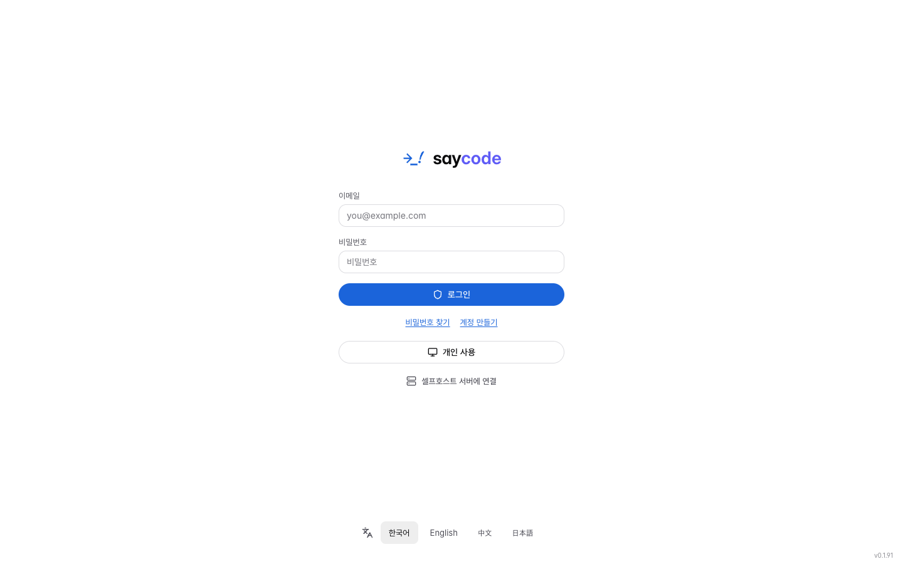
| 위치 | 이름 | 용도 |
|---|---|---|
| 위쪽 | 이메일 · 비밀번호 · 로그인 | Saycode 계정으로 로그인합니다. 조직(팀)을 쓴다면 이 방법입니다. |
| 로그인 아래 | 비밀번호 찾기 · 계정 만들기 | 앱 안에서 가입하거나 비밀번호를 다시 정합니다. |
| 가운데 | 개인 사용 | 계정 없이 내 PC에서 바로 시작합니다. |
| 맨 아래 | 셀프호스트 서버에 연결 | 직접 운영하는 Saycode 서버에 연결 코드로 접속합니다. |
| 화면 하단 | 한국어 / English / 中文 / 日本語 | 앱 언어. 누르면 바로 바뀌고, 나중에 내 설정 → 일반 → 언어나 프로필 메뉴의 언어에서도 바꿉니다(3.2). 오른쪽 아래에 앱 버전(v0.1.91)이 보입니다. |
1.3 방법 ① 개인 사용 — 계정 없이 시작#
조건: 없음. 로그인하지 않은 첫 화면에서만 보입니다. 이 방식에서는 대화와 프로젝트가 이 PC에만 저장됩니다.
- 시작 화면에서 개인 사용을 누릅니다.
- 개인 사용 (내 PC 연결) 창이 나오면 안내(계정 없이 내 PC에서 바로 시작, 대화와 프로젝트는 내 PC에 저장)를 읽고 확인을 누릅니다. 취소하려면 취소를 누르세요.
- 작업공간 준비 중… 화면이 나오고, Saycode가 이 PC에서 작업공간을 준비합니다. 보통 10초쯤, 처음에는 더 걸릴 수 있습니다.
- 준비가 끝나면 "첫 작업까지 함께 준비해요" 창이 자동으로 열립니다 → 2장 시작준비로 이어집니다.
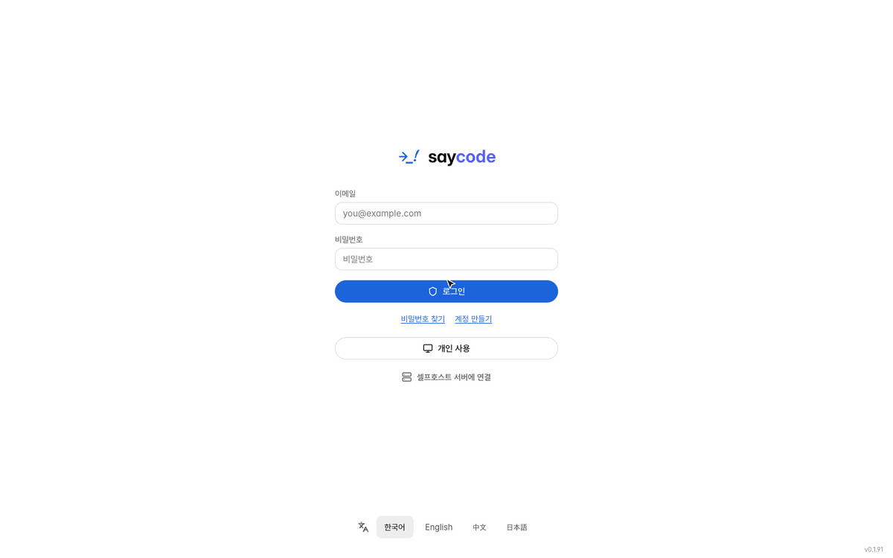
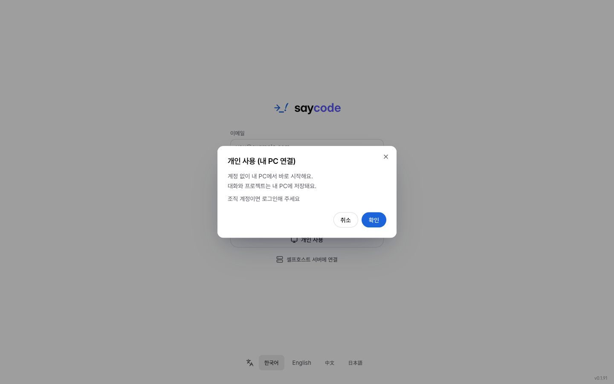
참고
창 아래쪽의 "조직 계정이면 로그인해 주세요"는 조직에 속한 분은 개인 사용이 아니라 로그인으로 들어와야 한다는 뜻입니다.
팁
나중에 계정이 생기면 사이드바 맨 아래 프로필 버튼 → 로그인으로 바꿔 팀 기능을 쓸 수 있습니다. 개인 사용에서 만든 로컬 프로젝트는 로그인 후에도 그대로 남습니다.
이름 정하기와 개인 사용 마치기
- 개인 사용에서도 내 설정 → 일반 → 프로필에서 표시 이름(20자까지)을 정하고 저장할 수 있습니다. 정하기 전에는 인사말이 "게스트님, 안녕하세요", 아바타가 게로 보이고, 이름은 이 컴퓨터에만 저장됩니다.
- 개인 사용을 마치려면 프로필 메뉴의 맨 아래 개인 사용 종료를 누르고, 개인 사용을 종료하시겠습니까? 확인 창에서 한 번 더 개인 사용 종료를 누릅니다. 처음의 시작 화면으로 돌아갑니다. 개인 사용에는 로그아웃이 없습니다.
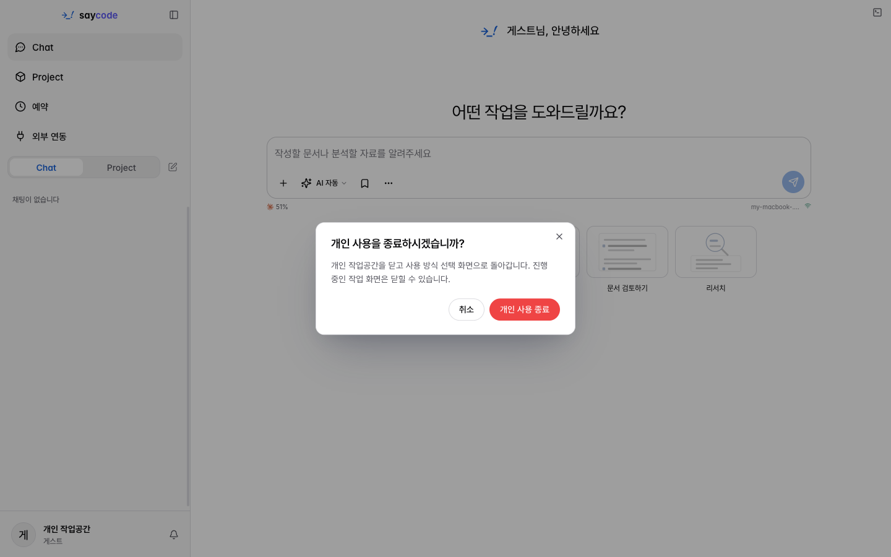
1.4 방법 ② 로그인 — 계정으로 시작#
조건: Saycode 계정이 필요합니다. 계정이 없다면 아래 순서로 앱 안에서 만듭니다.
- 계정 만들기를 누릅니다.
- 이메일을 입력하고 인증 코드 받기를 누릅니다. 받은 편지함(스팸함 포함)에 온 6자리 인증코드를 입력합니다. 메일 발송에 실패하면 이메일을 확인하고 다시 보내세요.
- 비밀번호와 비밀번호 확인을 입력해 가입을 마칩니다.
- 가입한 계정으로 이메일·비밀번호를 입력하고 로그인을 누릅니다.
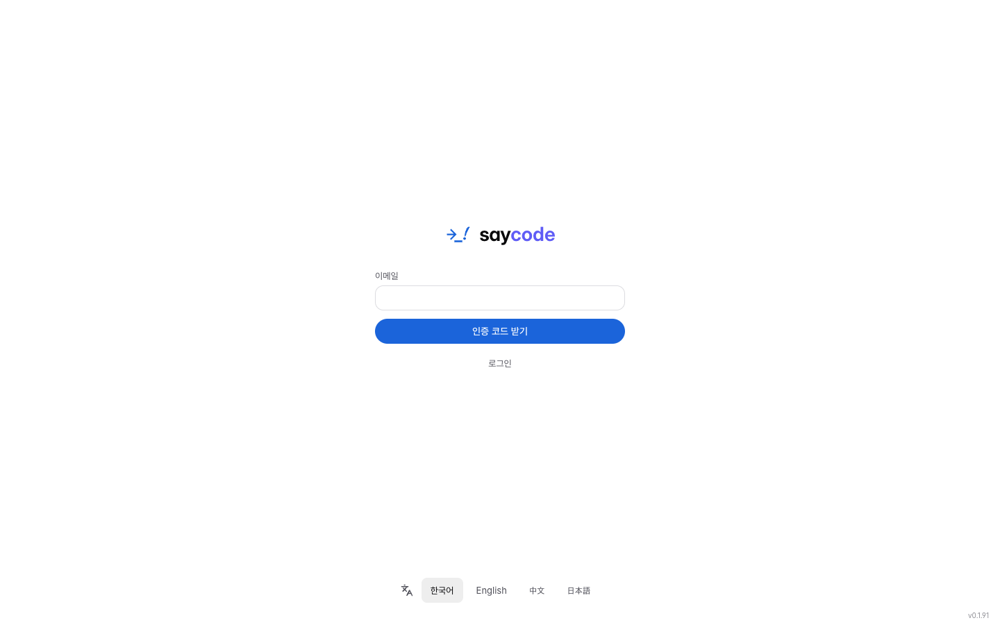
참고
서버가 켠 경우에만 로그인·계정 만들기 화면에 Google로 계속하기 버튼이 나옵니다. 누르면 시스템 브라우저에서 Google 인증과 기기 연결 승인을 하고, 앱에 표시된 확인 코드를 브라우저에 입력합니다. 이 가이드의 v0.1.91 화면에서는 이 버튼이 보이지 않습니다.
비밀번호를 잊었다면 비밀번호 찾기 → 이메일 입력 → 인증코드 보내기 → 6자리 코드 입력 → 새 비밀번호·비밀번호 확인 → 비밀번호 변경 → 로그인으로 돌아가기 순서입니다.
참고
재설정 코드는 10분 동안만 유효하고, 다시 보내기는 60초 뒤에 누를 수 있습니다. 변경한 뒤에는 자동으로 로그인되지 않으니 다시 로그인하세요.
조직에서 시작하기 [조직]#
로그인 후 조직 계정이라면 "어느 조직에서 작업할까요?" 화면이 나옵니다.
- 목록에서 작업할 조직을 고릅니다. 소속된 조직이 없으면 작업공간 만들기로 직접 만들거나, 받은 초대를 수락하거나, 초대 코드로 참여에 코드를 넣고 조직에 참여를 누릅니다.
- 다음을 누르면 필요한 도구를 준비하고 이 컴퓨터를 조직의 작업PC로 등록한 뒤 AI 연결을 확인합니다.
- 준비가 끝나면 완료를 누릅니다.
팁
컴퓨터 준비가 막혔거나 지금 등록하고 싶지 않다면 이 PC 나중에 등록을 누르세요. 앱에는 바로 들어갈 수 있고, 등록은 나중에 내 설정 → 개발 → 작업PC → 작업PC 등록에서 할 수 있습니다. 조직에 다른 온라인 작업PC가 있다면 그 PC에서 대화할 수 있습니다.
1.5 방법 ③ 셀프호스트 서버에 연결#
조건: 직접 운영하는 Saycode 서버(saycode server로 띄운 서버)와 서버에서 만든 소유자 연결 코드가 필요합니다. 일반 사용자는 건너뛰어도 됩니다.
- 시작 화면에서 셀프호스트 서버에 연결을 누릅니다.
- 서버에서
saycode server connect로 발급한 연결 코드를 연결 코드 칸에 붙여넣습니다. - 연결을 누릅니다.
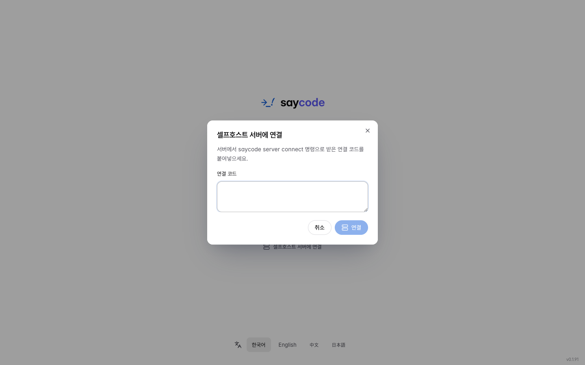
참고
회사가 따로 운영하는 서버에 연결하면 시작준비, 모바일 연결 같은 일부 설정 메뉴가 보이지 않고, 작업PC 등록은 "새 작업PC에서 로그인 명령을 실행해 나온 연결 코드를 서버에서 승인"하는 방식이 됩니다.
2. 시작준비#
AI가 일할 수 있도록 이 컴퓨터를 준비하고 AI 계정을 연결하는 첫 설정입니다. 개인 사용으로 처음 들어오면 "첫 작업까지 함께 준비해요" 창이 자동으로 열립니다.
참고
조건: 로그인한 계정은 처음에 이 창 대신 조직 시작 화면이 나옵니다. 회사가 따로 운영하는 서버에 연결했다면 시작준비 메뉴가 보이지 않습니다. 시작준비는 닫아도 언제든 다시 열 수 있습니다.
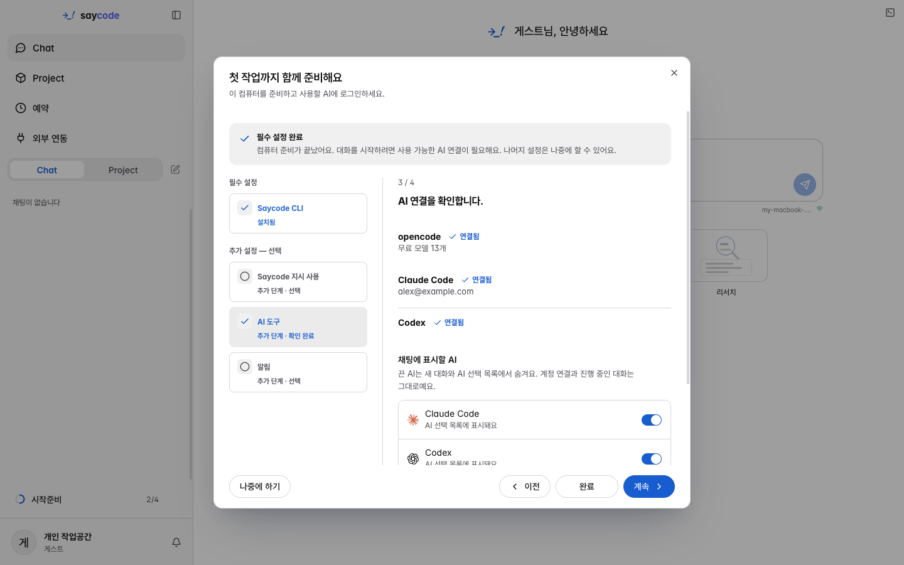
2.1 단계 구성#
왼쪽 목록은 필수 설정과 추가 설정 — 선택으로 나뉩니다. 필수 설정이 끝나면 "필수 설정 완료"가 표시되고, 나머지는 나중에 해도 됩니다. 다만 대화를 시작하려면 AI 연결이 하나는 있어야 합니다. 개인 사용의 단계 순서는 Saycode CLI → Saycode 지시 사용 → AI 도구 → 알림 네 가지입니다. [조직] 계정은 이 컴퓨터 등록이 CLI 다음에 끼어 다섯 가지이고, AI 도구 단계에는 관리자가 나에게 배정한 조직 AI만 보입니다.
| 구분 | 단계 | 하는 일 |
|---|---|---|
| 필수 | Saycode CLI | AI가 실제로 일하는 런타임을 준비합니다. 앱에 포함돼 있어 보통 곧바로 설치됨으로 표시됩니다. |
| 필수 [조직] | 이 컴퓨터 등록 | 이 컴퓨터를 조직의 작업PC로 등록합니다. |
| 추가 | Saycode 지시 사용 | 지시 사용하기 / 사용 안 하기 중에서 고릅니다. 처음에는 사용 안 하기가 이미 체크된 것처럼 보이지만(기본 꺼짐) 직접 눌러야 단계가 설정됨이 됩니다. 나중에 내 설정 → 일반 → 시스템 프롬프트에서도 바꿀 수 있습니다(15장). |
| 추가 | AI 도구 | 이 컴퓨터에 연결된 AI(Claude Code, Codex, Opencode 등)를 확인하고, 연결되지 않은 AI는 여기서 바로 연결합니다(2.2). |
| 추가 | 알림 | 입력 요청 소리(기본 켜짐)와 작업 완료 소리(기본 꺼짐), 알림 소리 전체 끄기를 정하고 테스트 알림 보내기로 확인합니다. |
왼쪽 단계 목록에는 번호 대신 상태 아이콘이 보입니다(끝난 단계는 체크, 남은 단계는 빈 원). 추가 단계의 문구는 추가 단계 · 선택에서 설정됨(AI 도구는 확인 완료)으로 바뀝니다. 단계를 고른 뒤에는 계속을 눌러 다음으로 넘어갑니다(자동으로 넘어가지 않습니다).
아래쪽 왼쪽에 나중에 하기, 오른쪽에 이전·완료(흰색 보조 버튼)·계속(파란색 주 버튼)이 있습니다. 마지막 알림 단계에서는 주 버튼이 첫 프로젝트 추가로 바뀌어, 누르면 프로젝트를 만드는 창으로 이어집니다(5.2). 완료를 누르면 창이 닫힙니다. 이 단계부터 자동 진행 버튼은 설치할 도구가 남아 있을 때만 나타나며, 필요한 도구를 내려받아 설치합니다.
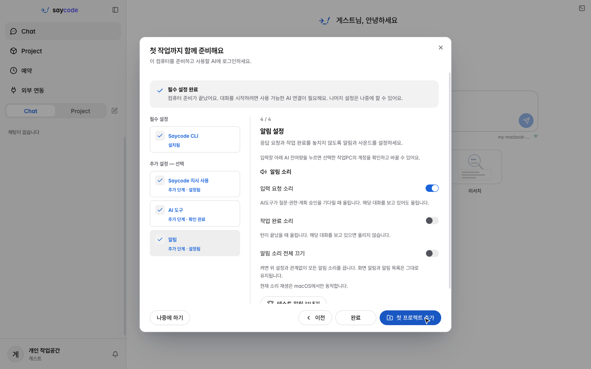
2.2 AI 연결하기#
AI 도구 단계는 열 때 연결 정보를 한 번 확인합니다(AI 연결을 확인합니다.). 이 컴퓨터에 이미 로그인된 Claude·ChatGPT는 따로 등록하지 않아도 연결됨으로 표시되고 그대로 사용됩니다. 연결되지 않은 AI도 목록에서 사라지지 않고 상태별로 보입니다.
| 상태 | 뜻 | 할 일 |
|---|---|---|
| 연결됨 | 이 컴퓨터에서 바로 쓸 수 있습니다. | 없음 |
| 연결 안 됨 | 아직 로그인하지 않았습니다. | 행의 연결을 누르면 그 AI의 로그인 단계가 열립니다. |
| 확인 필요 | 연결 상태를 확인하지 못했습니다. | 잠시 뒤 다시 확인하거나 연결을 눌러 로그인합니다. |
연결된 AI가 하나도 없으면 내 AI 계정을 연결해 주세요. 안내와 연결 버튼이 나옵니다.
- 내 AI 계정 연결하기를 누르고 ChatGPT 또는 Claude를 고릅니다(ChatGPT·Claude는 웹사이트에서 로그인하고, **무료 모델 (opencode)**은 계정 없이 시작합니다).
- 브라우저가 열리면 로그인합니다. 안내에 따라 링크 버튼을 누르고 인증 코드를 입력합니다.
- 돌아오면 연결 상태가 한 번 더 확인되어 연결됨으로 바뀝니다.
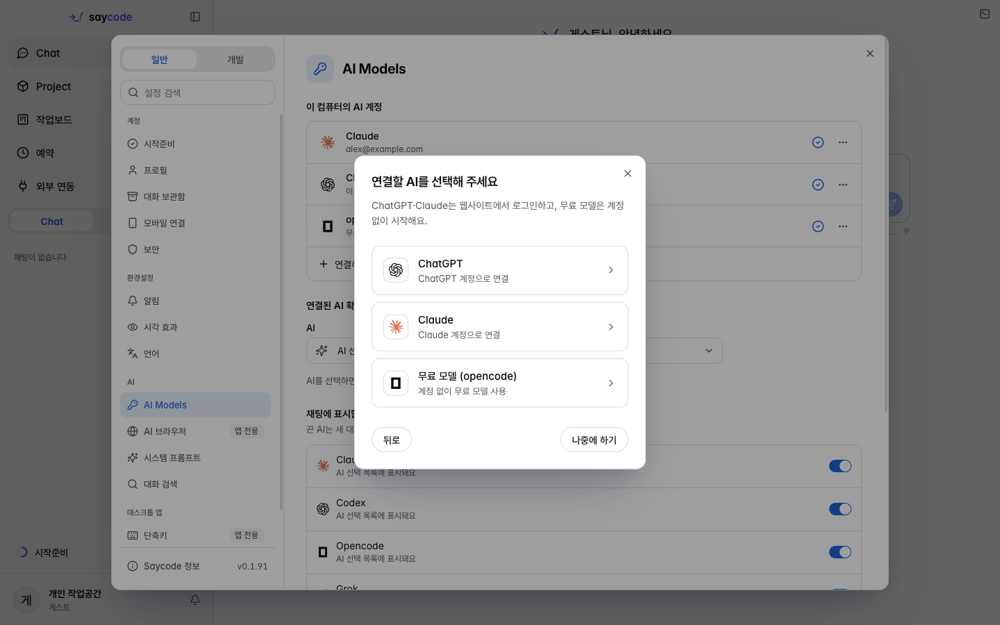
이 선택 창은 내 설정 → 일반 → AI Models → 연결하기에서도 열립니다.
유료 AI 계정이 없다면 무료 모델로 시작하기를 쓰세요(자세한 내용은 7.5).
- 선택 창에서 **무료 모델 (opencode)**을 고릅니다.
- 무료 모델로 시작하기 확인 화면의 알아 두세요를 읽습니다(기간 한정이라 자주 바뀜, 모델마다 다른 한도와 입력 보관·학습 정책, 유료 모델보다 낮을 수 있는 성능 등).
- 설치하고 시작하기를 누릅니다. 이미 opencode가 설치되어 있으면 "이미 설치된 opencode를 확인해요"가 나오고 버튼은 확인하고 시작하기입니다.
- 준비가 끝나면 새 대화의 AI도구에서 Opencode를 고르면 됩니다. 모델을 따로 고르지 않으면 메시지마다 추천 무료 모델이 자동으로 선택됩니다.
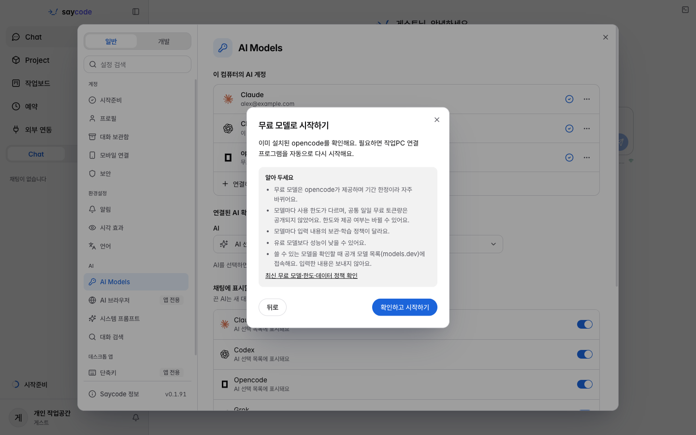
중요
무료 모델의 조건: 이 컴퓨터가 내 작업PC이고 온라인일 때만 설치할 수 있습니다. 조직이 쓸 AI를 제한했다면 설치가 막힙니다. 무료 모델 한도에 걸리면 다른 무료 모델로 최대 3번까지 자동 전환되며 유료 모델로는 절대 넘어가지 않습니다.
주의
회사·고객 코드나 기밀 자료는 주의하세요. 무료 모델은 모델마다 입력(프롬프트·코드)의 보관·학습 정책이 다르고, 일부는 무료 기간에 입력을 모델 개선에 쓸 수 있다고 밝히고 있습니다. 기밀 자료에는 보관하지 않고 학습에도 쓰지 않는다고 밝힌 무료 모델만 쓰거나, 유료·조직 AI를 연결하세요(7.5).
같은 단계의 채팅에 표시할 AI 스위치(Claude Code·Codex·Opencode·Grok)로는 쓰지 않는 AI를 선택 목록에서 숨깁니다(하나는 남습니다). [조직] 계정은 AI 단계에 조직 계정 연결하기, 암호화키 확인, 메시지 테스트 버튼도 보이니 관리자와 함께 확인하세요.
2.3 나중에 다시 열기#
방법 ① 사이드바의 진행률 줄: 시작준비가 끝나지 않았다면 사이드바 맨 아래, 프로필 버튼 바로 위에 진행률 링과 시작준비 N/4(조직은 N/5) 줄이 보입니다. 누르면 내 설정의 시작준비가 열려 남은 단계를 이어서 할 수 있습니다. 줄에 마우스를 올리면 오른쪽에 ×(사이드바에서 숨기기)가 나타나 숨길 수 있고, 모든 단계를 끝내면 저절로 사라집니다.
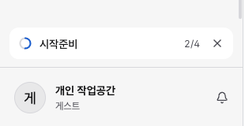
방법 ② 설정에서 열기
- 사이드바 맨 아래 프로필 버튼을 누릅니다.
- 내 설정 → 일반 → 시작준비를 엽니다.
- 설치할 도구가 남아 있으면 이 단계부터 자동 진행을 누릅니다. 모두 설치됐다면(추가 도구 7/7 설치됨) 상태만 확인하고(다시 확인), 마지막 버튼 완료로 닫습니다. 이 화면에는 첫 프로젝트 추가가 없고, 완료를 누르면 사이드바의 시작준비 줄도 사라집니다.
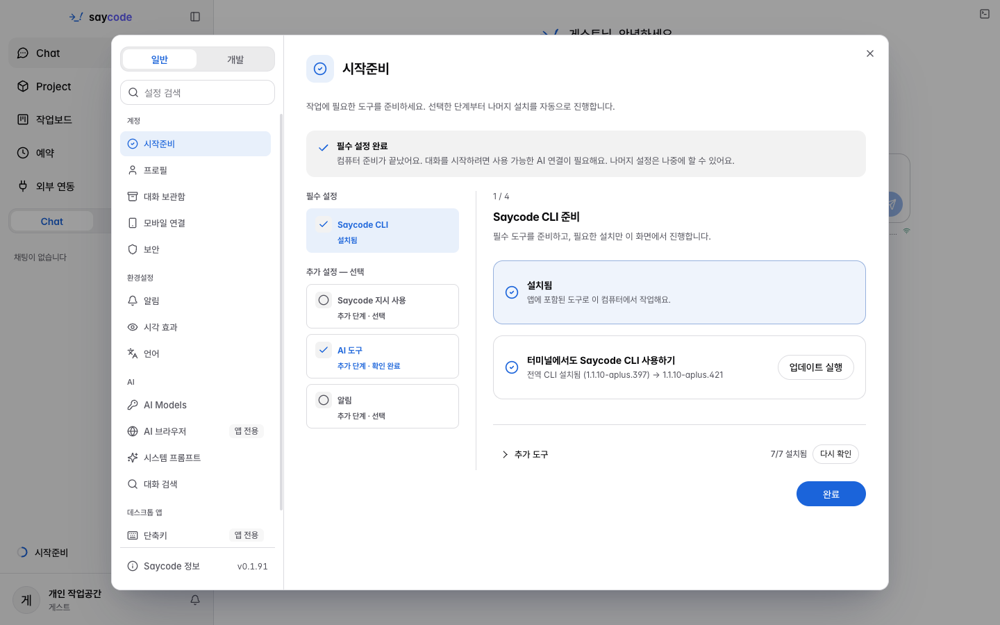
팁
Windows에서는 Node.js·uv·Git을 자동으로 설치해 줍니다. 자동 설치가 어렵다면 직접 설치할게요를 고르세요. 오류가 나면 오류 상세 → 다음 조치 → 설치 안내를 누르고, 필요하면 로그 복사로 지원 담당자에게 전달합니다. macOS에서 Git 항목에 Xcode 명령줄 도구 필요가 보이면 명령줄 도구 설치를 누르고 Apple 설치 창 안내를 마친 뒤 다시 시도를 누르세요.
팁
AI 계정은 나중에 내 설정 → 일반 → AI Models에서 연결하기, 행의 … 메뉴 → 연결 해제 / Saycode에 다시 연결 / 계정 추가로 관리합니다(7.5).
3. 화면 둘러보기#
Saycode는 왼쪽 사이드바에서 시작하고, 설정은 왼쪽 아래 프로필 버튼에서 엽니다. 이 장에서는 화면의 큰 길잡이 세 가지를 익힙니다.
3.1 사이드바#
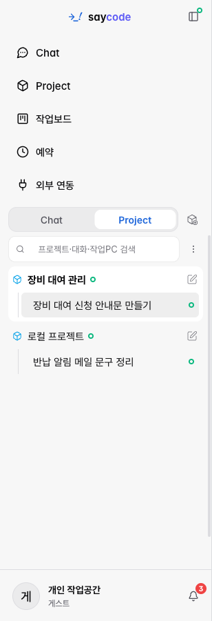
위에서 아래로 다음과 같이 구성됩니다.
| 영역 | 내용 |
|---|---|
| Chat | 프로젝트 없이 대화하는 시작 화면(어떤 작업을 도와드릴까요?) → 4장 |
| Project | 프로젝트 홈. 안에 Build(말로 기획 시작)와 Develop(저장소·폴더로 시작) 모드가 있습니다 → 5장 |
| 작업보드 | 모든 대화를 칸반으로 보는 화면. [개발자] 기본은 숨김 → 12장 |
| 예약 | 정해진 시간마다 AI에게 일을 맡기는 화면. 개인 사용에서는 예시와 로그인 버튼만 보입니다 → 13장 |
| 외부 연동 | 서비스 연결, 확장 설치 → 16장 |
| Chat / Project 탭 | 아래 목록을 채팅과 프로젝트 사이에서 전환하며, 그 종류에서 마지막으로 보던 대화가 열립니다. 탭 오른쪽 버튼은 Project에서는 새 프로젝트(큐브+), Chat에서는 새 대화(연필)입니다. |
| 검색창과 목록 | 프로젝트를 누르면 대화가 펼쳐지고, 더 있으면 더보기로 불러옵니다. |
| 시작준비 줄 | 끝나지 않았을 때만 프로필 버튼 위에 시작준비 N/4로 나타납니다(2.3). |
| 맨 아래 프로필 버튼 | 누르면 프로필 메뉴가 열립니다. 개인 사용에서는 "개인 작업공간 · 게스트"(표시 이름을 정하면 그 이름)로 표시됩니다. |
| 종 아이콘 | 최근 알림. 알림을 누르면 해당 대화로 이동하고, 전체보기는 알림 센터(미확인 / 확인함 탭)를 엽니다. |
대화 줄 표시: 상태 점, 작업트리 아이콘(연결된 PR 상태에 따라 초록·파랑·빨강·회색), PR 번호가 붙습니다. 주황색 질문 아이콘은 답을 기다리는 중, 빨간 마름모 점은 실패로 끝났는데 아직 안 열어 본 대화입니다.
목록 검색과 보기: 검색창은 ⌘K로도 엽니다(긴 목록에서는 맨 위로 스크롤해야 보입니다). Project 목록에서는 검색창 오른쪽 점 세 개 버튼(프로젝트 보기 옵션)으로 전체 / 내 프로젝트 / 함께 작업 / 공유받은 프로젝트 범위, 대화 정렬(상태순이면 입력을 기다리는 대화부터 위로), 대화 상태 필터를 고릅니다. 기본 보기로를 누르면 처음 보기로 돌아갑니다.
사이드바 접기·너비: ⌘B(또는 위쪽 접기 버튼)로 접고 펼칩니다. 접으면 사이드바 펼치기, Chat, Project, 작업보드(표시를 켠 경우), 예약, 외부 연동 아이콘만 세로로 남고 맨 아래에 알림 종과 프로필 아바타가 있습니다. 내 설정은 아바타를 눌러 프로필 메뉴에서 엽니다. 펼친 상태에서는 오른쪽 경계를 끌어 너비를 바꿉니다.
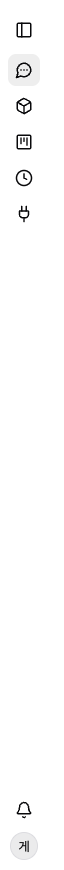
팁
프로젝트 줄에 마우스를 올리면 점 세 개(⋮) 메뉴에서 고정, 프로젝트 설정, 모든 대화를 고릅니다. 대화 줄의 메뉴는 10장에서 설명합니다.
3.2 프로필 메뉴#
프로필 버튼을 누르면 열립니다. 아래는 개인 사용의 순서입니다.
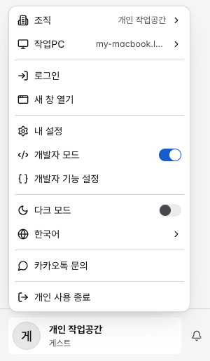
| 항목 | 설명 |
|---|---|
| 조직 | 작업할 조직을 바꿉니다. 개인 사용에서는 "개인 작업공간"이 보이고, 여러 조직에 속했다면 목록에서 고릅니다. |
| 작업PC | 새 작업을 실행할 기본 작업PC를 고릅니다. 내가 등록한 작업PC 목록이 열리며, 오프라인 작업PC는 보이지 않습니다. |
| 로그인 | 계정으로 로그인합니다. 로그인한 계정에는 로그아웃이 보입니다. |
| 새 창 열기 | 앱 창을 하나 더 엽니다(⌘N). |
| 내 설정 | 모든 설정(⌘,). 3.3에서 설명합니다. |
| 개발자 모드 | 켜 두면(기본) 대화를 여러 탭으로 열고 IDE처럼 화면을 나눠 쓰고, 끄면 대화 하나만 보입니다. 꺼도 열어 둔 탭은 지워지지 않습니다 → 10.9. 아래 개발자 기능 설정과는 다릅니다. |
| 개발자 기능 설정 | 숨겨진 기능을 켜는 스위치 모음 → 3.4 |
| 다크 모드 | 어두운 테마 스위치입니다. |
| 언어 | 현재 언어 이름이 표시됩니다. 누르면 한국어·English·日本語·简体中文 중에서 고르며, 바로 적용되고 유지됩니다. |
| 카카오톡 문의 | 오픈채팅방이 열립니다. 로그인하면 사용 문의(이미지 3장까지 첨부)로 바뀝니다. |
| 개인 사용 종료 | 개인 사용 중에만 보이는 맨 아래 항목입니다(1.3). |
| 조직 관리 [조직] | 조직 소유자·관리자에게만 보입니다(보이는 경우 메뉴 맨 위). 비밀번호로 한 번 더 인증한 뒤 관리 창을 엽니다 → 18장 |
| 업데이트 확인 | 정식 설치본에서 보입니다. |
3.3 내 설정의 일반과 개발#
프로필 메뉴 → 내 설정(⌘,)을 열면 왼쪽 위에서 일반과 개발 두 영역을 오갑니다. 일반의 왼쪽 메뉴는 계정 / 환경설정 / AI / 데스크톱 앱 묶음, 개발은 개발 환경 / 개발 도구 묶음으로 나뉩니다. Saycode 정보(앱 버전·업데이트 확인)는 왼쪽 메뉴 맨 아래에 고정되어 있습니다.
왼쪽 위 설정 검색에 다크, 알림음, 예약, 자동 작업처럼 찾는 기능을 입력하면 해당 메뉴만 추려 줍니다(옛 이름으로도 검색됩니다. 예: 머신 → 작업PC). 보고 있던 메뉴가 검색 결과에 없으면 첫 번째 결과가 자동으로 열립니다.
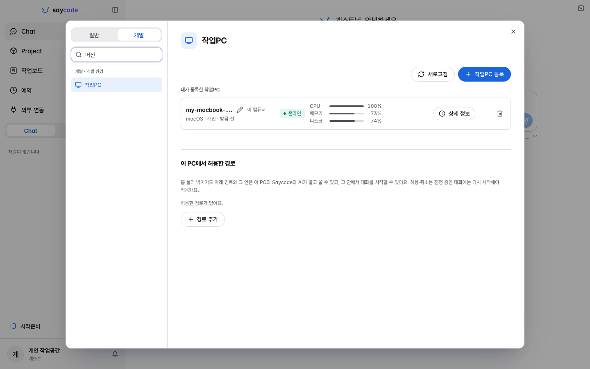
개발 환경 > 작업PC 메뉴 하나만 남고 자동으로 열립니다" />메뉴 전체 지도는 부록 B.1·B.2에 있습니다.
참고
[로그인] 표시가 있는 메뉴는 개인 사용에서는 보이지 않습니다(예: 스킬, 커넥터). 조직 관리자가 끈 설정은 잠기고 "조직 정책으로 정해진 설정"이라는 안내가 붙습니다.
3.4 개발자 기능 설정#
프로필 메뉴 → 개발자 기능 설정(또는 내 설정 → 개발 → 개발자 기능 설정, 앱 전용)에서 아래 스위치 10개를 켭니다. 기본은 모두 꺼져 있습니다.
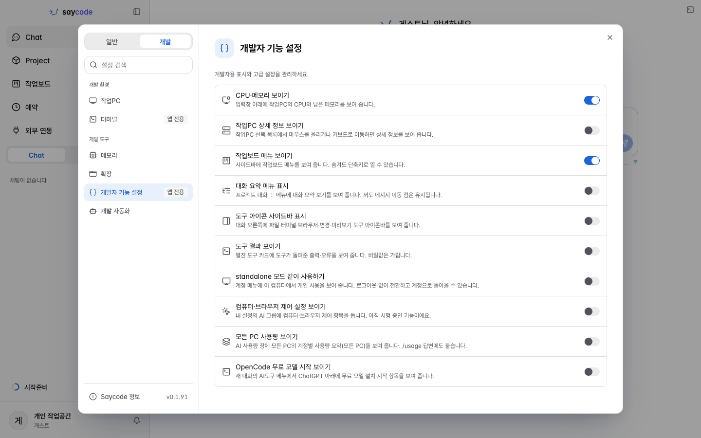
| 스위치 | 켜면 |
|---|---|
| CPU·메모리 보이기 | 입력창 아래에 작업PC의 CPU와 남은 메모리 표시 |
| 작업PC 상세 정보 보이기 | 작업PC 선택 목록에서 항목에 마우스를 올리면 상세 정보 표시 |
| 작업보드 메뉴 보이기 | 사이드바에 작업보드 메뉴. 숨겨도 단축키로 열 수 있음 (12장) |
| 대화 요약 메뉴 표시 | 프로젝트 대화 ⋮ 메뉴에 대화 요약 보기 추가(10.1) |
| 도구 아이콘 사이드바 표시 | 파일·터미널·브라우저·변경·미리보기 아이콘 열을 대화 오른쪽에 표시 |
| 도구 결과 보이기 | 펼친 도구 카드에 도구가 돌려준 출력·오류 표시(비밀값은 가림) |
| standalone 모드 같이 사용하기 | 로그인 계정을 쓰면서 이 컴퓨터의 개인 사용도 병행. 프로필 메뉴에 이 컴퓨터에서 개인 사용, 돌아올 때 계정으로 돌아가기가 생깁니다. |
| 컴퓨터·브라우저 제어 설정 보이기 | 내 설정 AI 묶음에 컴퓨터·브라우저 제어 항목 추가(시험 중, macOS 권한 확인용) (16.4) |
| 모든 PC 사용량 보이기 | AI 사용량 창에 모든 PC의 계정별 사용량 요약 표시(7.4) |
| OpenCode 무료 모델 시작 보이기 | 새 대화의 AI도구 메뉴에 무료 모델 설치·시작 항목 표시(7.5) |
참고
AI 브라우저 메뉴 보이기, 대화 상단 AI 브라우저 바로가기 표시, 조직 검색 설정 [조직]은 개인 사용의 이 목록에 없습니다. 개인 사용에서는 앱 안의 브라우저·미리보기 패널도 보이지 않습니다(9장).
4. Chat으로 프로젝트 없이 일하기#
프로젝트를 만들지 않고 바로 질문하고, 문서·표·발표자료를 만드는 곳입니다. 개인 사용에서도 대화가 저장되고 이어집니다.
참고
조건: 대화를 시작하려면 온라인 작업PC와 연결된 AI가 하나씩 필요합니다. 없으면 입력창 아래에 "작업PC 설정 열기" 또는 파란 내 AI 연결 안내가 나옵니다(2장). 준비되기 전에는 입력창이 비활성으로 보이지만 쓰던 글은 보존됩니다.
4.1 첫 질문 보내기#
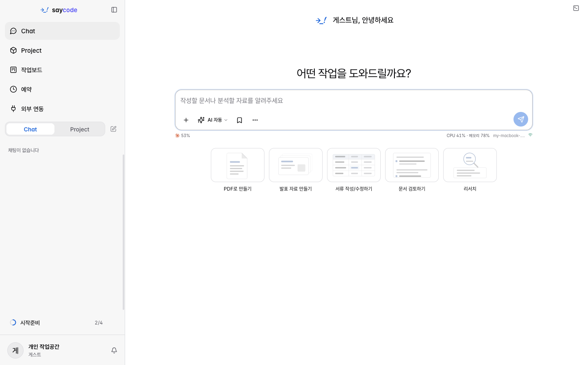
- 사이드바에서 Chat을 누릅니다.
- 가운데 입력창(
어떤 작업을 도와드릴까요?)에 요청을 적습니다. - 입력창 오른쪽의 전송 버튼(종이비행기)이나 Enter로 보냅니다. Enter 대신 ⌘Enter로 보내려면 내 설정 → 단축키 → 메시지 보내기 키에서 ⌘Enter로 보내기를 고르세요(그러면 Enter는 줄바꿈).
- 대화가 열리면 사이드바 Chat 탭의 목록에 쌓이고, 같은 화면에서 이어서 물어볼 수 있습니다.
입력창 아래 오른쪽의 작업PC 이름을 누르면 이 Chat을 실행할 작업PC를 바꿀 수 있습니다(온라인인 PC만 보입니다). 새 대화 이후에는 바꿀 수 없습니다. 화면 오른쪽 위의 터미널 아이콘으로는 Chat을 벗어나지 않고 하단 터미널을 엽니다.
팁
입력창 아래의 시작 예시 카드(PDF로 만들기 · 발표 자료 만들기 · 서류 작성/수정하기 · 문서 검토하기 · 리서치)를 누르면 예시 요청이 채워집니다.
4.2 문서 형식과 템플릿#
DOCX·XLSX·PPTX·PDF 같은 Office 문서를 만들 때는 형식과 양식을 먼저 고르면 결과가 훨씬 안정적입니다.
- 새 Chat 입력창 왼쪽 +(추가)를 누릅니다.
- 메뉴에서 만들 문서 형식을 고릅니다 — 문서(DOCX) / 스프레드시트(XLSX) / 프레젠테이션(PPTX) / PDF 문서(PDF). 같은 메뉴에는 파일 또는 사진 추가(⌘U), 폴더 추가, 기존 경로에서 시작(이 컴퓨터의 기존 폴더를 작업 경로로 사용)도 있습니다.
- 입력창 위에 템플릿 갤러리가 열립니다. 기본 양식(Design Report, Minimal Letterhead)이나 내가 저장한 개인 양식을 고릅니다. 고른 형식은 입력창 위의 칩(예:
문서)에 표시되며 칩의 ✕로 해제합니다. - 양식을 따로 저장하려면 내 템플릿 만들기로 Office 파일과 작성 지침을 등록합니다.
- 입력창에 만들 내용을 적고 보냅니다. 예: "3분기 장비 대여 현황 보고서를 만들어줘."
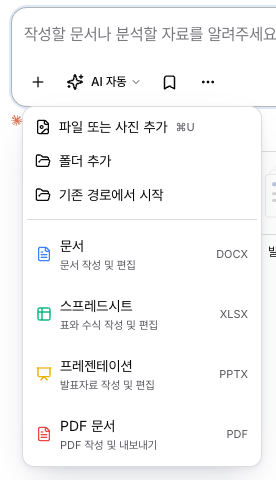
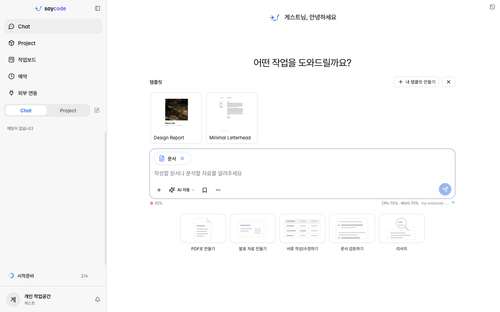
참고
기본 양식은 확장 설치 없이 쓸 수 있습니다. 개인 템플릿 원본은 허용된 개인 작업PC에서만 사용할 수 있습니다.
4.3 결과 파일 보기·저장·공유#
AI가 만든 파일은 답변 아래 파일 카드로 나타납니다. 카드 한 줄에 파일 이름 · 저장 · 공개 링크가 있습니다.
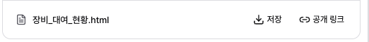
파일 이름을 누르면 오른쪽 작업 도구 패널에서 문서가 열립니다(DOCX·PDF·HTML·마크다운·이미지 지원). HTML 결과는 대화 안에 인라인 미리보기가 먼저 나오고, 첫 HTML 결과가 만들어진 직후에는 오른쪽 패널에 파일 탭이 저절로 열리기도 합니다.
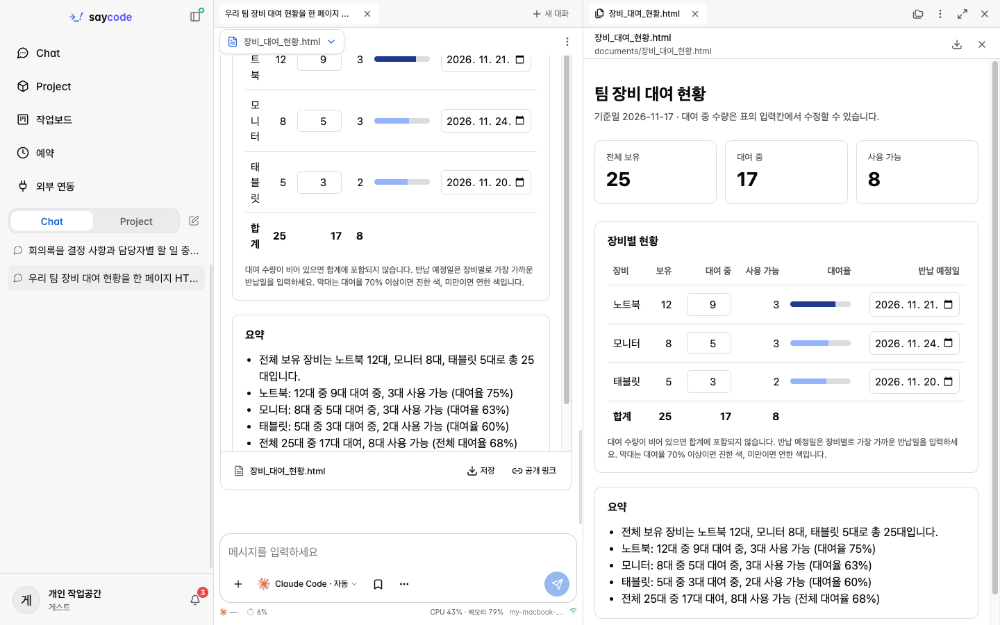
HTML 보고서 결과 — 왼쪽 대화의 인라인 미리보기와 파일 카드, 오른쪽 패널에 열린 보고서 저장을 누르면 내 컴퓨터의 원하는 위치에 저장합니다.
공개 링크는 로그인 없이도 카드에 보이지만, 링크를 만들어 공개하려면 [로그인] 계정이 필요합니다. 개인 사용에서 누르면 공개 링크 확장 설치 안내가 열리며 설치 진행을 눌러야 설치됩니다. 로그인 계정은 첫 로그인 때 이 확장이 자동 설치됩니다. 공개 순서는 다음과 같습니다.
- 공개 범위를 고릅니다. 기본은 링크가 있는 누구나, 조직만을 고르면 조직 구성원이 로그인해야 열립니다.
- 만료를 1일·3일·7일·30일 중에서 고릅니다.
- 공개하기를 누르면 주소가 만들어지고, 링크 복사로 복사합니다.
- 공개한 뒤에는 버튼이 체크 아이콘으로 바뀌고, 다시 누르면 현재 주소·범위·만료와 링크 복사·공개 중지가 나옵니다. 파일을 고쳤다면 수정본 공개를 누르세요.
[로그인] 로그인 계정의 카드에는 더보기(…) → 내 문서에 넣기도 있습니다. 개인 사용 카드에는 이 버튼이 없습니다.
HTML 결과 확대·축소: 인라인 미리보기에 마우스를 올리면 오른쪽 위에 **− 100% +**가 나타납니다. 25%~300%까지 조절하고 배율 숫자를 누르면 100%로 돌아옵니다. 앱 전체 크기는 바뀌지 않습니다.
중요
공개 링크 만들기는 로그인한 계정에서 동작합니다. 개인 사용에서는 저장과 앱 안 열람을 쓰세요. AI가 답변 중일 때는 공개 링크를 누를 수 없습니다.
4.4 Chat에서 쓸 수 있는 입력 기능#
Chat 입력창에서도 프로젝트 대화와 같은 기능 대부분을 쓸 수 있습니다. 자세한 사용법은 6장을 보세요.
- +: 파일 또는 사진 추가(⌘U), 폴더 추가, 기존 경로에서 시작
- 입력창 아래 책갈피(내 프롬프트)와 ⋯. 첫 메시지 전에는 ⋯에 프롬프트 검색만 있고, 대화를 시작하면 기획 모드가 더해집니다.
- AI가 답하는 동안 다음 요청을 대기열에 넣을 수 있고, AI의 질문은 질문 폼으로 답합니다.
- 기획 모드: 대화를 시작한 뒤 ⋯ → 기획 모드를 켜고 보내면 AI가 파일을 만들기 전에 계획부터 보여 줍니다(6.9).
/btw(곁질문),/recap(요약),/usage(AI 사용량), 코드 상자·표·[!NOTE]강조 상자 렌더링, 긴 붙여넣기 카드- [로그인] "매일 오전 9시에 요약해줘"처럼 말로 예약을 만들 수 있습니다(13장).
팁
사용법이 궁금할 때는 Chat에서 *"다크 모드는 어디서 켜?"*처럼 물어보세요. Saycode AI가 앱 안내로 답하고 해당 설정 화면을 바로 열어 줍니다. 이 기능은 내 설정 → 일반 → 시스템 프롬프트의 Saycode 사용 안내 스위치로 끌 수 있습니다.
4.5 Chat 대화를 프로젝트로 옮기기#
Chat에서 시작한 일을 프로젝트로 이어 가고 싶을 때 씁니다. 개인 사용의 Chat 대화 더보기(⋮)에는 이 항목이 없습니다(대화 고정 · 알림 소리 끄기 · 세션 유지 시간 · 예약 작업만 있음). [로그인] 계정에서는 다음과 같이 합니다.
- Chat 대화 머리글의 대화 더보기를 누르고 프로젝트로 전환을 고릅니다.
- 프로젝트 이름과 가져갈 파일을 고르고, 필요한 공개 확인을 체크합니다. 파일 목록이 비었으면 파일 목록 다시 확인을 누릅니다.
- 전환하고 프로젝트 열기를 누르면 새 프로젝트 대화가 열리고 입력창에서 바로 이어 쓸 수 있습니다.
5. 프로젝트 만들기#
내 폴더나 저장소를 프로젝트로 연결해 두면, 그 안에서 여러 대화로 코드를 만들고 고칠 수 있습니다. 한 창에서 네 가지 방법을 고릅니다.
참고
조건: 프로젝트를 만들 온라인 작업PC가 필요합니다. Git 저장소 탭은 [로그인] GitHub 또는 GitLab 연결이 필요하며(내 설정 → 개발 → 저장소), 나머지 방식은 계정 없이도 됩니다.
5.1 Project 메뉴: Build와 Develop#
사이드바 Project를 누르면 두 가지 시작 모드가 있습니다.
| 모드 | 이런 때 |
|---|---|
| Build | 만들고 싶은 것을 말로 설명해 기획부터 시작합니다. 입력창(기획으로 프로젝트 시작해보세요)에 적어 보내면 기획안이 나오고, 승인하면 구현으로 이어 갑니다(6.9). 아래에는 최근 프로젝트 카드가 나옵니다. |
| Develop | 코드 저장소나 폴더로 개발을 시작하는 개발자용입니다. 프로젝트 만들기 · 코드 저장소 가져오기 · ZIP·파일 가져오기 · 작업PC 폴더 사용하기 카드와 프로젝트 목록이 있습니다. 최근 프로젝트는 최근에 작업한 순서로 보입니다. |
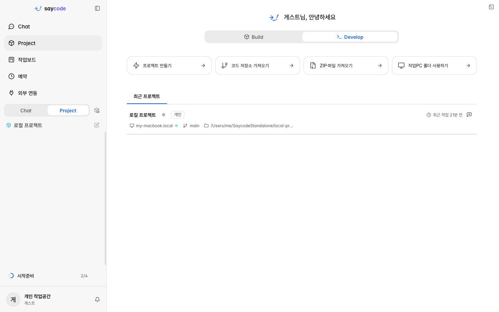
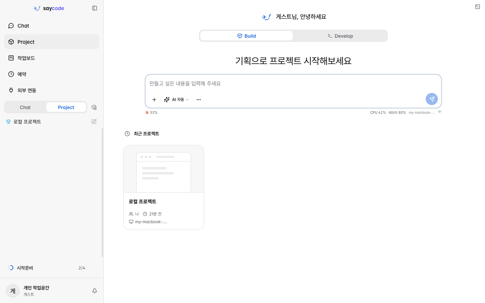
두 모드 모두 입력창 아래 오른쪽의 작업PC 이름을 눌러 어느 PC에서 시작할지 고를 수 있습니다.
5.2 프로젝트 만들기 창#
사이드바 Project → Develop → 프로젝트 만들기를 누르면 제목이 새 프로젝트인 창이 열립니다(이 가이드에서는 "프로젝트 만들기 창"이라고 부릅니다). Develop의 다른 카드로 해당 방식을 바로 열 수도 있습니다.
창 위쪽의 탭에서 방식을 고릅니다. 탭을 바꿔도 입력한 내용은 유지됩니다.
탭 설명 새 프로젝트 프로젝트 이름만 정하면 빈 폴더에서 시작합니다. 이름 아래 저장 위치에 폴더가 만들어질 곳이 표시됩니다. Git 저장소 원격 저장소 주소로 작업PC에 복제합니다. ZIP·파일 압축 파일이나 파일에서 프로젝트를 만듭니다. 기존 폴더 이미 있는 코드베이스를 그대로 연결합니다. 기존 폴더에서는 선택한 작업PC의 사용자 홈부터 폴더를 탐색합니다. 위쪽 화살표로 상위 폴더로 가고, 경로에 직접 입력해 Enter(또는 새로고침)로 확인합니다. 숨김 폴더는 접혀 있고 목록 끝의 숨김 폴더 N개 보기로 펼칩니다. 내 컴퓨터라면 새로운 경로에서 시작으로 운영체제 폴더 선택 창을 열 수 있습니다.
창 맨 아래 왼쪽의 작업PC: 이름을 누르면 프로젝트가 만들어질 PC를 바꿀 수 있습니다.
이름을 확인하고 프로젝트 만들기(가져오는 방식에서는 프로젝트 가져오기)를 누릅니다. 만들면 바로 그 프로젝트의 새 대화 화면이 열립니다.
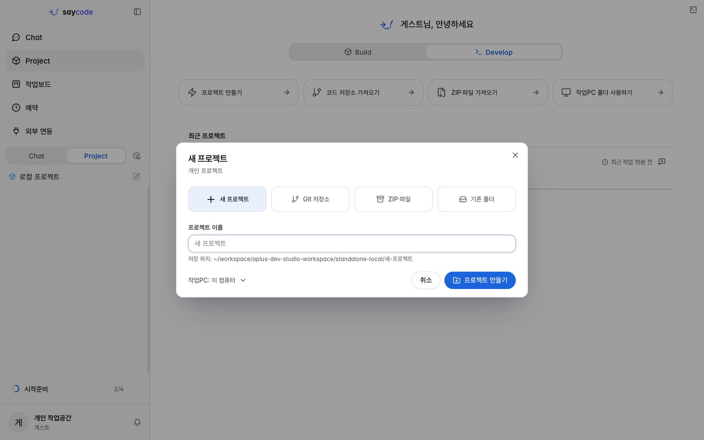
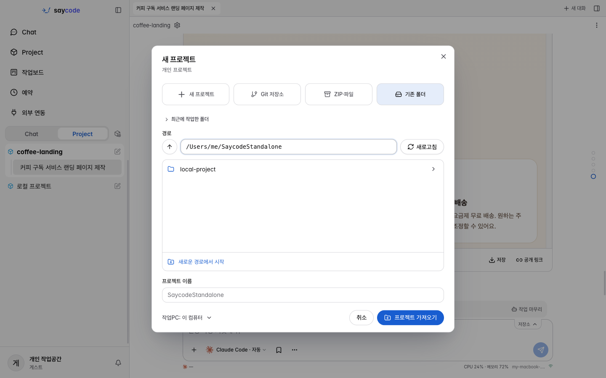
최근에 작업한 폴더로 한 번에 만들기#
이 컴퓨터에서 최근 30일 안에 Claude Code·Codex로 작업한 폴더를 골라 프로젝트를 한꺼번에 만들 수 있습니다.
- 시작준비 마지막 단계의 첫 프로젝트 추가 버튼을 누르거나, 새 프로젝트 → 기존 폴더 탭의 접힌 최근에 작업한 폴더를 펼칩니다.
- 만들 폴더를 체크합니다. 각 줄에
대화 N개 · N분 전이 보입니다. - 선택한 폴더 N개로 프로젝트 만들기를 누릅니다.
참고
이미 프로젝트인 폴더는 빠지고 세션 내용은 읽지 않습니다. 작업PC가 이 컴퓨터일 때만 보입니다.
홈 폴더 밖 폴더 열기#
홈 폴더 밖의 경로를 입력하면 이 폴더는 열 수 없어요라고 나옵니다. 이 PC에서 앱을 쓰고 있다면 안내 옆의 이 폴더 허용 → 허용으로 확인한 폴더만 열 수 있습니다.
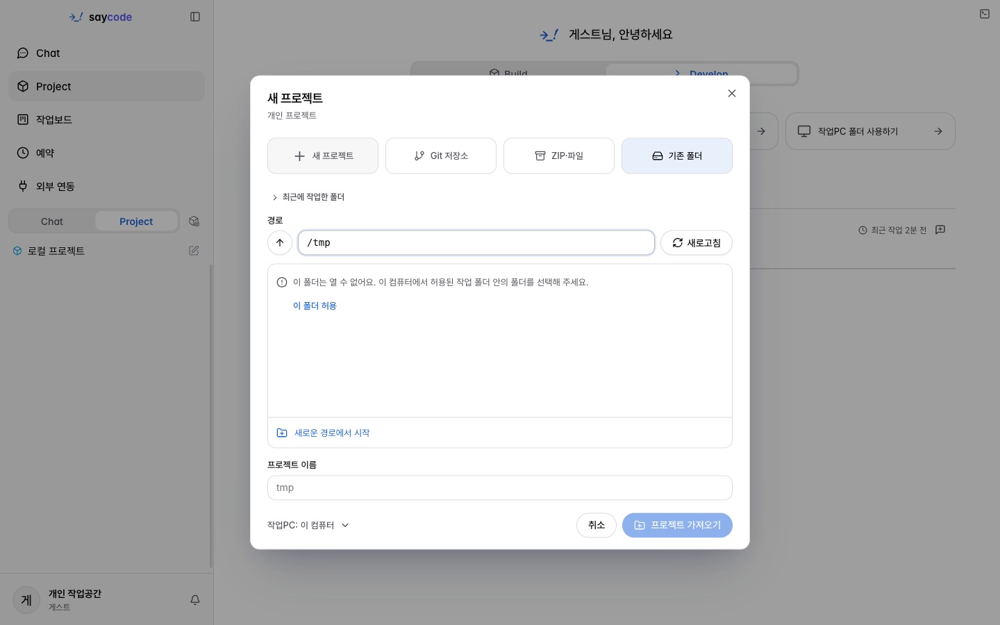
직접 추가·취소는 내 설정 → 개발 → 작업PC → 이 PC에서 허용한 경로에서 합니다. 경로 추가에서 폴더 선택… 또는 드라이브를 고르고 허용을 누르며, 취소는 허용 취소입니다.
주의
드라이브를 허용하면 같은 계정의 다른 기기에서도 그 드라이브에 접근할 수 있으니 필요한 것만 허용하세요. 다른 PC의 폴더는 그 PC의 앱에서만 허용할 수 있습니다.
팁
처음이라면 기존 폴더로 내가 쓰던 코드 폴더를 열거나, 새 프로젝트로 빈 폴더에서 시작해 보세요. Git 저장소 프로젝트여야 작업트리, 브랜치, PR 올리기가 모두 동작합니다.
5.3 프로젝트 설정#
프로젝트를 연 상태에서 대화 위 프로젝트 이름 옆 설정 버튼(또는 사이드바 프로젝트 ⋮ → 프로젝트 설정)으로 엽니다. 일반과 개발 두 묶음으로 나뉩니다.
| 묶음 | 항목 |
|---|---|
| 일반 | 프로젝트 정보(이름·설명·시작 AI 모드·시작 패널·태그·색상), 데스크탑 설정(알림 소리), 프로젝트 삭제. [로그인] 코드 저장소도 이 묶음에 있습니다. |
| 개발 | 작업PC, 실행(개발 서버 명령·포트 → 실행 설정 저장), 환경변수, 개발 정보 |
로그인한 조직 프로젝트에는 함께 작업, 프로젝트 공유, MCP 서버 같은 항목이 더 있습니다(18장).
참고
값을 바꾸려면 프로젝트 소유자여야 하는 항목이 많습니다. 태그는 최대 10개까지 붙이고, 사이드바에서 태그로 걸러 볼 수 있습니다.
6. 프로젝트 대화와 입력창#
프로젝트를 열고 대화를 시작하면, 가운데는 대화, 오른쪽은 작업 영역으로 나뉩니다. 이 장은 대화를 시작하고 입력창을 다루는 법을 설명합니다.
참고
조건: 온라인 작업PC와 연결된 AI(또는 무료 모델)가 있어야 합니다.
6.1 첫 대화 — 한 문장으로 앱 만들기#
사이드바에서 프로젝트 이름 옆 연필 아이콘(새 대화) 을 누르거나, 프로젝트를 연 뒤 화면 맨 위 오른쪽의 + 새 대화를 누릅니다. *"어떤 작업을 도와드릴까요?"*와 입력창(
메시지를 입력하세요)이 나옵니다.입력창에 요청을 적습니다.
"커피 구독 서비스 랜딩 페이지를 만들어 줘. HTML/CSS만 쓰고 히어로, 요금제 3개, 후기 섹션을 넣어 줘."
전송 버튼(원형)이나 Enter로 보냅니다.
AI가 파일을 만듭니다. 응답 중에는 작업 줄이 펼쳐지고
작업 중... · 23초가 보이며, 끝나면51초 동안 작업 ›한 줄로 접힙니다.답변에는 파일 이름 칩(
index.html저장 공개 링크), 대화 안 HTML 미리보기, 변경된 파일 카드가 붙습니다.파일 전체를 보려면 화면 오른쪽 위 도구 펼치기(⌘⇧B)로 작업 영역을 열고 파일 →
index.html을 누릅니다. HTML은 화면으로 열리고 소스 보기로 바꾸면 코드를 고칠 수 있습니다(8.2).
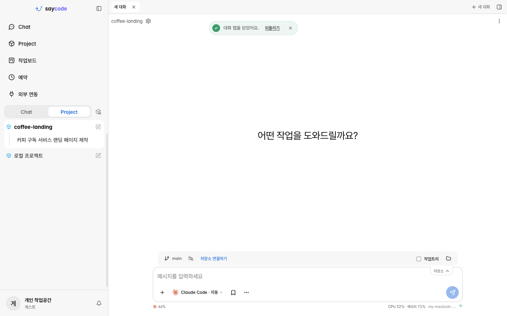
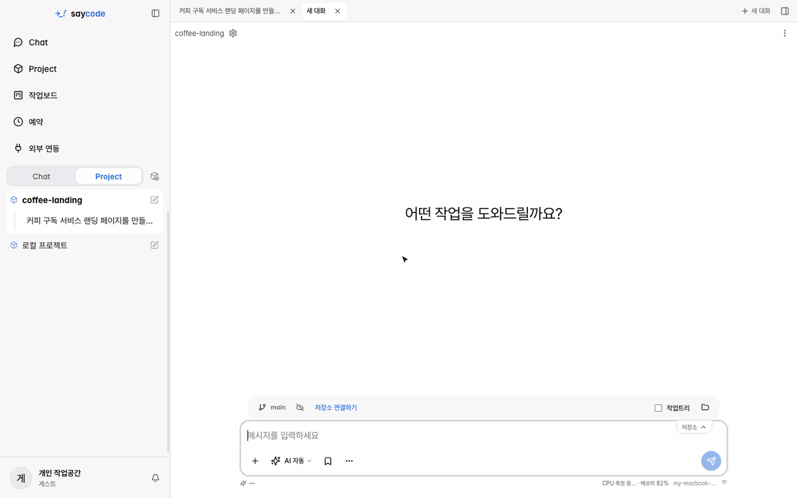
참고
미리보기 탭, 앱 안 브라우저 패널, 요소 주석, AI 브라우저는 v0.1.91에서 아직 다듬는 중이라 개인 사용과 대부분의 계정에서 보이지 않습니다(일부 조직에만 표시). 작업 영역도 저절로 열리지 않습니다. → 8.5
팁
개발 서버가 필요한 앱이면 요청에 *"개발 서버를 켜 줘"*를 넣으세요. 아니면 AI가 HTML 파일 하나로 끝낼 수 있습니다.
6.2 화면 구성#
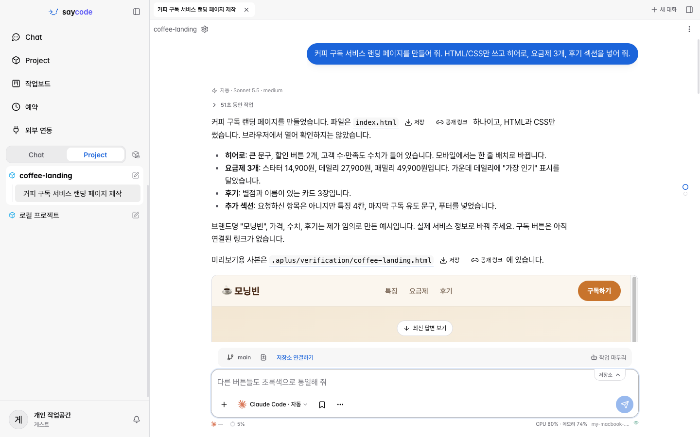
- 대화 탭 줄: 대화가 탭으로 열립니다. + 새 대화(⌘T)로 새 대화를 열고, 맨 끝의 도구 펼치기/도구 접기로 작업 영역을 엽니다.
- 헤더: 왼쪽에 프로젝트 이름과 설정(⚙), 오른쪽에 **⋮**가 있습니다. 개인 사용에는 배포·미리보기 버튼이 없습니다.
- 오른쪽 가장자리: 메시지 이동 레일(점). 대화 요약은 [개발자] 대화 요약 메뉴 표시를 켠 뒤 ⋮ → 대화 요약 보기로 엽니다(10장).
- 입력창: 위 줄(브랜치·저장소 상태·작업 마무리)과 아래 줄(AI·사용량·컨텍스트·CPU·메모리)이 있고, 오른쪽 위 저장소 탭으로 위 줄을 접고 펼칩니다. 저장소가 없으면 저장소 연결하기(소유자가 아니면 저장소 연결 안 됨)가 보입니다.
⋮(프로젝트 도구)에는 이 대화의 기능(이 대화에서 검색(⌘F), 대화 고정, 대화 이어가기 등)과 프로젝트 기능(Git 작업, 자동화, 에디터로 열기…, 프로젝트 메모리 등)이 모여 있습니다. 파일·터미널·변경은 ⋮가 아니라 오른쪽 작업 영역의 작업 패널 추가에서 엽니다(8장).
6.3 입력창에서 먼저 알아 둘 것#
처음에는 다음 다섯 가지만 알면 됩니다.
- AI 자동(아래 줄 왼쪽 버튼): AI·모델·작업 강도를 한 버튼에서 고릅니다. 새 대화의 기본은 AI 자동이며, 보낸 뒤에는
Claude Code · 자동으로 바뀌고 실제 선택은 답변 위자동 · Sonnet 5.5 · medium배지로 보입니다. 모델을 직접 고르면Opus 5.5 High처럼 표시됩니다 → 7장 - AI 잔여량(아래 줄 왼쪽): 사용량이
55%처럼 한 값(프로젝트 새 대화에서는 AI별53% · —)으로 보입니다. 누르면 사용량 창이 열립니다 → 7.4. 옆의 원형 게이지와N%는 Claude 대화의 컨텍스트 사용률입니다(아래). - 작업트리 체크박스(위 줄 오른쪽): 켜면 이 대화만의 작업트리(복사본 작업 폴더)에서 일합니다. 옆 슬라이더 아이콘에서 방식·BASE·지금 변경사항 가져가기를 고릅니다. 아직 보내지 않은 새 대화에서만 바꿀 수 있고 이전 선택이 남아 있을 수 있으니 보내기 전에 확인하세요.
- 프로젝트 루트(작업트리 옆 폴더 버튼): 모노레포에서 하위 폴더를 기준으로 일할 때 씁니다. 폴더 선택 창에서 이 폴더 선택을 누르면 AI가 그 폴더의
CLAUDE.md·.claude설정을 처음부터 읽고, 버튼 옆 X로 루트로 돌아갑니다. - 작업 마무리(위 줄 오른쪽 끝, 대화 시작 후): 리뷰·PR·보관 → 11장
컨텍스트 N% — 구성 보기와 대화 압축#
Claude 대화는 첫 답변 뒤 입력창 아래 줄에 원형 게이지와 N%가 나타납니다(글자는 없습니다). 누르면 아래 창이 열립니다.
- 컨텍스트 창 N% 창에 사용한 토큰 수와 구성 · 마지막 응답 기준 추정이 큰 항목부터 나옵니다(80% 이상이면 경고).
- 줄이려면 대화 압축을 누릅니다. 요약에 남길 내용이 있으면 압축 지침에 적고 압축을 누릅니다. 보존 지침 포함은 기본으로 켜져 있어 내가 말한 제약을 남기도록 요청합니다.
- 입력창에 쓰던 글은 그대로 남고, 취소·Esc를 누르면 아무것도 보내지 않습니다.
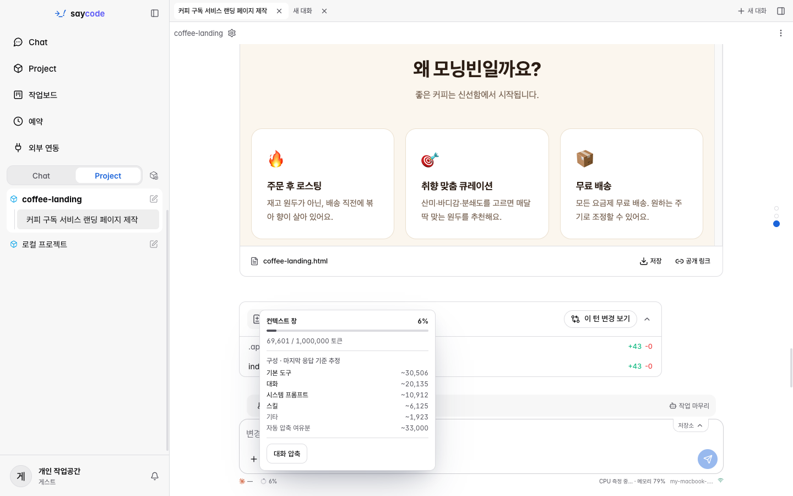
참고
Claude 대화에서만 보이며, AI가 응답 중이거나 질문을 기다리는 중에는 압축할 수 없습니다.
6.4 입력창 메뉴와 특수 입력#
+(파일 또는 사진 추가(⌘U), 폴더 추가)와 ⋯ 메뉴, 입력창 위 줄의 항목은 부록 B.3·B.4에 있습니다. 새 대화의 **⋯**에는 파일 복원지점·동시작업 등이, 첫 메시지를 보낸 뒤 Claude 대화에서는 기획 모드·프롬프트 검색이 보입니다. 입력창에서는 다음 입력도 쓸 수 있습니다.
@+ 파일 이름 → 프로젝트 전체 파일에서 찾아 요청에 넣습니다.@→ Git 변경:@diff(커밋하지 않은 변경),@staged(스테이지한 변경),@git:N(최근 커밋 N개)을 diff로 첨부합니다. Git 저장소에서만 됩니다.@+ 대화 제목 → 같은 프로젝트의 다른 대화를 붙여 AI가 읽게 합니다./→ 명령 목록(위·아래 + Enter/Tab). 답변 속 파란/review같은 명령을 누르면 입력창에 추가될 뿐 자동으로 보내지 않습니다./btw 질문(곁질문): 작업을 멈추지 않고 짧게 답한 카드가 뜹니다. 시작한 Claude 대화에서만 됩니다./recap: "지금까지"와 "다음 행동"을 요약한 카드를 보여 줍니다(내 메시지 3개 이상인 Claude 대화).- 긴 텍스트를 붙여넣으면
붙여넣은 텍스트 · N줄카드가 되고, 답변 속 글은 우클릭해 인용할 수 있습니다. 파일을 붙이는 다른 방법은 8.8에 있습니다.
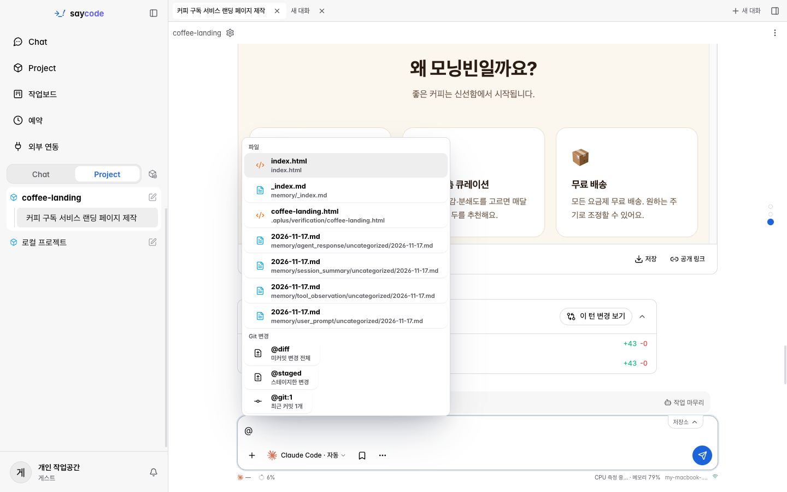
6.5 내 프롬프트 — 자주 쓰는 요청 저장#
- 입력창에 자주 쓰는 문장을 적습니다.
- 입력창의 책갈피 아이콘(내 프롬프트)을 누릅니다.
- 입력 저장을 누르면 저장됩니다.
- 다음부터는 같은 책갈피 메뉴에서 문장을 눌러 입력창에 바로 넣습니다. 연필 아이콘으로 고치고 휴지통 아이콘으로 지웁니다.
참고
[로그인] 로그인 계정에 암호화되어 저장·동기화되므로 다른 PC에서도 같은 목록이 보입니다. 개인 사용에서는 이 기기에만 저장되며 개인 사용을 종료해도 남습니다. 모든 프로젝트에서 보입니다. 입력창이 비어 있을 때 ↑ 키는 현재 대화에서 보낸 요청만 차례로 불러옵니다.
6.6 대기열 — 답하는 동안 다음 요청 쌓기#
AI가 답하는 중에도 입력창에 다음 요청을 적어 둘 수 있습니다.
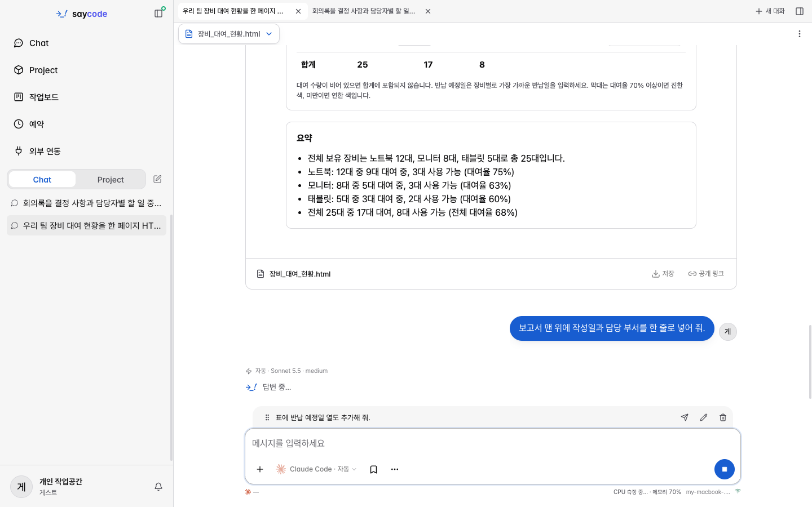
- 답하는 동안 입력창에 요청을 적고 Enter를 누르면 대기열에 쌓입니다. 대기열은 최대 3개이며 답이 끝나면 오래된 것부터 차례로 보냅니다.
- 응답을 멈추지 않고 지금 답에 바로 전달하려면 카드의 지금 반영(보내기 아이콘)을 누릅니다. 기본 설정에서는 ⌘Enter(Windows는 Ctrl+Enter)도 같은 동작입니다.
- 편집(연필 아이콘)으로 제자리에서 고치고, 삭제(휴지통 아이콘)로 지웁니다.
- 응답을 중단하면 대기열은 남지만 자동으로 보내지 않습니다. 중단됨 · 대기 중인 요청은 자동으로 보내지 않아요 줄의 이어서 보내기(재생 아이콘)를 누르면 이어서 보냅니다.
응답 중 새 메시지: 내 설정 → 단축키 맨 위에서 답하는 동안 보낸 메시지의 처리 방식을 고릅니다 — 대기열에 넣기(기본), 지금 반영, 중단하고 보내기.
6.7 AI의 질문에 답하기#
AI가 선택지를 주며 질문하면 입력창 자리가 질문 폼으로 바뀝니다. 사이드바 대화 줄에는 주황색 질문 아이콘이 붙습니다.
- 선택지를 누르거나 숫자 키(1~9) 로 고릅니다. 직접 쓰고 싶으면 입력란에 적습니다.
- 질문이 여러 개면 이전 질문 / 다음 질문으로 넘어가고, 마지막에 보내기를 누릅니다. 답하지 않으려면 건너뛰기를 누릅니다.
- 파일이나 사진으로 답하려면 직접 답하는 칸 왼쪽의 + → 파일 또는 사진 추가를 누릅니다.
참고
질문에 답하지 않으면 AI는 여러분의 답을 기다리는 중이며, 대기열도 전송되지 않습니다.
6.8 답변이 끝난 뒤#
- 다음 단계 카드: 답 끝에 "무엇이 됐고 무엇이 남았는지" 요약과 제안 버튼이 나오고, 입력창 안내 문구도 제안 문장으로 바뀝니다. Git 저장소 프로젝트에서는 커밋 요청 / PR 만들기 / PR 머지 / AI로 CI 수정 / 셀프 리뷰 / 완료로 보관 같은 버튼이 지금 할 수 있을 때만 나옵니다(작업 마무리와 같은 동작).
- 답변이 끊겼을 때: 원인과 함께 이어서 하기가 나옵니다(직접 중단했다면 다시 시도). 일시적인 오류는 자동 재시도 카운트다운이 나옵니다.
- 변경된 파일 카드: 파일을 고친 답 아래에
변경된 파일 N개 +86 −0카드가 붙습니다. 파일별 줄 수가 함께 보입니다. 이 턴 변경 보기를 누르면 변경 탭이 턴별 · 이 턴으로 열립니다(8.3). 화면을 새로 불러오면 카드가 사라질 수 있으니, 그때는 변경 탭의 턴별을 엽니다. - 자식 대화(서브 에이전트): **⋮**에 자식 대화 N개가 나타나며 지시 전달·중단을 할 수 있고, 자식 대화에서는 부모 대화로 이동합니다.
- 내 메시지 위에 마우스를 올리면 메시지 복사, 여기서 다시 쓰기(그 직전까지의 대화에서 새 대화를 만듭니다. AI 기록이 연결된 대화에서만 가능), 메시지 삭제가 나옵니다. 파일 복원지점을 켠 대화라면 파일도 되돌릴지 묻습니다(11.7).
- AI 답변 위에 마우스를 올리면(Claude 프로젝트 대화, 턴의 마지막 답변) 여기까지 갈래로 그 답변까지의 새 갈래를 만들 수 있습니다(10.7).
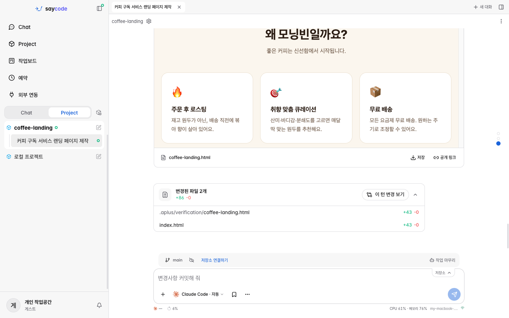
6.9 기획 모드 — 계획 먼저 받고 작업 시작하기#
AI가 파일을 고치기 전에 계획부터 보여 주게 하는 모드입니다. Claude 대화(프로젝트 대화와 개인 Chat)에서 쓸 수 있습니다.
- 첫 메시지를 보낸 뒤 입력창의 ⋯ 메뉴에서 기획 모드를 누르면 체크 표시가 붙습니다. 새 대화의 첫 요청 전에는 이 항목이 보이지 않습니다.
- 요청을 적어 보냅니다. AI가 파일을 수정하기 전에 계획 카드를 보여 줍니다. 승인을 기다리는 동안 탭에 입력 대기 표시가 붙습니다.
- 카드의 승인 뒤 실행 방식(전체 허용(기본) / 편집만 자동 승인)을 고르고 작업 시작을 누르면 AI가 작업하고 기획 모드는 자동으로 꺼집니다.
- 마음에 들지 않으면 수정 요청을 누르거나 이유를 적고 거절합니다. 그동안은 기획 모드가 켜져 있어 다음 메시지도 계획부터 받습니다.
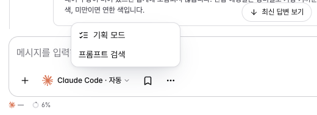
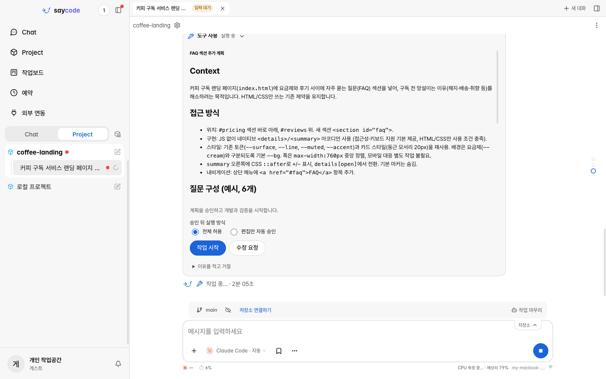
참고
앱을 다시 열면 기획 모드는 꺼진 상태로 시작합니다.
기획안에서 작업 시작하기#
기획으로 시작한 프로젝트(Project → Build)처럼 기획안을 먼저 만든 대화에서는 답변 아래의 작업 시작하기로 구현을 시작합니다.
- 기획안을 반영한 가장 최근 답변 바로 아래의 작업 시작하기는 확인 창 없이 구현을 시작하고, 시작하지 못하면 이유와 다시 시작 버튼이 나옵니다.
- 구현이 끝나면 미리보기 서버를 실행합니다. 미리보기 패널이 보이는 계정에서는 첫 실행 때 저절로 열리고, 실패하면 오류와 1회 AI 복구 승인이 나옵니다. 보이지 않는 계정에서는 6.1처럼 파일 도구에서 결과를 확인합니다. 작업은 입력창의 정지 버튼으로 멈춥니다.
7. AI·모델·작업 강도와 사용량#
어떤 AI가 얼마나 깊이 생각해 일할지 정하고, AI 계정의 남은 사용량을 확인합니다. 대부분의 경우 AI 자동에 맡겨도 됩니다.
참고
조건: 쓸 수 있는 AI와 모델만 목록에 보입니다. 새 대화에서는 모두 바꿀 수 있고, 진행 중인 대화에서는 모델과 작업 강도만 바꿀 수 있습니다(AI가 답하는 중에는 불가). 모델 목록은 업데이트로 바뀌므로 앱에 보이는 목록을 기준으로 하세요.
7.1 AI·모델·작업 강도 고르기#
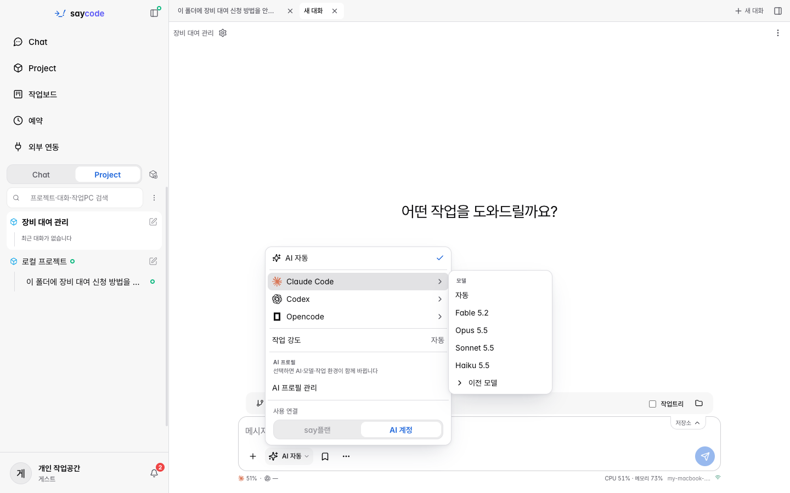
- 새 대화에서 입력창 아래 줄의 AI 자동(또는 현재 모델명·강도가 보이는 버튼)을 누릅니다.
- AI 자동을 고르면 Saycode가 요청 난이도를 보고 AI와 모델·강도를 정합니다. 직접 고르려면 AI 이름에 마우스를 올려 하위 메뉴에서 모델을 고릅니다(자동을 고르면 모델만 자동입니다). 오래된 모델은 이전 모델 묶음에 있습니다.
- Chat의 AI 이름은 Claude / ChatGPT / Opencode, 프로젝트는 Claude Code / Codex / Opencode입니다(설치돼 있으면 Grok도). 같은 AI를 Chat과 프로젝트가 다른 이름으로 보여 줄 뿐입니다.
- 유료 AI 없이 쓰려면 Opencode의 무료 모델을 고릅니다(7.5).
- 작업 강도는 모델을 직접 고른 뒤에 정합니다. AI 자동일 때 이 행은
자동으로 회색 표시됩니다. 모델에 따라 Low · Medium · High · Xhigh · Max 같은 단계가 나옵니다. - 보낸 뒤에는 버튼이
Claude Code · 자동처럼 바뀌고, 그 대화에서는 모델과 작업 강도만 바꿀 수 있습니다.
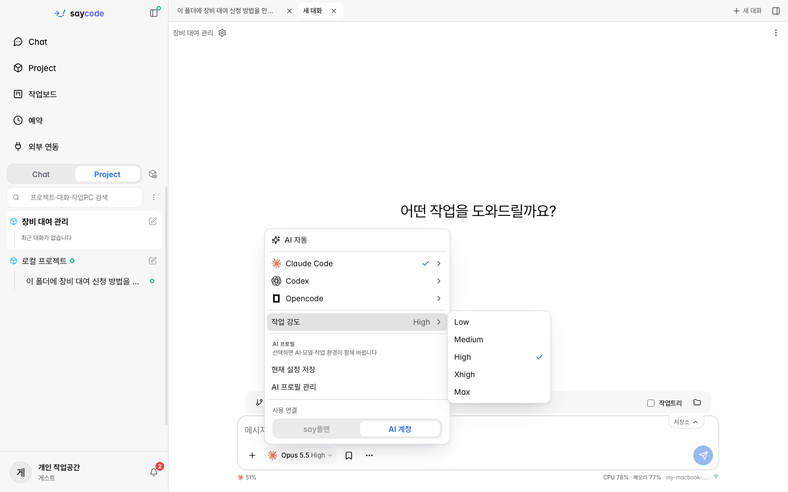
팁
모델을 자동으로 두면 Saycode가 매 턴 난이도에 따라 모델을 정합니다. 오타 수정은 가볍게, 정말 어려운 문제만 상위 모델로 보냅니다. 응답 위에 한 줄 배지(예: 자동 · Sonnet 5.5 · medium)가 남아 어떻게 골랐는지 알 수 있습니다.
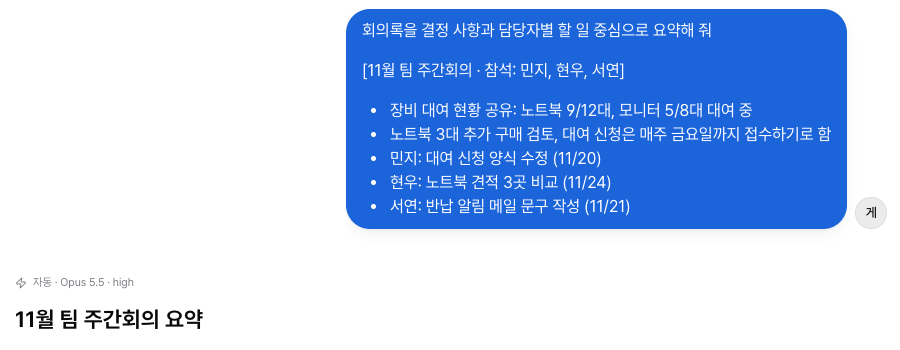
직접 고르면 입력창 버튼에 AI 로고와 모델 이름, 흐린 글씨의 작업 강도가 보입니다(예: Opus 5.5 High). 입력창이 좁으면 강도는 생략됩니다.
바로가기: 입력창에 포커스를 두고 ⌘⇧M은 다음 모델로, ⌘⇧L(Windows는 Ctrl+Shift+L)은 다음 작업 강도로 바꿉니다(응답 중이거나 선택지가 하나면 동작하지 않음).
7.2 AI 프로필 — 자주 쓰는 조합 저장#
- 새 대화에서 특정 AI를 고르고 모델·강도를 정합니다.
- AI 버튼 메뉴에서 현재 설정 저장을 눌러 프로필로 저장합니다(모델을 고른 뒤에 메뉴에 나타납니다).
- 다음부터 같은 메뉴의 AI 프로필 목록에서 골라 AI·모델·작업 환경을 한 번에 적용합니다. 고치거나 지우려면 AI 프로필 관리를 누릅니다.
7.3 AI 목록과 기본값 정하기#
내 설정 → 일반 → AI Models에서 다음을 설정합니다.
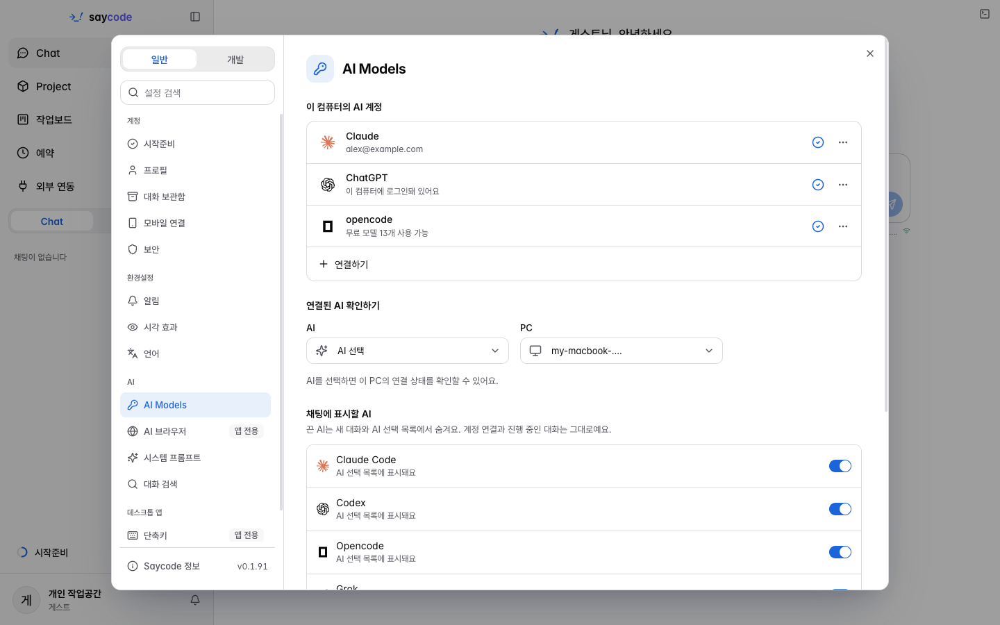
- 이 컴퓨터의 AI 계정 — 이 PC에서 허용한 Claude·ChatGPT·opencode 연결 상태가 보입니다. 연결하기로 브라우저에서 내 계정을 연결하고, 행의 … 메뉴에서 연결 해제, Saycode에 다시 연결, 계정 추가를 고릅니다.
- 연결된 AI 확인하기 — AI와 PC를 골라 연결 상태를 확인합니다.
- 채팅에 표시할 AI — 안 쓰는 AI를 새 대화의 AI 선택 목록에서 숨깁니다(진행 중인 대화는 그대로).
- 새 대화 기본값 — Chat 기본값과 Project 기본값으로 새 대화의 AI·Model·Effort 기본값을 각각 정합니다.
- Opencode 행 … → 설치하기 — 무료 모델을 설치합니다(7.5).
진행 중인 프로젝트 대화를 다른 AI로 넘기려면 프로젝트 도구(⋮) → 대화 이어가기 → 다른 AI도구로 이어가기를 사용하세요(10.7).
7.4 AI 사용량 창#
입력창 아래 왼쪽의 AI 사용량 칩(AI 로고와 사용률, 예: 55%)을 누르면 이 작업PC에 연결된 AI 계정과 남은 사용량이 열립니다. 새 Chat은 AI 한 개의 값, 프로젝트 새 대화는 53% · —처럼 AI별 값을 나열합니다. Chat을 시작하면 칩이 —로 바뀌는데, 창을 열면 "현재 대화의 계정은 확인되지 않았어요."라고 나옵니다. 계정 목록은 그대로 확인할 수 있습니다.
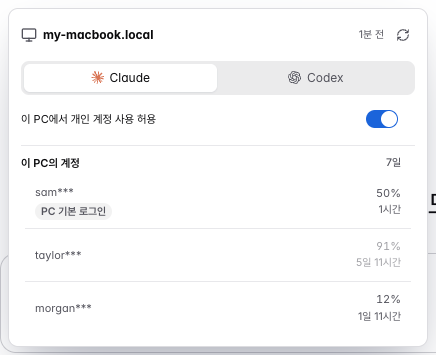
- 맨 위 탭(Claude / Codex, 설치된 AI에 따라 Grok도)에서 볼 AI를 고릅니다.
- 이 PC의 계정에서 계정별 7일 사용률과 초기화까지 남은 시간을 봅니다. 이메일은
abcd***yz처럼 일부가 가려집니다. 지금 대화에 쓰지 않는 계정은 회색으로 보입니다. - 맨 위의
N분 전은 마지막 조회 시각이고, 옆 새로고침 아이콘으로 최신 값을 다시 읽습니다. 입력창에/usage만 보내도 같은 요약이 대화에 붙습니다. - 이 PC에서 개인 계정 사용 허용 스위치가 꺼져 있으면 개인 계정 목록과 안내가 숨겨집니다.
- 계정을 여러 개 연결했다면 자동순환계정을 켜 한 계정이 한도에 걸려도 다른 계정으로 자동 전환할 수 있고, 계정별 사용량도 볼 수 있습니다. 모든 PC 줄은 개발자 기능 설정의 모든 PC 사용량 보이기(기본 꺼짐)를 켠 경우에만 나옵니다. [개발자]
참고
작업PC가 온라인이어야 실제 값이 보입니다. 사용량을 확인하지 못한 계정은 집계에서 빠집니다.
[로그인] 조직 계정 선택: 조직의 Claude 계정이 여러 개일 때 다른 계정을 고르면 새 대화뿐 아니라 보던 대화도 그 계정으로 이어집니다(답하는 중인 대화는 다음 응답부터). 이전 실행 도구나 개인 계정으로 실행 중인 대화, 공용 PC 대화는 새 대화에만 적용됩니다. 사용 기록은 내 설정 → 일반 → 토큰 사용량에서 7·30·90일로 비교합니다.
7.5 무료 모델로 시작하기 (Opencode)#
Claude나 ChatGPT 유료 계정이 없어도 opencode를 이 컴퓨터에 설치해 무료 모델로 바로 대화할 수 있습니다. 유료 AI가 있는 사용자도 함께 설치해 두고 대화마다 골라 쓸 수 있습니다.
참고
조건: 이 컴퓨터가 내 작업PC이고 온라인일 때만 설치할 수 있습니다. 조직이 AI 모델을 제한했다면 설치할 수 없고, Windows 시험판에서는 보이지 않습니다.
- 다음 중 편한 곳에서 시작합니다.
- 시작준비의 AI 단계에서 무료 모델로 시작하기
- 내 AI 계정 연결하기 창(또는 내 설정 → 일반 → AI Models → 연결하기)에서 무료 모델 (opencode)
- 내 설정 → 일반 → AI Models의 Opencode 행 … 메뉴 → 설치하기
- 설치 전에 Saycode가 설치 위치와 무료 모델의 조건(기간 한정 제공, 모델마다 다른 입력 보관·학습 정책, 유료 모델보다 낮을 수 있는 성능)을 보여 줍니다. 읽고 확인한 뒤에만 설치됩니다.
- "무료 모델로 시작할 준비가 됐어요"가 나오면 끝입니다. 새 대화의 AI 버튼에서 Opencode를 고릅니다.
- 모델 목록에서 무료 모델은
· 무료, 추천하는 모델은· 추천 무료로 표시됩니다. 모델을 고르지 않으면 메시지마다 추천 무료 모델이 자동으로 쓰입니다.
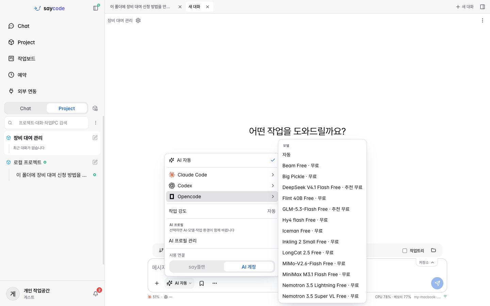
쓸 수 있는 무료 모델이 없으면 메시지를 보내지 않고 다시 확인하라고 안내합니다. 잠시 뒤 다시 확인하거나, 다른 AI를 연결하세요.
주의
무료 모델에 무엇을 보내는지 확인하세요. 무료 모델은 OpenCode가 기간을 정해 제공하며, 모델마다 데이터 정책이 다릅니다. OpenCode Zen 문서(2026년 11월 1일 확인 기준)에는 GLM-5.3-Flash Free와 DeepSeek V4.1 Flash Free는 입력을 보관하지 않고 학습에 쓰지 않는다고, Big Pickle 등 일부 모델은 무료 기간에 입력이 모델 개선에 쓰일 수 있다고, NVIDIA Nemotron 계열은 체험용이라 개인정보·기밀을 보내지 말라고 적혀 있습니다. 목록과 정책은 바뀔 수 있으니 OpenCode Zen 문서에서 직접 확인하세요. 회사·고객 코드나 기밀 자료는 제공사가 보관·학습을 하지 않는다고 밝힌 모델만 쓰거나, 유료·조직 AI를 연결해 쓰세요.
참고
OpenCode · 무료 모델로 시작 항목은 개발자 기능 설정의 OpenCode 무료 모델 시작 보이기를 켠 경우에만 새 대화 AI 메뉴에 나옵니다(기본 꺼짐). [개발자]
하루에 얼마나 쓸 수 있는지는 20.5에 정리했습니다.
7.6 조직 AI 사용 연결 — say플랜·내부 AI#
AI 메뉴 맨 아래 사용 연결에서 이 대화를 어떤 방식으로 실행할지 고릅니다. 개인 사용에서도 보입니다.
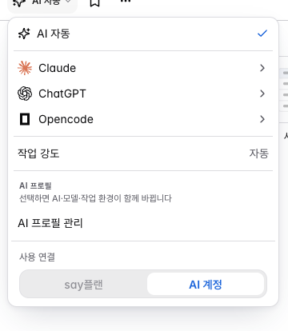
| 탭 | 무엇인가 | 조건 |
|---|---|---|
| AI 계정 | 내가 연결한 Claude·ChatGPT 등 AI 계정으로 실행합니다(기본). | 누구나 |
| say플랜 | 조직의 정액 플랜으로 실행합니다. | [로그인] [조직] 플랜 등급이 있을 때. 아니면 회색이고 마우스를 올리면 "지금은 say플랜을 쓸 수 없어요. 조직 관리자에게 플랜 등급을 확인해 주세요."가 나옵니다. |
| 내부 AI | 조직이 운영하는 사내 LLM으로 실행합니다. | [조직] 관리자가 등록해 나에게 배정했을 때만. 배정이 없으면 탭이 보이지 않습니다. |
- 고르는 법: 개인 사용이거나 조직의 AI 계정으로 일한다면 AI 계정, 조직이 정액 플랜을 준비했다면 say플랜, 회사 안의 LLM을 써야 한다면 내부 AI를 고릅니다. 마지막에 고른 연결이 다음 새 대화의 기본이 됩니다.
- 시작한 대화의 연결은 바꿀 수 없습니다. 바꾸려면 새 대화를 시작하세요.
- 내부 AI는 조직의 내 전용 작업PC에서 AI를 Claude로 고르고 사용 연결 → 내부 AI에서 연결을 고른 뒤 보냅니다. 시작하지 못하면 다른 연결로 몰래 바꾸지 않고 이유를 보여 줍니다. 구성원이 등록·배정을 직접 할 수는 없습니다.
- say플랜 사용량: say플랜으로 실행한 대화는 입력창 아래 say플랜 버튼에서 플랜 등급과 이번 달 · 이번 주 · 5시간 사용량, 재설정 시각을 볼 수 있습니다. 한도에 닿으면 모델 버튼에
say플랜 · 한도 도달이 표시되고 AI 계정으로 새로 시작하라는 안내가 나옵니다(자동으로 바뀌지는 않습니다).
8. 작업 영역#
프로젝트 화면의 오른쪽에서 파일·변경·터미널을 보며 AI의 작업을 확인합니다. 가운데 대화와 나란히 놓여 대화와 작업 결과를 함께 볼 수 있습니다.
참고
조건: 프로젝트에 온라인 작업PC가 연결되어 있어야 합니다. 변경 탭은 Git 프로젝트에서만 쓸 수 있습니다. 미리보기·브라우저는 일부 조직에만 제공되어 개인 사용과 일반 계정에는 보이지 않습니다(8.5).
8.1 열기와 패널 추가#
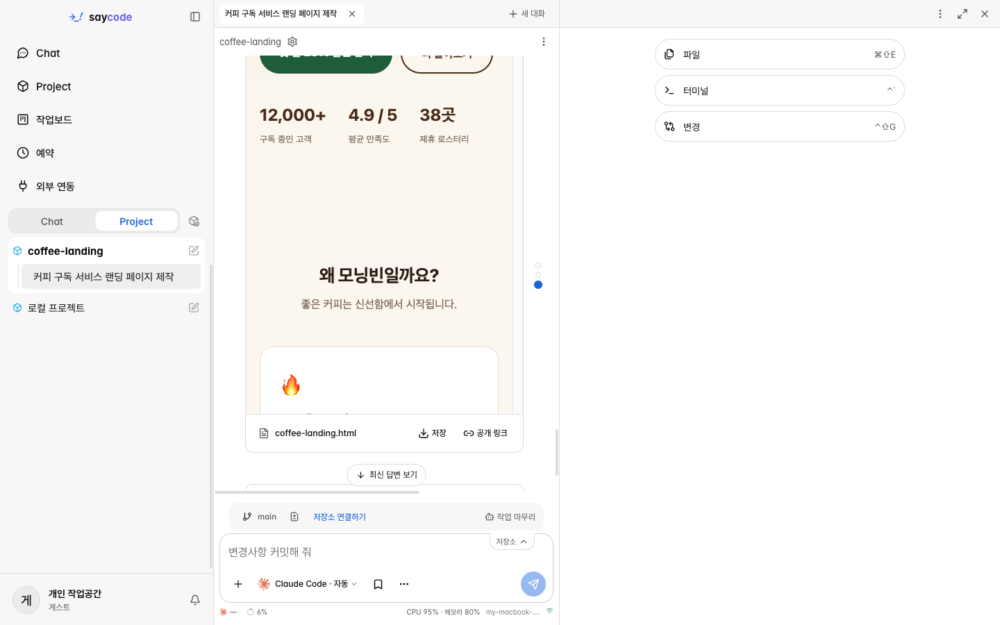
- 프로젝트 대화 오른쪽 위의 도구 펼치기(접을 때는 도구 접기, 단축키 ⌘⇧B)를 누르면 파일(⌘⇧E) · 터미널(⌃`) · 변경(⌃⇧G) 목록이 나옵니다.
- 패널이 이미 열려 있으면 탭 줄 오른쪽의 작업 패널 추가 아이콘으로 다른 도구를 더 엽니다. 같은 목록에 오른쪽에 새 터미널 열기·아래에 새 터미널 열기가 더 있습니다.
- 탭을 끌어 순서를 바꾸고 ⌘W로 닫습니다. 마지막 탭을 닫으면 패널이 접힙니다. 대화마다 열어 둔 상태가 기억됩니다.
- 경계를 끌어 너비를 조절합니다(파일 트리는 방향키 ←→로도). 오른쪽 위 작업 패널 전체화 아이콘으로 넓게 펼칠 수도 있습니다.
팁
답변이 끝나도 패널은 저절로 열리지 않습니다. 직접 여세요. 패널 머리글의 ⋮(또는 빈 곳 우클릭) → 패널 배치에서 작업 패널을 대화 왼쪽으로 옮길 수 있습니다.
8.2 파일 탭#
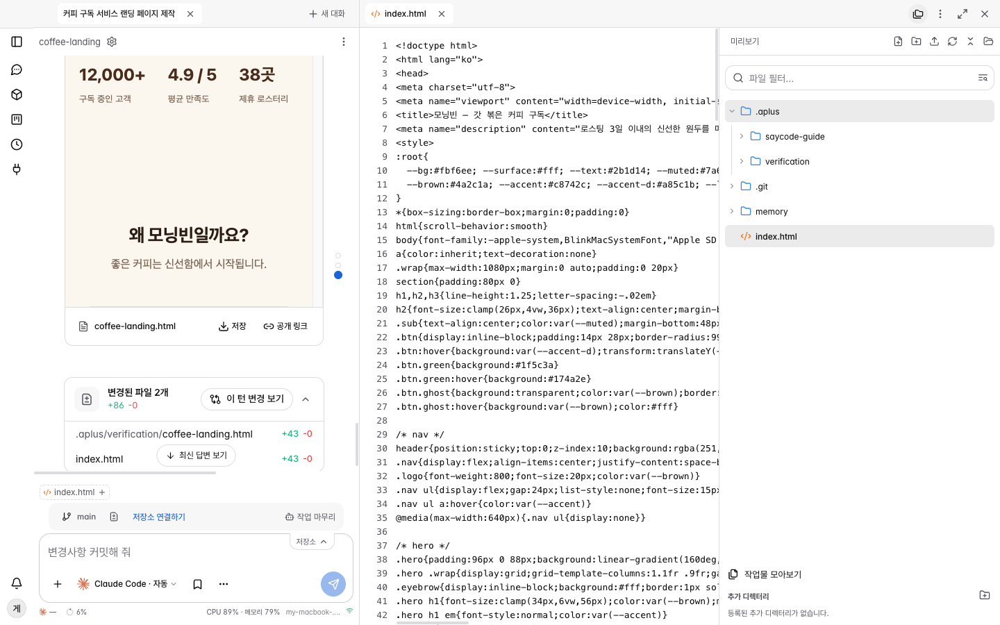
- 도구 펼치기 → 파일을 엽니다. 파일 트리는 오른쪽 열에 있고, 파일을 누르면 가운데에 탭으로 열립니다. 저장하지 않은 변경은 탭의 점으로 표시됩니다.
- 파일 필터… 칸에 이름을 입력하면 목록이 걸러지고, Enter를 누르면 프로젝트 전체 파일 이름을 검색합니다.
- 파일 안의 내용으로 찾으려면 필터 칸 오른쪽의 내용 검색 스위치를 켜고 Enter를 누릅니다. 결과는
15개 결과 · 5개 파일처럼 파일별로 묶여 줄 번호와 강조된 검색어가 보이고, 줄을 누르면 그 파일이 열립니다. 스위치를 끄면 이름 검색으로 돌아가고 검색어는 남습니다. (작업PC가 지원할 때만.)
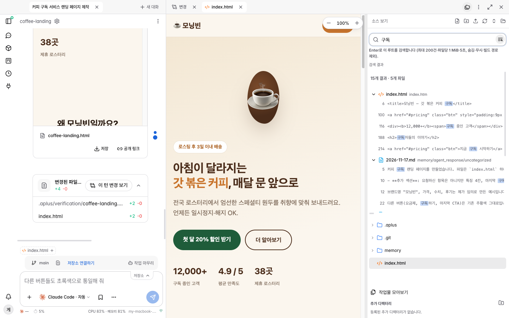
- 트리 위쪽 아이콘으로 새 파일 · 새 폴더 · 파일 업로드 · 파일 새로고침 · 폴더 펼치기/접기 · Finder에서 보기를 합니다. 안 보이는 파일은 새로고침하세요. 파일 행의 ⋮(또는 우클릭)에는 대화에 추가 · Finder에서 보기 · 이름 바꾸기 · 복사본 만들기 · 삭제가 있고, 폴더 행의 다운로드 버튼은
폴더명.zip으로 저장합니다. - AI가 만든 문서·이미지·HTML은 목록 맨 아래 작업물 모아보기(추가 디렉터리 바로 위)에서 한곳에 모아 봅니다. 창에서 이 대화 / 이 프로젝트를 고르고 검색할 수 있습니다.
- HTML 파일은 화면으로 렌더링되어 열리고, 트리 머리의 소스 보기·미리보기 버튼으로 코드와 화면을 오갑니다.
.csv/.tsv는 표로 보기로 열립니다.
파일 바로 고치기#
열린 파일을 바로 수정하고 ⌘S(Windows는 Ctrl+S)로 저장합니다. HTML·마크다운은 소스 보기에서 고칩니다. 저장하지 않은 채 탭을 닫으면 버릴지 묻습니다. AI가 바꾼 파일은 열린 탭에 곧바로 반영되고, 내가 저장하지 않은 수정이 있으면 덮어쓰지 않고 AI가 이 파일을 바꿨어요 알림을 보여 줍니다.
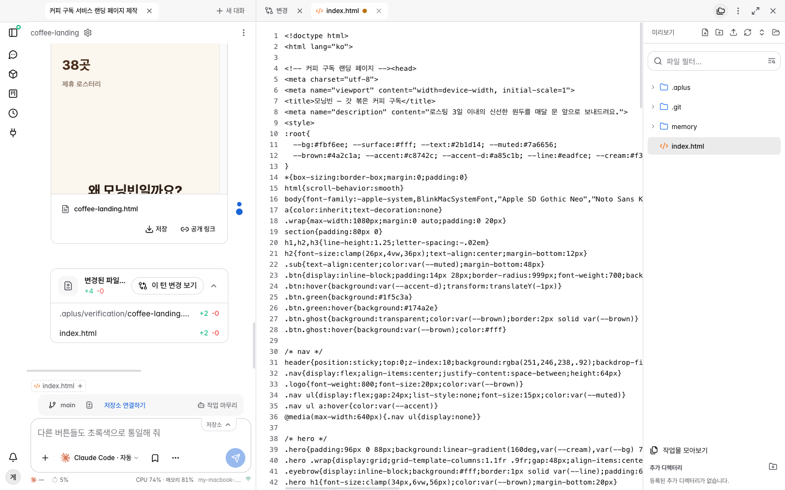
파일 탭을 우클릭하면 탭 닫기, 절대 경로 복사, 파일 트리에서 위치 보기, 오른쪽으로 분할, 디스크에서 다시 읽기 등이 나옵니다.
8.3 변경 탭#
AI가 바꾼 파일과 바뀐 줄을 한눈에 확인합니다.
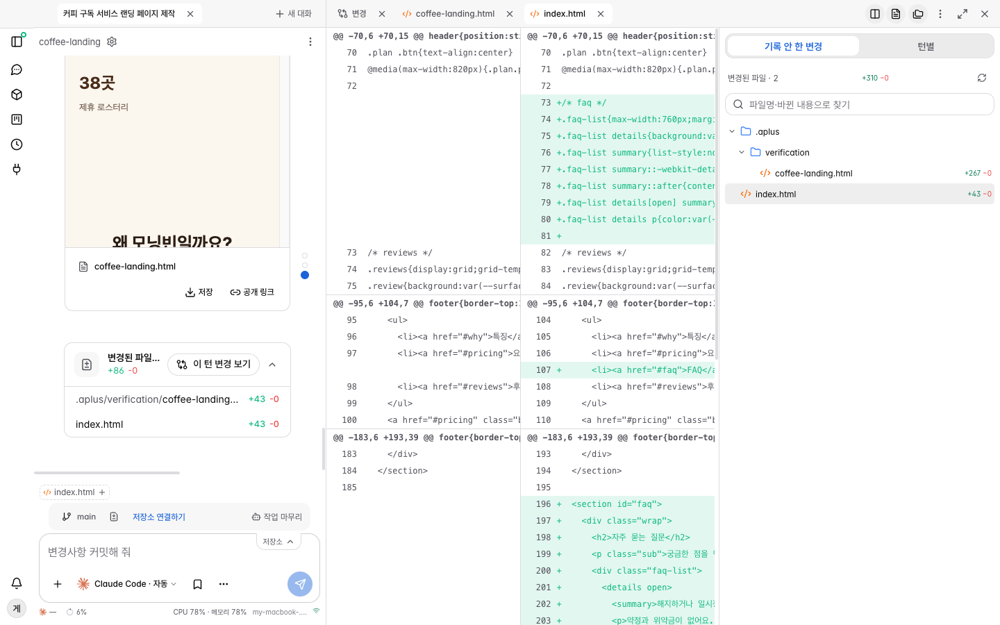
- 작업 패널 추가 → 변경을 엽니다(⌃⇧G). 답변 아래 변경 카드의 이 턴 변경 보기로도 열립니다(6.8).
- 오른쪽 위 탭에서 범위를 고릅니다 — 기록 안 한 변경 / 턴별. 작업트리 대화에는 브랜치 전체도 있습니다.
- 턴별 — AI가 한 번 답한 단위(턴)로 봅니다. 이 턴 / 직전 턴 이후 / 대화 시작 대비 중에서 고릅니다.
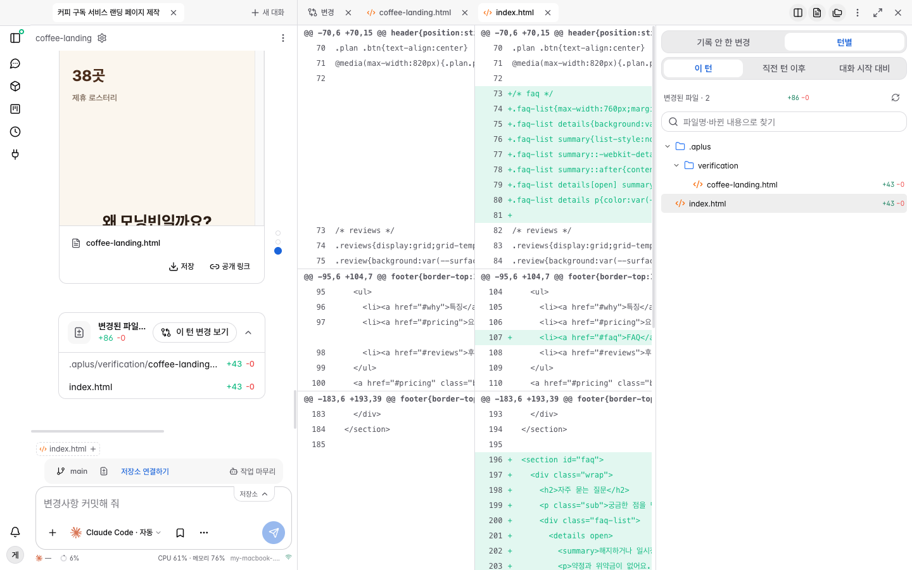
- 파일을 누르면 그 파일 이름의 탭으로 diff가 열립니다(좌우 비교 또는 파일 전체 보기). 바뀐 줄에 리뷰 코멘트를 달아 AI에게 보낼 수 있습니다.
- 파일명·바뀐 내용으로 찾기로 목록을 거르고, diff 안에서는 ⌘F로 찾습니다.
참고
턴별은 내가 만든 대화에서 기록되며 macOS·Linux 로컬 Git 환경에서 지원됩니다. 끝난 턴은 읽기 전용이라 줄 코멘트를 달 수 없습니다.
8.4 터미널 탭#
작업PC에 붙은 실제 셸입니다. 탭을 바꿔도 살아 있고 연결이 끊기면 스스로 재연결하며, 바탕은 항상 어둡습니다. 어느 화면에서나 쓰는 아래쪽 터미널은 8.7입니다.
- ⌘F로 터미널 안에서 찾고, 우클릭 메뉴로 복사·붙여넣기를 합니다.
- 터미널 나누기: 작업 패널 추가의 오른쪽에 새 터미널 열기 / 아래에 새 터미널 열기(⌘⌥T / ⌘⌥⇧T).
- 글꼴·글자 크기, 입력 미리 표시, AI 응답 상태 표시는 내 설정 → 개발 → 터미널에서 바꿉니다.
터미널 출력을 대화로 보내기 — 출력을 드래그로 고른 뒤 ⌘L(Windows는 Ctrl+L)을 누르면 "대화 입력창에 추가했어요." 알림과 함께 입력창에 터미널 · N줄 카드가 붙습니다. 비밀값은 가려지고 자동으로 전송되지는 않습니다. 고른 부분이 없으면 단축키는 셸로 그대로 전달됩니다.
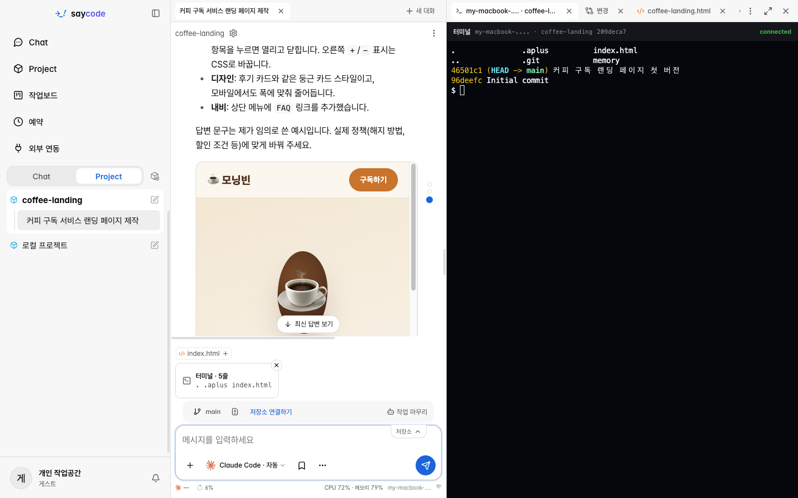
참고
하단 터미널(8.7)에서는 ⌘L이 동작하지 않습니다. 출력을 붙이려면 작업 패널의 터미널을 쓰세요.
8.5 브라우저와 미리보기#
개인 사용과 일반 계정에서는 결과를 이렇게 봅니다.
- 답변 안에서: AI가 만든 HTML 같은 결과물은 답변 안에 바로 미리 보이고, 아래 파일 카드의 저장·공개 링크로 내려받거나 공유합니다.
- 파일 탭에서: 도구 펼치기 → 파일에서 HTML 파일을 열면 렌더링된 화면이 나오고, 소스 보기 ↔ 미리보기로 코드와 화면을 오갑니다(8.2).
- 직접 띄운 앱은: 터미널에서 개발 서버를 켠 뒤 이 컴퓨터의 브라우저에서
http://localhost:5173같은 주소를 엽니다.
참고
미리보기 탭(개발 서버 화면을 앱 안에서 보여 주는 탭)과 브라우저 패널(작업PC의 localhost 앱을 앱 안에서 여는 패널)은 v0.1.91에서 아직 다듬는 중이라 일부 조직에만 먼저 제공됩니다. 개인 사용·일반 계정에서는 작업 패널 추가 목록에 나오지 않고, 개발자 기능 설정으로도 켤 수 없습니다. 내 설정 → 단축키의 브라우저 열기는 목록에 남아 있어도 동작하지 않습니다. 화면을 보며 고치는 기능은 9장에 있습니다.
8.6 PR 보기#
[로그인] 대화 속 GitHub PR 링크를 누르면 오른쪽 작업 패널에서 PR의 설명·코멘트·리뷰·커밋을 시간순으로 읽습니다(Shift를 누른 채 클릭하면 외부 브라우저). 파일 탭에서는 전체 diff를 보고 줄 코멘트를 달며, 리뷰 지적 고치기로 AI에게 수정을 맡기고, 조건이 맞으면 아래 머지 상태에서 머지 → 병합으로 합칩니다. 작업PC에 gh가 설치·로그인되어 있어야 하며 GitHub 저장소만 지원합니다. 개인 사용 화면에서는 확인하지 못해 릴리스 노트 기준으로 적었습니다.
8.7 하단 터미널#
어느 화면에서나 아래쪽에 터미널을 열 수 있습니다. 사이드바 오른쪽 전체 폭의 아래쪽 패널로 열려 프로젝트가 없어도 열립니다.
- ⌘J(Windows는 Ctrl+J)를 누르거나 시작 화면(Chat·Project) 오른쪽 위의 현재 작업PC 터미널 열기 아이콘을 누릅니다. 키는 내 설정 → 단축키의 하단 터미널 표시/숨기기에서 바꿀 수 있습니다.
- 열린 프로젝트가 같은 작업PC에 있으면 그 폴더에서, 없으면 홈 폴더(
~)에서 시작합니다. - 숨기려면 같은 키를 다시 누르거나 탭 줄 오른쪽의 터미널 숨기기(⌄)를 누릅니다. 다시 열면 같은 터미널을 이어서 씁니다.
- 탭: +(새 터미널 탭)로 새 터미널을 열고, 탭을 끌어 순서를 바꾸고, X로 닫습니다. 탭마다 셸이 따로여서 숨겨도 실행 중인 작업이 계속됩니다. 마지막 탭을 닫으면 패널이 숨겨지고, 오른쪽 패널과 달리 나눌 수 없습니다.
- 높이: 위쪽 경계선을 끌어 조절합니다(최대 70%). 위·왼쪽·오른쪽으로 옮길 수는 없습니다.
8.8 파일을 대화에 붙이기#
파일이나 코드 일부를 AI에게 알려 주려면 대화에 붙이세요. AI는 파일 내용이 아니라 경로(코드는 줄 번호와 선택한 코드)를 받아 직접 읽습니다.
| 방법 | 결과 |
|---|---|
| 입력창 위의 점선 칩 | 오른쪽 패널에서 마지막으로 본 파일이 index.html + 같은 칩으로 제안됩니다. 그대로 보내면 그 파일 경로가 함께 갑니다. X로 지우면 이번에는 보내지 않습니다. |
| 파일 트리 우클릭 → 대화에 추가 | 파일·폴더 메뉴 맨 위의 대화에 추가를 누르면 입력창에 @경로가 들어갑니다. 입력창에 @를 쳐서 프로젝트 파일을 찾아 넣을 수도 있습니다(@diff·@staged·@git:1 같은 Git 변경 항목도 함께 보입니다). |
| 코드 선택 → ⌘L | 편집기에서 코드를 드래그해 고른 뒤 ⌘L(Windows는 Ctrl+L)을 누릅니다. 입력창에 A index.html 24–26 같은 칩이 생기고(A, B… 순서), AI는 경로·줄 번호·선택한 코드를 받습니다. |
팁
⌘L은 내 설정 → 단축키에서 바꿀 수 있습니다. 터미널 출력을 붙이는 방법은 8.4에 있습니다.
9. 보면서 고치기#
중요
v0.1.91에서 이 장의 기능은 일부 조직에 먼저 제공됩니다. 개인 사용과 일반 계정에는 보이지 않고, 개발자 기능 설정으로도 켤 수 없습니다.
실행 중인 화면에서 마음에 안 드는 요소를 직접 집어 AI에게 고쳐 달라고 요청하는 기능입니다. 프로젝트 대화가 열려 있고 고칠 앱이 작업PC에서 실행 중일 때 씁니다.
9.1 요소를 집어 주석 트레이에 담기#
브라우저 패널에서 요소 선택 버튼을 누르고 고칠 요소를 클릭하면 아래 주석 트레이에 한 줄로 담깁니다(최대 20개). 줄마다 코멘트를 적고 의도(수정해 줘 / 질문 / 참고)를 고르며, 스크린샷에 펜·사각형으로 표시할 수 있습니다. 입력창에 담기를 누르면 요청 글과 스크린샷이 대화 입력창에 들어가고, 내용을 확인한 뒤 직접 전송합니다.
9.2 디자인 조정 — 직접 값을 바꿔 보기#
트레이의 요소 행에서 간격·배치·글자 값을 바꾸면 페이지에 바로 적용되어 결과를 눈으로 확인합니다. 임시 적용이라 새로고침하면 사라지므로, 변경 요청 보내기로 전 → 후 값을 입력창에 담아 AI가 소스 코드에 반영하게 합니다.
9.3 브라우저 도구 막대#
요소 선택 외에 콘솔·네트워크 오류 수집, 뷰포트(데스크톱·태블릿·모바일), 쿠키 가져오기, 새 창에서 열기가 있습니다. 브라우저 패널은 8.5를 보세요.
9.4 AI 브라우저로 웹 작업 맡기기#
AI가 내 Chrome과 분리된 전용 Chrome 창에서 웹 페이지를 열고 직접 조작하게 하는 기능입니다. 입력창 + → 이번 요청에 브라우저 사용으로 요청하며 Google Chrome과 로그인이 필요하고, 이 항목은 위와 같은 조직에만 보입니다. 개인 사용에서도 내 설정 → AI → AI 브라우저에서 준비 상태와 사용법은 볼 수 있지만, 입력창에서 쓸 수는 없습니다. 제공되는 조직에서는 AI 브라우저 콘솔에서 제어권 가져오기로 직접 조작하다 제어권 반납으로 AI에게 돌려줄 수 있습니다.
팁
지금 누구나 할 수 있는 방법: 바꾸고 싶은 점을 말로 구체적으로 설명하거나, 화면 캡처·파일을 입력창에 붙여 보여 주세요. 코드는 ⌘L이나 @로 가리킬 수 있습니다(8.8).
10. 대화 관리#
대화가 많아져도 길을 잃지 않도록, 훑어보고, 정리하고, 찾고, 이어갑니다.
10.1 대화 요약과 메시지 이동 레일#
참고
조건: 내 메시지가 2개 이상인 프로젝트 대화에서 보이며 Chat에는 없습니다. 대화 요약 패널은 [개발자] 프로필 메뉴의 개발자 기능 설정 → 대화 요약 메뉴 표시를 켜야 열 수 있습니다.
- 대화 오른쪽 가장자리의 레일에는 내 요청마다 점이 하나씩 있습니다. 점에 마우스를 올리면
N번째 요청: …이 보이고, 누르면 그 메시지로 이동합니다. - [개발자] 대화 머리글의 ⋮ → 대화 요약 보기(이 대화에서 검색 바로 아래)를 누르면 패널이 열려 이 대화의 계획 · 산출물(변경 파일 등) · PR · 커밋 · 백그라운드 작업을 한눈에 봅니다. 닫을 때는 패널의 ✕를 누릅니다.
- 패널 항목을 누르면 해당 작업물이 나온 메시지로 이동합니다.
- 패널 머리의 핀 아이콘을 누르면 대화 옆에 고정됩니다. 다른 대화로 가거나 앱을 다시 열면 닫힙니다.
10.2 열린 대화 탭#
- + 새 대화(⌘T)로 새 탭을 열고, 탭을 끌어 순서를 바꾸며 ⌘W로 닫습니다. ⌘⇧T는 닫은 탭 다시 열기, ⌘⇧J는 질문·승인을 기다리는 대화로 바로 이동입니다(전체 단축키는 19장). 탭 줄은 개발자 모드가 켜져 있을 때의 화면입니다(10.9).
- 탭 줄에는 지금 보는 탭 종류의 대화만 나옵니다. 사이드바에서 Chat을 고르면 Chat 대화 탭만, Project를 고르면 열어 둔 모든 프로젝트의 대화 탭이 보입니다.
- 탭에는
입력 대기·리뷰 중같은 상태 배지가 붙고, 백그라운드 작업(빌드·테스트 감시, 자식 대화)이 도는 동안에는 백그라운드 작업 N개 실행 중 배지가 붙어 완료로 표시하지 않습니다. - 탭을 오른쪽 클릭하면
닫기·다른 탭 닫기·모두 닫기와 분할 같은 항목이 나옵니다.
10.3 고정#
- 대화 줄에 마우스를 올리면 나타나는 핀 버튼(고정)을 누릅니다. 목록 맨 위 고정된 대화 영역에 모입니다.
- 고정된 대화를 끌어 순서를 바꾸면 ⌘1~9(Windows는 Ctrl+1~9)로 첫 아홉 대화를 바로 엽니다.
- 풀 때는 핀 버튼을 다시 누릅니다. [로그인] 다른 PC·웹에서도 같은 고정 목록이 보입니다.
10.4 보관하기 — 지금 안 보이게 정리#
- 대화 줄에 마우스를 올리고 **⋮**를 누릅니다.
- 보관하기를 누릅니다. 확인 창 없이 바로 목록에서 사라지고 "대화를 보관했어요" 알림이 약 10초 나옵니다.
- 실수라면 알림의 되돌리기 또는 ⌘Z(Windows는 Ctrl+Z)를 누릅니다. 보관함으로 이동은 대화 보관함을 엽니다.
같은 ⋮ 메뉴에는 이름 변경(작은 창에서 입력 후 저장), 대화 내용 복사, 대화 ID 복사, 대화 삭제(확인 후 되돌릴 수 없음)가 있고, 프로젝트 대화에는 잠시 숨기기도 있습니다. [로그인] 조직에 공유는 개인 사용에서는 나오지 않습니다.
팁
여러 대화를 한 번에: Shift를 누른 채 대화를 클릭해 고르고, ⋮ → 선택한 N개 보관 또는 선택한 N개 삭제를 고릅니다. 작업트리가 연결된 대화는 확인 창에서 보관 또는 보관 & 작업트리 삭제를 고릅니다(단일 대화 보관은 작업트리를 지우지 않습니다). PR이 병합된 대화는 사이드바에서 마우스를 올리면 뜨는 창의 보관하기로도 보관합니다.
참고
응답이 실패로 끝난 대화에는 사이드바에 빨간 마름모 점(실패함 · 아직 안 열어봄)이 붙습니다. 이 점은 그 대화를 직접 읽을 때(열기, 입력창 누르기, 메시지 보내기)만 사라집니다.
10.5 잠시 숨기기#
대화를 정한 시각까지 목록에서 치워 둡니다. 시각이 되거나 AI가 승인·질문으로 답을 기다리면 원래 자리로 돌아옵니다.
- 대화 줄의 ⋮ → 잠시 숨기기를 누릅니다.
- 1시간 / 4시간 / 내일 오전 9시 / 다음 주 월요일 오전 9시 중에서 고릅니다.
- 숨긴 대화는 프로젝트 목록 아래 숨긴 대화 N을 펼치면 남은 시간과 함께 보입니다. 눈 버튼(다시 보이기) 을 누르면 바로 원래 목록으로 돌아옵니다.
참고
프로젝트 대화에서만 쓸 수 있습니다(Chat 대화 메뉴에는 없습니다). 숨긴 상태는 이 컴퓨터에만 저장되고, 숨긴 직후 되돌리기나 ⌘Z로 취소할 수 있습니다.
10.6 대화 보관함과 자동 보관#
보관한 대화는 내 설정 → 일반 → 대화 보관함에서 찾습니다.
- 맨 위에서 자동 보관 규칙을 확인하고, 보관한 대화 검색으로 보관한 대화를 찾습니다.
- 대화 줄 오른쪽의 보관 해제를 누르고 "대화 보관을 해제할까요?" 확인 창에서 한 번 더 보관 해제를 누릅니다. 기존 제목과 기록이 유지된 채 왼쪽 목록에 다시 나타나고 AI는 자동으로 실행되지 않습니다.
참고
개인 사용에서는 프로젝트 대화만 이 목록에 나옵니다. Chat 대화를 보관하면 보관함에 나타나지 않으니, 실수로 보관했다면 알림의 되돌리기를 바로 쓰고, 나중에 볼 Chat 대화는 보관 대신 고정하세요.
자동 보관은 보관함 맨 위의 스위치 두 개(기본 꺼짐)입니다. 켜 두면 앱이 켜져 있을 때 내가 시작한 대화를 자동 보관하고, 보관함에서 꺼낸 대화는 다시 보관하지 않습니다.
- PR이 머지되거나 닫히면 자동 보관
- 활동이 없으면 자동 보관 + 활동 없는 기간(1~90일, 기본 14일)
브랜치 PR이나 연결된 PR이 하나라도 열려 있으면 보관하지 않습니다. 응답 중·입력 대기·방금 활동한·화면에 열린·고정된 대화는 보관이 미뤄지고, 작업트리는 지우지 않습니다.
10.7 대화 이어가기와 갈래#
프로젝트 도구(⋮) → 대화 이어가기에서 지금 대화를 그대로 둔 채 새 대화를 시작합니다.
| 메뉴 | 하는 일 |
|---|---|
| 다른 AI도구로 이어가기 | 다른 AI(예: Claude → Codex)로 이어 갑니다. 모델·작업 강도도 고릅니다. |
| 같은 AI로 갈래 만들기 | 같은 AI로 지금까지의 기록을 복제한 갈래 대화를 만들어 다른 방향을 시도합니다. 복제 범위(전체 대화 또는 특정 메시지까지)를 고르고 갈래 만들기를 누르면 새 탭이 열리고 머리글에 갈래 원본 링크가 생깁니다. 갈래는 원래 대화와 같은 작업 폴더를 공유합니다. |
| 터미널에서 이어가기 | 터미널에서 이어 갈 명령을 복사합니다(Claude·Codex 대화, say플랜 대화는 불가). |
| 이 대화를 작업트리로 옮기기 / 이 대화를 본 폴더로 되돌리기 | 진행 중인 대화를 변경사항과 함께 새 작업트리로 옮기거나 되돌립니다. 작업트리 대화에는 본 폴더로 되돌리기가 나옵니다(11.6). |
AI 기록이 아직 없는 새 대화에서는 다른 AI도구로 이어가기만 켜져 있고 나머지는 회색이며 이유가 적힙니다. 메시지를 한 번 주고받은 뒤 다시 여세요.
지름길: Project의 Claude 대화에서 한 턴의 마지막 AI 답변에 마우스를 올리면 나타나는 여기까지 갈래 아이콘은 그 답변까지 남기도록 고른 채 같은 창을 엽니다.
그 밖에:
- 프로젝트 대화에서 내 메시지에 마우스를 올려 여기서 다시 쓰기를 누르면, 그 메시지 직전까지의 대화로 새 대화가 열리고 입력창에 원래 메시지가 채워집니다(Claude 대화). 원래 대화는 그대로 남고, AI 기록이 연결되지 않았으면 비활성입니다. 파일 복원지점을 켠 대화는 파일도 되돌릴지 먼저 묻습니다(11.7).
- 프로젝트 도구 → 앱 밖에서 시작한 대화 이어가기로 앱 밖(터미널 등)에서 이 프로젝트 폴더로 시작한 Claude·Codex 대화를 가져옵니다. 작업PC의 CLI가 오래돼 이을 수 없으면 읽기 전용으로 보기만 됩니다.
- 프로젝트 도구(⋮) 또는 Chat 대화의 더보기(⋮) → 세션 유지 시간에서 그 대화만 기본값·1·4·8·24시간·자동 종료 안 함 중에서 고를 수 있습니다.
10.8 찾기 — 대화 검색과 빠른 열기#
| 방법 | 단축키 | 하는 일 |
|---|---|---|
| 대화 내 검색 | ⌘F | 프로젝트 대화에서 열린 대화 안의 단어를 찾아 이동합니다(⋮ → 이 대화에서 검색도 같습니다). 개인 Chat에서는 열리지 않습니다. |
| 대화 검색 | ⌘⇧F | 프로젝트 대화의 제목·내 요청·AI 응답에서 단어를 찾습니다. 개인 Chat 대화는 검색되지 않습니다. |
| 빠른 열기 | ⌘P | 프로젝트·대화·파일 이름을 입력해 바로 엽니다. 맨 앞에 > 를 입력하면(⌘⇧P로 바로 열림) 명령만 보입니다. |
| 프로젝트 검색 | ⌘K | 사이드바에서 프로젝트·대화·작업PC를 이름으로 거릅니다. |
대화 내 검색은 일치한 메시지에 강조 테두리를 두고 "1개 중 1번째"처럼 결과 수를 보여 줍니다. Enter는 다음, Shift+Enter는 이전 결과입니다. 전체 대화에서 검색으로 대화 검색 창을 열 수 있습니다.
대화 검색에는 로컬 검색과 시맨틱 탭이 있고 전체 프로젝트 필터로 범위를 좁힙니다. 결과를 누르면 일치한 메시지로 이동하고(작성 중이던 초안은 그대로), Cmd를 누른 채 고르면 새 탭으로 열립니다. 시맨틱은 뜻으로 찾되 활성 프로젝트의 작업PC에 저장된 기억만 대상입니다.
를 입력해 연 명령 목록 — 대화 검색, 작업보드, 사이드바 접기/펼치기, 프로젝트 검색, 내 설정 열기" width="620" />참고
대화 검색을 쓰려면 내 설정 → 일반 → 대화 검색 → 대화 검색 사용이 켜져 있어야 합니다(기본 켜짐). 검색 인덱스 삭제로 검색 데이터를 지웁니다.
10.9 개발자 모드와 화면 나눠 보기#
대화 탭을 여러 개 두고 쓸지, 대화 하나만 크게 볼지 고르고, 여러 대화를 창으로 나눠 동시에 봅니다.
참고
조건: 개인 사용에서도 쓸 수 있습니다. 개발자 모드는 프로필 메뉴의 개발자 모드 스위치이며, 개발자 기능 설정(3.4)에서 켜는 [개발자] 기능과는 별개입니다.
개발자 모드 켜고 끄기
- 사이드바 맨 아래 프로필을 눌러 계정 메뉴를 엽니다.
- 내 설정 바로 아래의 개발자 모드 스위치를 누릅니다. 바로 적용되고 메뉴는 열린 채로 있습니다.
기본은 켜짐이라 여러 탭으로 일합니다. 끄면 가운데에 대화 하나만 보이고, 탭 줄 대신 맨 위에 대화 제목 한 줄과 오른쪽 패널 아이콘만 나옵니다. 프로젝트 이름과 **⋮**는 그 아래 줄에 남습니다. 꺼도 열어 둔 탭은 지워지지 않고, 다시 켜면 그대로 돌아옵니다.
대화를 나눠 보기 (개발자 모드가 켜져 있을 때)
가로·세로 방향마다 4개까지(4×4) 창으로 나눠 여러 대화를 동시에 볼 수 있습니다.
- 오른쪽에 대화 분할(⌘⌥C) 또는 아래에 대화 분할(⌘⌥⇧C)을 누릅니다. 탭을 오른쪽 클릭해 분할을 고르거나 탭을 창 가장자리로 끌어 놓아도 됩니다.
- 나뉜 뒤에는 창마다 자기 탭 줄이 생기고, 탭은 다른 창으로 끌어 옮길 수 있습니다. + 새 대화는 지금 창에 열립니다.
- 창의 마지막 탭을 닫으면 그 창이 사라집니다.
- 분할 닫기는 탭을 닫지 않고 다른 창으로 옮기기만 합니다.
11. 작업 마무리#
AI가 만든 변경을 점검하고, 변경기록이나 PR을 남기고, 대화를 정리하는 마지막 단계입니다. 입력창 위 줄의 작업 마무리 메뉴 하나에서 모두 시작합니다.
참고
조건: 이미 시작한 프로젝트 대화에서만 보입니다(입력창 위 줄을 접어 두었거나 AI 질문 화면이 떠 있으면 숨겨집니다). 변경기록 남기기는 작업트리에서 연 대화에서만 켜져 있고, 작업트리가 아닌 대화에서는 회색으로 "worktree 대화에서 사용할 수 있습니다."라고 안내됩니다. 원격 저장소를 연결한 작업트리 대화에서는 그 자리에 PR 올리기가 보입니다.
11.1 작업 마무리 메뉴#
- 프로젝트 대화를 엽니다.
- 입력창 위 줄 오른쪽 끝의 작업 마무리 버튼을 누릅니다.
- 메뉴에서 원하는 항목을 고릅니다.
| 메뉴 | 한 줄 설명 |
|---|---|
| 작업 리뷰하기 | 지금 일하는 AI가 변경을 점검하고 문제를 직접 고칩니다. |
| 독립 리뷰 요청… | 다른 AI가 읽기 전용으로 검토하고 결과만 전달합니다. |
| PR 올리기 | 리뷰·테스트·커밋·push·PR 생성에 CI와 리뷰 봇 처리, 머지까지 맡깁니다. 원격 저장소를 연결한 작업트리 대화에서 보입니다. |
| 변경기록 남기기 | 변경을 로컬 변경기록(커밋)으로 남깁니다. 작업트리 대화에서만 켜지고, 원격이 연결되면 PR 올리기로 바뀝니다. |
| 보관&완료 | 대화를 보관하고 마무리합니다. |
| 고급 설정… | 반복 횟수, 독립 리뷰어, 완료 전 확인을 정합니다. |
AI가 응답 중일 때 작업 리뷰하기 · PR 올리기를 누르면 대기열에 들어가 응답이 끝난 뒤 실행됩니다.
11.2 작업 리뷰하기#
- 작업 마무리 → 작업 리뷰하기를 누릅니다.
- 대화에
작업 리뷰가 보냄이라는 요청과 작업 리뷰 · 1/7 라운드 표시가 나타나고, 같은 AI가 변경을 점검해 문제를 직접 고칩니다. medium 이상 지적이 나오면 정해 둔 반복 횟수만큼 이어 가고, 없으면 첫 회에서 끝납니다. - 도중에 멈추려면 작업 리뷰 중지를 누릅니다. 끝난 뒤 메뉴 첫 항목은 작업 리뷰 다시 시작으로 바뀝니다.
리뷰가 끝나면 AI 답변 끝에 점검 결과(JSON)와 굵은 글씨의 작업 완료 · 발견 N건 요약이 붙고, 그 아래에 "반복 리뷰 종료 (1회) — 이번 라운드에 low·nit만 발견해 조기 종료" 같은 안내가 나옵니다. 리뷰 중에는 대화 탭에 리뷰 중 배지가 붙습니다.
반복 횟수는 **작업 마무리 → 고급 설정…**의 작업 리뷰 반복 횟수에서 바꿉니다(기본 7).
11.3 독립 리뷰 요청#
코드를 쓴 AI와 다른 AI에게 새 눈으로 검토시키고 싶을 때 씁니다. 리뷰어는 현재 대화와 분리된 새 대화에서 읽기 전용(파일 편집·commit·push 금지)으로 일합니다.
- 작업 마무리 → **독립 리뷰 요청…**을 누릅니다.
- AI도구 · 모델 · 작업 강도 · 리뷰 초점(일반 / 버그·회귀 / 보안)을 고릅니다. 코드를 쓴 AI와 다른 조합이 먼저 골라져 있습니다(예: Claude로 작업한 대화에서는 Codex).
- 독립 리뷰 요청 버튼을 누릅니다. 성공하면 리뷰 기록 탭으로 이동해 진행 상태와 결과를 볼 수 있습니다.
참고
읽기 전용 제한은 Claude 리뷰어에만 적용됩니다. 작업보드에서 이런 카드에는 읽기 전용 배지가 붙습니다.
11.4 PR 올리기#
- 작업 마무리 → PR 올리기를 누릅니다. 확인 창 없이 곧바로 요청됩니다.
- AI가 PR을 만든 뒤 CI 실패, 리뷰 봇 지적, 스택 PR, 충돌을 처리하고, 모두 통과하면 base 브랜치에 머지까지 합니다.
- 봇 판정이 없거나 필수 승인 리뷰가 남으면 머지하지 않고 남은 상태를 보고합니다.
- 진행 상황은 입력창 위 PR 번호 칩(열림·병합됨·닫힘, CI 배지)과 PR 보기에서 확인합니다. 연결된 PR이 여럿이면 칩에
+N이 붙고 눌러 목록을 엽니다.
중요
원격 저장소가 없으면 PR을 만들 수 없고 변경기록 남기기(로컬 커밋)까지만 할 수 있습니다. PR 생성에는 GitHub 저장소 연결과 작업PC의 gh 로그인이 필요합니다([로그인]).
11.5 보관&완료#
- 작업 마무리 → 보관&완료를 누릅니다.
- 대화가 보관되고 "대화를 보관했어요." 알림에 되돌리기와 보관함으로 이동이 나옵니다. 작업트리는 지우지 않습니다.
- **고급 설정…**의 보관&완료 전에 확인을 켜면 보관 전에 "…대화를 보관하고 완료로 옮길까요?" 확인 창이 뜹니다(기본은 꺼짐).
작업트리까지 정리하려면 사이드바에서 여러 대화를 골라 보관 & 작업트리 삭제를 쓰거나 작업트리 목록에서 삭제하세요.
11.6 작업트리 안전망#
작업트리는 대화마다 만들어지는 복사본 작업 폴더라서, 여러 대화를 동시에 돌려도 서로 부딪히지 않습니다. 새 대화 화면 입력창 위 줄의 작업트리 체크박스로 켭니다. Saycode는 작업트리를 지워도 작업이 사라지지 않도록 안전장치를 둡니다.
- 새 작업트리는 원격 최신 기본 브랜치(
origin/main등)에서 시작합니다. 원격을 받지 못하면 이유와 함께 로컬 브랜치 기준으로 시작할지 묻습니다. - 삭제 전에 이 작업트리에만 있는 로컬 전용 파일(
.env등)을 알려 줍니다. - 지우기 전에 스냅샷을 남깁니다(커밋하지 않은 변경·새 파일 포함, 무시 규칙에 걸린 파일은 제외).
- 프로젝트에
.aplus/worktree-setup.sh나.aplus/verify.json이 있으면, 처음 실행하기 전에 경로와 전체 내용을 보여 주고 실행 또는 건너뛰기를 묻습니다. 허용하지 않은 내용은 자동 검증이 실행하지 않으니, 안내가 뜨면 변경 검증을 직접 한 번 실행해 허용하세요.
작업트리 목록 열기
- 프로젝트 대화에서 프로젝트 도구(⋮) → Git 작업을 엽니다(작업트리 대화에서는 항목 오른쪽에 브랜치 이름과
·WT가 붙습니다). - **작업트리…**를 누릅니다.
- 작업트리 창 위쪽에 새로고침 / 오래된 작업트리 일괄 정리 / 스냅샷 보관함 버튼이 있고, 줄마다 경로 복사·가져오기·보내기·에디터 아이콘, 이 작업트리에서 새 대화, 삭제(휴지통)가 있습니다. 열린 대화가 쓰는 작업트리는 "대화를 정리한 뒤 삭제할 수 있습니다"라고 안내되며 삭제할 수 없습니다.
지운 작업트리 되살리기
- 작업트리 창에서 스냅샷 보관함을 엽니다.
- 되살릴 줄의 복원을 누릅니다. 원래 경로에 작업트리가 다시 생기고 커밋하지 않은 변경까지 돌아옵니다.
참고
스냅샷은 30일이 지났거나 50개를 넘으면 오래된 것부터 지웁니다. Windows 작업PC에서는 아직 스냅샷을 만들지 않습니다.
11.7 파일 복원지점과 변경기록#
파일 복원지점 — AI가 바꾼 파일을 시점별로 기록해 두었다가 되돌리는 기능입니다. Git이 없는 폴더나 작업트리를 쓰지 않는 대화에서도 쓸 수 있게 만든 기능입니다(macOS·Linux 작업PC).
- 새 대화에서 입력창 ⋯(대화 추가 옵션) → 파일 복원지점을 열어 스위치를 켭니다. 켜면 입력창 위 줄 오른쪽 끝에 방패 아이콘이 생깁니다.
- 대화 중 그 아이콘으로 복원지점 목록을 펼치고, 되돌릴 시점의 미리보기로 파일별 비교를 본 뒤 이 미리보기의 파일 변경을 확인했습니다에 체크하고 파일 상태 복원을 누릅니다.
- 내가 보낸 메시지에 마우스를 올려 나타나는 시계 아이콘(또는 오른쪽 클릭 → 이 시점으로 파일 되돌리기)으로 그 메시지를 보내기 직전 상태로 되돌릴 수도 있고, 되돌린 뒤 다시 적용으로 원래대로 돌아갑니다.
주의
v0.1.91의 개인 사용(로그인 없이)에서는 스위치를 켠 대화가 시작되지 않고 "이 대화를 시작하지 못했습니다"가 나옵니다. 2~3단계의 복원 화면은 이 환경에서 확인하지 못했으므로 위 설명은 릴리스 노트 기준입니다. 로그인해서 쓰는 경우를 먼저 확인해 보세요.
변경기록 남기기 — 입력창 위 브랜치 이름 버튼(또는 프로젝트 도구(⋮) → Git 작업)에서 모든 변경을 변경기록에 담기 → 변경기록 메시지 입력 → 변경기록 남기기를 누릅니다. "변경기록을 남겼습니다"라는 알림이 뜹니다. 작업트리 대화에서는 작업 마무리 메뉴의 변경기록 남기기로도 됩니다. 설정(개발 자동화)에서 AI 생성을 켜면 메시지를 써 주는 버튼이 나타납니다.
11.8 배포하기#
참고
조건: [로그인] 내가 소유한 클라우드 프로젝트의 대화에서만 쓸 수 있습니다. 개인 사용에서는 프로젝트 대화 머리글, 프로젝트 도구(⋮), 작업 마무리 메뉴 어디에도 배포 항목이 보이지 않습니다. 실서비스 배포는 조직의 허용과 서버 설정, 그리고 먼저 통과한 테스트 배포가 필요합니다.
미리보기로 확인한 프로젝트를 테스트 또는 실서비스로 올립니다.
- 프로젝트 대화 머리글 오른쪽, 더보기(⋮) 왼쪽의 배포 버튼을 누릅니다.
- 테스트 배포 또는 실서비스 배포를 고릅니다.
- 기존 배포가 있으면 배포 옵션에서 같은 주소를 갱신하는 배포 업데이트와 별도 주소로 올리는 새 배포 중 하나를 고릅니다. 기존 데이터를 덮어쓴다는 경고가 나오면 끝까지 읽고 확인하세요.
- 진행 중에는 빌드 로그가 보이고, 끝나면 서비스 주소와 복사 버튼이 나옵니다.
배포 전 코드 검사에서 남은 문제는 AI에게 수정 요청으로 맡기고, 직접 풀 수 없는 오류는 확인 요청으로 지원을 요청합니다. 배포 중에 창을 닫아도 계속되며, 결과가 늦으면 창을 다시 열어 상태 다시 확인을 누르세요.
12. 작업보드#
모든 프로젝트의 모든 대화를 칸반으로 펼쳐 놓고 여러 AI를 한 번에 지휘합니다. 대화가 여러 개 동시에 돌 때 "지금 내 답을 기다리는 것"부터 찾기에 좋습니다.
참고
조건: [개발자] 개발자용 메뉴라 처음에는 숨겨져 있습니다. 프로필 메뉴 → 개발자 기능 설정 → 작업보드 메뉴 보이기를 켜면 사이드바에 작업보드가 나타납니다(단축키 ⌘⇧A는 켜지 않아도 동작). 창 너비가 1440px 정도이고 사이드바를 연 상태에서도 PR 병합됨까지 여섯 칸이 한 화면에 들어오고, 더 좁으면 가로로 스크롤합니다. 보드·필터·선행 작업은 개인 사용에서도 쓸 수 있습니다.
12.1 칸의 의미#
| 칸 | 의미 |
|---|---|
| 입력 대기 | 질문·권한 응답이 필요한 대화 — 가장 먼저 볼 곳 |
| 응답 중 | 지금 일하는 중. 카드를 여기에 놓으면 지시를 보냅니다 |
| 대기 | 다음 지시를 기다리는 중 |
| 리뷰 중 | 카드를 놓으면 리뷰를 요청합니다 |
| 완료 | 카드를 놓으면 대화를 완료로 옮깁니다 |
| PR 병합됨 | PR이 머지되어 끝난 대화 |
카드에는 프로젝트·제목·AI·경과 시간이 보이고, 작업트리 대화면 브랜치 이름도 보입니다. 질문을 기다리는 카드에는 질문 미리보기가 붙습니다. 카드 제목을 누르면 오른쪽에 최근 대화(마지막 사용자 요청·최근 AI 응답)가 열리고 대화로 이동할 수 있습니다. 오른쪽 위 검색창은 제목·프롬프트를 거릅니다.
카드를 다른 칸으로 끌어 놓으면 칸에 따라 다음이 열립니다.
- 리뷰 중 — 리뷰 요청 보내기 창. 모델(기본 Auto)과 기본 문구가 채워져 있고, 고쳐서 리뷰 요청을 누릅니다.
- 완료 — "대화를 완료로 이동할까요?" 확인 창. 완료로 이동을 누르면 대화가 보관됩니다.
12.2 필터와 선행 작업#
- 필터를 눌러 작업PC, 자동화로 만든 대화 숨기기, PR 상태(PR 없음·PR 열림·PR 머지됨)를 고릅니다. 버튼이 필터 N개 적용으로 바뀌고, 옆 필터 지우기(X)로 모두 풉니다.
- 선행 작업: 뒤에 할 카드의 제목을 눌러 최근 대화를 열고, 선행 작업의 카드 선택에서 먼저 끝나야 하는 카드를 골라 추가합니다. 선행 카드는 진행 전 칩과 함께 줄로 보이고 X로 뺍니다. 뒤 카드에는
선행 0/1배지가 붙고, 선행 작업이 모두 완료·PR 병합되기 전에는 시작하지 않습니다. 오토파일럿 카드는 선행이 끝나는 대로 지시를 자동 전송합니다.
12.3 카드의 도구#
| 버튼 | 하는 일 |
|---|---|
| Commit & PR (종이비행기) | 작업트리 카드에서 PR 작성을 요청합니다(작업 마무리의 PR 올리기와 같은 동작). |
| 오토파일럿 | AI 작업이 끝나면 리뷰하고, medium 이상 지적이 없고 요구사항마다 증거(테스트 결과·파일·커밋)가 있으면 Commit & PR까지 자동 진행합니다. 같은 장애가 3번 반복되면 멈추고 답을 기다립니다. 옆 화살표의 독립 리뷰로 실행도 고를 수 있습니다. 작업트리 카드에서만 쓸 수 있고, 작업트리가 아니면 "오토파일럿 사용 불가 · 작업트리 필요"로 보입니다. |
| PR 지킴이 | PR이 열린 카드에서 CI 실패·리뷰 봇 수정·충돌을 대신 지시하고 머지 가능해지면 알립니다(머지는 하지 않음). GitHub 연결과 gh 로그인이 필요해 개인 사용 화면에서는 확인하지 못했습니다. |
| 변경 검증 | 그 대화의 작업트리(없으면 프로젝트 폴더)에서 빌드·테스트·구동 레시피를 실행합니다. package.json 스크립트·Makefile·.aplus/verify.json 중 하나가 있어야 하고, 없으면 카드에 "검증 실패 — 실행할 레시피가 없습니다"가 나옵니다. 처음 보는 내용이면 실행 전에 확인 창이 뜹니다(11.6). |
팁
맨 위에 "대화 N개가 같은 권한을 기다려요" 카드가 보이면 전부 허용 (N) 또는 전부 거절로 한 번에 처리할 수 있습니다(14.2).
팁
PR 지킴이는 대화 단위로도 켤 수 있습니다. 입력창 위 PR 버튼(+N)으로 연결된 PR 목록을 열고, PR 줄 끝 ⋮ → 지켜보기 시작 또는 지켜보기 중지를 고릅니다. 켜진 Saycode Desktop 한 대가 그 PR을 맡아 CI 실패·충돌·리뷰 봇 지적이 생기면 대화가 쉴 때 후속 지시를 보냅니다. 작업PC의 GitHub CLI가 그 저장소를 읽을 수 있어야 합니다.
참고
보관&완료한 대화는 완료 칸에 카드로 남고, 카드의 보관 해제를 누르면 확인 없이 대기 칸으로 돌아와 다시 이어 갈 수 있습니다("대화를 다시 표시했습니다." 알림). 설정의 대화 보관함에서 보관 해제해도 됩니다. PR이 병합된 대화는 PR 병합됨 칸으로 옮겨집니다.
13. 예약#
정해진 시간마다 AI에게 일을 맡깁니다. 예: "매일 오전 9시에 어제 PR을 요약해서 알려줘".
참고
조건: 사이드바 예약 메뉴는 모든 사용자에게 보이지만, [로그인] 예약을 만들고 관리하려면 클라우드 계정으로 로그인해야 합니다. 예약 시각에는 실행 PC가 켜져 있고 AI가 연결되어 있어야 합니다. 조직이 예약을 끄면 예약 화면에 "조직 정책으로 예약을 쓸 수 없어요"가 표시됩니다.
개인 사용에서는 예약 작업 화면에 "클라우드 계정으로 로그인하면 Chat 예약을 관리할 수 있습니다." 안내와 예시 두 개(오늘 업무 정리, 이메일 확인), 로그인 버튼만 보입니다. 아래 설명은 로그인한 계정 기준입니다.
13.1 새 예약 만들기#
- 사이드바 예약을 누르고 새 예약을 누릅니다. 예약이 하나도 없으면 예시 버튼으로 시작할 수도 있습니다.
- 할 일에 AI가 할 일을 적습니다.
- 반복을 고릅니다.
- 매일 — 정해진 시각에 실행합니다.
- 매주 — 요일 버튼을 하나 이상 고르고 시각을 정합니다.
- 한 번 — 날짜와 시각을 정합니다(지난 시각은 저장 불가).
- 시간 간격 방식은 예약하고 시작을 눌러 첫 실행을 요청하고 같은 간격으로 반복합니다(15분 이상).
- 시각 옆에 표시된 시간대를 확인합니다. 예:
매일 09:00 · 대한민국 시간과 그 아래내 시간(대한민국 시간)으로 다음 실행: …. 시간대는 고급 → 시간대에서 바꿉니다. - 예약하기를 누릅니다.
13.2 고급 설정#
고급을 펼치면 다음을 바꿀 수 있습니다.
- 이름, 연결할 대화, 실행할 PC, 사용할 AI (새 Chat은 마지막으로 선택한 AI·모델을 사용)
- 결과 보내기 — 예약이 끝나면 답변 앞부분(최대 1,500자)을 페어링한 Telegram·Slack 개인 대화로 보냅니다.
- 실패 알림 — 실패 이유 한 줄을 같은 곳 또는 다른 대화로 받습니다. 둘 다 처음에는 보내지 않음입니다.
- 코드 작업 추가 — Node.js 스크립트를 예약으로 실행합니다.
- 놓친 실행 — 작업PC가 꺼져 있거나 잠자기·연결 끊김으로 예약 시각을 놓쳤을 때의 처리입니다.
- 기본 — 실행하지 않고 실행 이력에 놓침으로 남깁니다.
- 돌아오면 1회 실행 — 작업PC가 다시 연결된 뒤 놓친 회차 중 가장 최근 1회만 늦게 실행합니다(8일 이내).
- 건너뜀 — 나중에 기본 동작이 바뀌어도 실행하지 않습니다.
참고
메신저 전달은 [로그인] 메신저 채널이 연결된 계정에서 가능하고(16.3) Discord는 아직 선택할 수 없습니다. 놓친 실행을 지원하지 않는 작업PC에서는 선택이 잠기고 업데이트 안내가 보입니다.
13.3 예약 확인과 관리#
- 예약 결과는 일반 대화로 쌓이고 알림 카드에 요약됩니다.
- 대화 ⋮ → 예약 작업에서 예약 내용(요청 전문·주기·상태·PC)을 봅니다. 예약 행의 더보기에서 실행 이력 · 편집 · 일시정지 · 삭제를 고릅니다.
- 시각이 지난 한 번 예약은 다시 켜기로 새 시각에 다시 실행합니다. 놓친 한 번 예약은 기본으로는 실행되지 않지만 놓친 실행에서 돌아오면 1회 실행을 고르면 돌아온 뒤 한 번 실행됩니다.
- 실행 이력에는 놓친 회차가
놓침 ×3 · 작업PC가 예약 시각에 실행하지 못함처럼, 5분 넘게 늦게 시작한 회차는 늦게 실행됨으로 표시됩니다. 실패·취소된 회차에는실행 실패대신 "커넥터 로그인이 필요해 실행하지 못함" 같은 원인이 나옵니다. - 말로도 관리됩니다. Chat에서 "15분마다 접속 상태를 확인해줘", "이 예약 그만해", *"이 예약 다시 시작해"*라고 말하세요(간격은 최소 15분).
참고
웹에서 회차마다 새 AI 문맥으로 만든 예약도 앱에 보이고 상태 옆에 격리가 붙습니다. 앱에서는 할 일·이름·반복·놓친 실행·결과 보내기·일시정지·삭제·지금 실행을 바꿀 수 있고, AI 문맥 방식·참고 자료·AI·모델은 웹에서만 바꿉니다.
팁
모든 예약을 한꺼번에 잠시 멈추려면 내 설정 → 일반 → 보안 → 자동 작업 일시정지를 켜세요(14.6).
14. 권한·승인·보안#
AI가 컴퓨터에서 위험한 일을 하기 전에 내가 허락하고, 필요하면 규칙으로 미리 정해 둘 수 있습니다. 이 장은 승인 카드부터 보안 설정까지 순서대로 설명합니다.
14.1 데이터는 어디에 저장되나요?#
개인 사용에서는 대화·프로젝트·결과물이 모두 이 PC에만 저장되고(AI 응답은 연결한 AI 서비스와 주고받습니다), 로그인하면 계정(조직)에 저장되며 신뢰 기기에서만 암호화 데이터를 열 수 있습니다. 앱 안 브라우저의 로그인·쿠키는 로그아웃하거나 계정·조직을 바꾸면 지워집니다.
14.2 승인 카드 다루기#
AI가 명령 실행·파일 쓰기·네트워크·MCP 도구를 쓰려 할 때 대화에 승인 카드가 나타납니다.
- 카드의 내용을 확인하고 허용 또는 거절을 누릅니다. 카드에 이 대화에서 허용이 있으면 그 대화에서만 허용됩니다. 키보드로는 Enter(이번 한 번 허용) / Esc(거절) 입니다. 입력란 밖을 누른 뒤 쓰며, 메시지를 입력하는 중에는 작동하지 않습니다. 내 설정 → 단축키의 기본 단축키(권한 요청에 Enter·Esc로 응답)이며 바꿀 수 없습니다.
- 삭제·관리자 권한·원격 코드 실행·강제 push·비밀번호 파일 접근처럼 위험할 수 있으면 카드에 주의가 필요한 작업과 이유가 붙습니다. 이런 카드는 Enter로 바로 허용되지 않고 허용 버튼이 위험할 수 있어요 — 그래도 허용으로 바뀌어, 한 번 더 눌러야 합니다.
- 거절하면서 AI에게 다른 방법을 지시하려면 아니요, 대신 이렇게를 펼쳐 할 일을 쓰고 지시하고 거절(또는 Enter)을 누릅니다(Claude 대화). 요청은 거절되고, AI가 같은 응답 안에서 내 지시대로 방향을 바꿉니다. 빈 칸이면 그냥 거절입니다.
- 대화 여러 개가 똑같은 권한을 기다리면 알림 센터나 작업보드 맨 위에 "대화 N개가 같은 권한을 기다려요" 카드로 묶입니다. 요청 내용을 펼쳐 확인하고 전부 허용 (N) 또는 전부 거절을 누르세요. 개별 확인은 개별 보기입니다. 질문·계획 승인·폴더 접근 요청, 위험 규칙에 걸린 요청은 묶이지 않고 해당 대화에서 하나씩 답합니다.
긴 명령도 끝까지 확인하세요. 카드는 명령을 최대 600자·12줄까지 보여 주고, 더 길면 가운데를 ⟨…+N⟩로 줄입니다. 카드 아래 **전체 보기 (N자)**로 전체를 열 수 있습니다. 비밀번호·TOKEN 같은 값은 [redacted]로 가려집니다. 플로팅 승인 패널이나 OS 알림처럼 전체를 보여 줄 수 없는 곳에서는 허용 없이 거절만 나오니, 앱에서 카드를 열어 확인하세요.
누가 허락했는지 남습니다. 승인이 끝난 도구 행에는 도구 사용 완료 · 사용자 · 허용 · 방금 전처럼 결정한 주체(사용자·AI 심사·런타임), 결정, 시간이 표시됩니다. AI 심사나 이 대화에서 허용 규칙이 자동 처리한 호출은 자동 허용/자동 거절로 표시되고 배지에 마우스를 올리면 사유가 보입니다.
14.3 알림과 플로팅 승인 패널#
내 설정 → 일반 → 알림에서 정합니다. 아래 표는 화면 위에서 아래 순서이며, 아래쪽 항목은 스크롤해야 보입니다.
| 항목 | 설명 |
|---|---|
| 알림 표시 | 작업 완료·입력 요청을 OS 알림으로 알리는 방식을 항상 / 앱을 보고 있지 않을 때만 / 끄기 중에서 고릅니다(기본 항상). 지금 화면에 보이는 대화는 알림을 띄우지 않습니다. macOS에서는 알림에서 바로 권한을 허용·거절하거나 완료된 대화에 답장할 수 있습니다. |
| 모바일 완료 푸시 | 작업이 끝나면 휴대폰으로 푸시를 받습니다(17장, 기본 켜짐). |
| 알림 소리 | 입력 요청 소리(기본 켜짐 — 질문·권한·계획 승인을 기다릴 때, 그 대화를 보고 있어도 울립니다), 작업 완료 소리(기본 꺼짐), 알림 소리 전체 끄기. 소리는 macOS에서만 납니다. |
| 입력 중 제안 보이기 | Chat 입력창의 글에 맞춰 예약 만들기·스킬·커넥터 연결 제안을 입력란 위에 띄웁니다(기본 켜짐). |
| AI 공급자 장애 안내 보이기 | 기본 켜짐. Claude·Codex 공식 상태 페이지에 장애가 올라오면 사이드바에 안내가 뜹니다. 5분마다 공개 상태 페이지만 확인하고 계정 정보는 보내지 않습니다. |
| 종료할 때 확인 | 기본 켜짐. 응답 중인 대화·예약 작업·준비 중인 작업트리가 있으면 종료 전에 먼저 묻습니다. |
| 메뉴 막대에 아이콘 표시 (macOS) | 기본 꺼짐. 켜면 창을 모두 닫아도 메뉴 막대에서 실행기 상태와 확인이 필요한 대화 수를 보고, 앱 열기·실행기 다시 시작·종료를 할 수 있습니다. |
| 컴퓨터 사용 표시 | 기본 켜짐. AI가 이 컴퓨터의 화면·입력을 조작하는 동안 모든 화면 가장자리에 테두리와 어느 대화가 쓰는지 표시합니다. 표시를 꺼도 Esc를 누르면 조작이 멈춥니다. |
| 플로팅 승인 패널 | 기본 꺼짐. 켜면 모든 대화의 기다리는 승인·질문이 다른 창 위의 작은 패널에 카드로 모입니다. 메인 창을 앞으로 가져오지 않고 바로 허용·거절·답변할 수 있고, 요청이 없으면 패널이 숨습니다. 계획 승인은 앱에서 엽니다. |
알림 팝업은 화면 위쪽에 알약 모양으로 뜨고 종류에 따라 색이 다릅니다. 더보기를 누르면 원인·기다리는 시간·멈추려면·보낸 시각·대화 ID·앱 버전이 나오고 복사할 수 있습니다.
14.4 AI 도구 사용 규칙#
내 설정 → 일반 → 보안 → AI 도구 사용 규칙에서 AI가 컴퓨터 화면을 조작하거나 MCP 도구를 쓰기 직전의 규칙을 미리 정합니다. 이 PC의 Saycode 런타임이 규칙을 적용합니다.
- 쓰기 도구도 실행 전에 묻기 스위치를 켜면 만들기·수정 같은 쓰기 MCP 도구도 확인을 받습니다(보내기·삭제·결제 도구는 항상 확인).
- 내가 정한 앱에 앱 식별자(macOS 번들 ID 예
com.apple.Terminal, Windows 실행 파일 이름 예cmd.exe)를 넣고 묻기 · 차단 · 허용 중 하나를 골라 추가합니다. 처리 기본값은 묻기입니다. AI가 앱 종류마다 할 수 있는 일을 펼치면 종류별 범위가 보입니다. - MCP 도구는 대화를 열면 그 대화의 MCP 서버가 여기에 나타나며, 서버마다 기본값 · 묻기 · 차단 · 허용을 고릅니다.
- 대화에서 이 대화에서 허용을 고른 앱·도구는 이 대화에서 허용한 앱·도구에 모이고, 대화가 끝나거나 30분이 지나면 다시 확인합니다. 거두기로 미리 거둘 수 있습니다.
참고
규칙은 다음 도구 호출부터 적용됩니다. 허용으로 정해도 앱 종류의 허용 범위를 넘는 동작과 삭제·결제 같은 위험 동작은 매번 확인합니다.
도구 정책 확인 카드 — 보호 세션에서 Chrome·외부 MCP·설치된 CLI를 쓰려 하면 대상·인자가 담긴 카드가 나옵니다. 이번만 허용 또는 이 대화에서 같은 범위 허용(같은 대상·인자에만 적용)을 고릅니다.
14.5 AI 심사로 권한 요청 처리#
승인 카드를 일일이 누르기 번거롭다면 내 설정 → 개발 → 개발 자동화 → AI 심사로 권한 요청 처리를 켜 보세요. 저비용 AI가 프로젝트 지침(AGENTS.md·CLAUDE.md)과 내 지침에 비춰 허용·거절하고 판단하지 못한 요청만 사람에게 넘깁니다(판정은 대화에 한 줄로 남습니다).
- 기본은 꺼짐이며 내가 만든 Claude·Codex 프로젝트 대화에만 적용됩니다.
- 루트 삭제·sudo·강제 push·자격증명 파일 같은 고위험 요청과 심사 실패·1분 초과는 자동 허용하지 않고 직접 확인합니다.
- 거절된 요청을 한 번만 다시 허용하려면 그 대화에서
/approve를 보내고 한 번 허용을 누릅니다.
같은 화면에서 응답을 중단하면 자식 대화도 중단(기본 켜짐), 절전·재시작으로 끊긴 작업을 자동으로 이어가기, 세션 이벤트 웹훅 등도 정합니다.
14.6 자동 작업 일시정지와 조직 정책#
내 설정 → 일반 → 보안에는 다음이 있습니다.
- 자동 작업 일시정지 — 켜면 예약 작업·GitHub 자동 실행·작업보드의 다음 단계가 시작되지 않습니다. 끄면 이어서 진행되며, 이미 진행 중인 대화는 중단되지 않습니다. 이 앱의 자동 작업만 멈추고 작업PC에서 따로 실행하는 작업은 계속됩니다. 개인 사용에서도 쓸 수 있습니다(기본 꺼짐).
- 익명 사용 통계 보내기 — 기능 사용 여부와 앱 버전 같은 최소한의 정보만 보내고 채팅·코드 내용은 수집하지 않습니다(기본 켜짐).
- 조직 정책 [조직] — 조직 관리자가 정한 제한(허용 모델, 도구 규칙 등)을 확인합니다. 여기서는 바꿀 수 없고 소유자·관리자는 웹 관리 콘솔에서 바꿉니다.
- 신뢰 기기 [로그인] — 암호화 데이터를 열 수 있는 기기 목록입니다. 모르는 기기는 신뢰 기기 폐기로 지웁니다.
개인 사용에서는 이 두 항목이 보이지 않습니다.
15. 메모리·교훈·시스템 프롬프트#
AI가 내 방식을 기억하고, 프로젝트에서 얻은 방법을 교훈으로 쌓고, 항상 따를 기본 지시를 정합니다.
15.1 시스템 프롬프트 — 항상 따를 기본 지시#
내 설정 → 일반 → 시스템 프롬프트에서 설정합니다.
- 내 지시문의 지시문 칸에 AI가 항상 따를 지시를 적고 저장을 누릅니다(초기화로 비웁니다). 저장하지 않고 닫으면 계속 편집할지, 변경을 버릴지 묻습니다.
- TypeScript로 작성, Tailwind CSS 사용, 한국어, 간결하게, 풀스택 같은 프리셋 칩은 누르는 즉시 저장됩니다(작성 중인 지시문이 있으면 적용 전에 확인).
- 아래 Saycode 기본 지시 스위치(Saycode가 제공하는 기본 행동 지시 사용)로 Saycode가 제공하는 기본 지시를 통째로 켜고 끕니다. 개인 사용에서는 처음에 꺼져 있습니다. 내 지시문, 프로젝트 지침, 설치한 스킬은 이 스위치와 관계없이 유지됩니다.
- 기본 지시 세부 설정을 펼치면 항목별로 고를 수 있습니다 — 자식 AI도구 호출, 내부 작업 위임, 결과물 인라인 미리보기, Saycode 사용 안내, 브라우저·컴퓨터 사용 확인(브라우저 조작이 같은 단계에서 4번 실패하면 멈추고 알려 줍니다), 기획부터 시작 워크플로우, 커밋 크레딧, 쉬운 설명과 요청 범위, 작업 절차 충돌 방지, Saycode 대화 언어 지침 등.
참고
대화 언어 지침이 켜져 있으면 AI가 앱에서 고른 언어로 답합니다(다른 언어로 답해 달라고 요청하면 그 요청을 따릅니다). 시스템 프롬프트에 언어를 직접 적으면 그쪽이 우선하고, 이 지침을 끄면 언어를 맞추지 않습니다.
팁
Saycode 사용 안내를 켜 두면 "이 기능 어디서 켜?" 같은 사용법 질문에 AI가 앱 안내로 답하고 설정 화면 링크를 줍니다.
15.2 내 채팅 개인화#
[로그인] 내 설정 → 일반 → 내 채팅 개인화에서 내 채팅에서 이 정보 사용을 켜고 AI가 알아 두면 좋을 나에 대한 정보(직무, 선호하는 말투 등)를 적어 저장합니다. Chat에서만 쓰이고 프로젝트 대화에는 쓰이지 않습니다. 개인 사용에서는 이 메뉴가 보이지 않습니다.
15.3 교훈 — 프로젝트에서 얻은 방법 쌓기#
AI가 작업하다 확인한 방법(예: "이 프로젝트는 테스트를 이 명령으로 돌린다")을 교훈 후보로 제안하면, 그 답변 아래에 교훈 승인 카드가 나타납니다.
- 카드의 제안 내용을 읽습니다.
- 승인하면 그 교훈이 이후 같은 프로젝트의 대화에서 쓰입니다. 거절하면 버려집니다.
- 이미 있는 교훈을 고치자는 제안은 기존 교훈 갱신으로 표시되고 지금 교훈과 제안이 나란히 보입니다. 승인하면 새 내용으로 바뀌고 이력은 남습니다.
교훈과 후보 목록은 프로젝트 도구(⋮) → 프로젝트 메모리에서 봅니다.
15.4 메모리 설정#
내 설정 → 개발 → 메모리에서 AI의 기억을 관리합니다.
- 대상 프로젝트에서 프로젝트를 고르면 그 작업PC의 메모리를 관리할 수 있습니다.
- 새 대화에서 유사 과거 대화 제안 — 새 대화를 시작할 때 비슷한 과거 대화를 제안합니다(앱 전체 설정, 기본 켜짐).
- 기억 보호 규칙(접혀 있음) — 기억하지 말아야 할 항목을 새 금지 항목 칸에 적고 추가합니다.
- 프로젝트를 고르면 남은 기억을 찾아 삭제할 수 있고, 삭제 직후 알림의 되돌리기는 10초 안에 누릅니다.
- MongoDB 메모리 동기화는 회사 MongoDB를 쓰는 조직용 선택 기능입니다. 동기화 범위는 코드 저장소(git origin) 기준이고, 입력한 주소는 이 컴퓨터에만 저장됩니다(저장한 주소 지우기).
15.5 스킬 잠금#
[로그인] 중요한 스킬 파일을 AI가 고치거나 지우지 못하게 잠급니다. 내 설정 → 일반 → 스킬의 스킬 잠금 목록에서 잠그려는 스킬 이름 옆 스위치를 켭니다. 개인 사용에서는 스킬 메뉴가 보이지 않습니다.
잠근 스킬은 Claude 대화에서 AI가 파일 편집 도구나 터미널 명령으로 고치거나 지울 수 없고, 자동 승인 모드에서도 막힙니다. 읽기와 실행은 막지 않으며 Codex 대화에는 적용되지 않습니다.
16. 외부 연동·확장·메신저 채널#
Notion·Slack 같은 서비스와 연결하고, 필요한 기능을 확장으로 설치하고, 메신저에서 Saycode에게 일을 맡깁니다.
16.1 외부 연동 화면#
사이드바 외부 연동을 누릅니다. 화면은 로그인 여부에 따라 다릅니다.
| 상태 | 보이는 것 |
|---|---|
| 개인 사용 | 설치된 확장(처음에는 비어 있음)과 설치 가능한 확장 목록. "로그인하면 Notion, Slack 같은 온라인 계정도 연결할 수 있어요"라는 안내가 보입니다. |
| [로그인] 로그인 | 서비스 목록(Notion · Slack · Google Drive · Gmail · KNOI · Figma · DirectCloud)과 커스텀 커넥터(+) |
[로그인] 서비스 연결: 서비스 줄의 연결을 누르고, 열리는 브라우저에서 로그인해 허용합니다(KNOI는 API 키 입력). Google 서비스는 회사 계정으로만 연결됩니다. 연결한 뒤에도 서비스 줄에 설명과 연결한 계정이 보입니다. 연결을 끊으려면 서비스 줄의 관리(⋮) 메뉴에서 연결 해제를 고릅니다. 브라우저를 열지 못하면 같은 연결 버튼으로 다시 시도합니다. 대화에서 열었다면 원래 대화로 돌아가기로 작성 중이던 내용을 이어갈 수 있습니다.
[로그인] 커스텀 커넥터 — OAuth를 지원하는 MCP 서버를 주소로 연결합니다. **+**를 눌러 이름과 MCP 주소를 넣고 추가한 뒤 그 행의 연결을 누릅니다. 조직 관리자가 등록한 MCP는 행의 로그인을 누릅니다.
[로그인] Figma 디자인 편집 — Figma 줄에서 연결을 누른 뒤, 작업PC와 AI(Claude Code 또는 Codex)별로 연결하기를 누르고 브라우저에서 허용하세요. 상태가 사용 가능으로 바뀌면 새 대화에서 AI에게 Figma 작업을 요청합니다.
16.2 확장 설치하기#
확장은 필요한 기능만 골라 설치하는 부가 기능입니다. 내 설정 → 개발 → 확장(개인 사용에서는 외부 연동 화면도 같은 목록)에서 관리합니다.
- 설치 가능한 확장 목록에서 용도를 확인하고, 원하는 확장 오른쪽의 설치 버튼(예: Telegram 채널 어댑터 설치)을 누릅니다.
- 활성화를 누릅니다. (설치만으로는 동작하지 않습니다.)
- 요청 권한(예:
channels.receive,sessions.control)이 보이면 하나씩 확인하고 권한 승인 및 활성화를 누릅니다. - 업데이트와 제거는 설치된 확장 카드의 관리(⋮) 메뉴에서 합니다. 제거는 확인에서 한 번 더 누릅니다. 카드에는 이름·용도·상태(비활성화됨 · 활성화됨 · 실행 중 · 격리됨)가 먼저 보이고, ID·버전·권한은 상세에 모여 있습니다.
목록의 공식 확장: 프로젝트 템플릿 확장, 플러그인 관리자 확장, 공개 링크 확장, Telegram·Slack·Discord 채널 어댑터(메신저에서 Saycode 사용), 컴퓨터 제어 확장, Moai 작업 보드 확장(작업 패널 ⋮ → Moai), buzzni.media-preview, buzzni.react-source-locator(브라우저에서 고른 요소에 컴포넌트·소스 위치 부착, 9장).
공개 링크는 결과 파일 카드의 공개 링크를 처음 누르면 나오는 창의 설치 진행으로도 설치할 수 있습니다. [로그인] 로그인한 계정은 처음 한 번 자동 설치·활성화됩니다.
내려받은 확장 파일은 목록 맨 아래 로컬 설치 및 개발 → 로컬 파일 설치로 설치합니다.
16.3 메신저 채널#
[로그인] Slack·Telegram·Discord를 연결해 메신저에서 Saycode에게 일을 맡기고 진행 상황을 받습니다. 로그인한 계정에서만 보이며, 개인 사용의 내 설정에는 이 메뉴가 없습니다.
- 내 설정 → 일반 → 메신저 채널을 엽니다.
- Slack 연결 / Telegram 연결 / Discord 연결 중 쓰려는 칸을 찾습니다. "기능이 꺼져 있다"는 안내가 보이면 먼저 설치하고 켜기를 누릅니다.
- 칸의 안내 순서대로 봇을 만들고 토큰을 붙여 넣어 확인한 뒤, 메신저에서 Saycode 연결을 허용합니다.
- 첫 연결 때 **어디서 실행할까요?**가 나옵니다. 기본은 Desktop을 꺼도 응답하는 다른 작업PC로 옮겨 앱을 꺼도 수신이 유지되는 방식입니다.
- 연결마다 사용할 AI·모델과 응답 수준을 정하고, 메신저에서는
/settings,/stop같은 명령을 씁니다.
Slack은 스레드의 후속 댓글과 이전 글을 참고합니다(기존 Slack 앱은 channels:history·groups:history·mpim:history 권한을 추가하고 재설치). Telegram·Discord는 AI가 만든 파일이 답글로 첨부됩니다(최대 5개). 연결 문제는 진단 정보 복사로 복사해 확인합니다.
참고
메신저에서는 허용한 프로젝트·작업PC·작업만 제어할 수 있습니다. 예약 결과 전달에도 이 연결을 씁니다(13.2).
16.4 컴퓨터·브라우저 제어와 Chrome 연결#
[개발자] AI가 이 컴퓨터의 다른 앱이나 Chrome을 조작하게 하려면 먼저 권한을 줍니다. macOS 기준이며 아직 시험 중인 선택 기능입니다.
- 프로필 메뉴 → 개발자 기능 설정에서 컴퓨터·브라우저 제어 설정 보이기를 켭니다.
- 내 설정 → AI → 컴퓨터·브라우저 제어를 엽니다.
- 손쉬운 사용과 화면 기록 줄에서 시스템 설정 열기로 해당 개인정보 보호 화면을 엽니다.
- 상태가 허용 필요이면 허용 요청을 누르고, macOS 확인창에서 허용하거나 시스템 설정 목록에서 Cua Driver를 켭니다.
Chrome 연결 — Chrome 웹 스토어 열기로 Saycode Browser Extension을 추가하고, 확장 화면에서 연결을 누르면 Saycode에 연결됨으로 표시됩니다. 끊으려면 연결 해제를 누릅니다.
참고
업데이트로 Cua Driver가 바뀌면 화면의 설치 버튼과 OS 권한 확인을 한 번 눌러야 합니다. AI가 화면을 조작하는 동안은 컴퓨터 사용 표시가 뜨고 Esc로 바로 멈출 수 있습니다.
17. 작업PC와 모바일#
AI가 일하는 컴퓨터를 등록·관리하고, 휴대폰으로 같은 작업공간을 지켜봅니다.
17.1 작업PC#
이 컴퓨터는 첫 실행(시작준비)에서 자동으로 작업PC가 됩니다. GPU 서버·빌드 서버 같은 다른 컴퓨터도 등록하면, 코드와 데이터 옆에서 AI가 일하게 할 수 있습니다.
목록 보기 — 내 설정 → 개발 → 작업PC에서 내가 등록한 작업PC 목록을 봅니다([로그인]이면 공용 PC도 따로 나옵니다). 한 줄에는 이름, 연결 상태, 운영체제, 마지막 활동, CPU·메모리·디스크 사용량이 보입니다.
- 이름 옆 연필은 이름 변경, 오른쪽 끝 휴지통은 삭제(확인 창에서 한 번 더 누름)입니다.
- 작업PC ID·소유자·CLI 버전·daemon(백그라운드 프로그램) 상태는 이름에 마우스를 올리면 뜨는 카드나 상세 정보 창에서 봅니다.
- [로그인] 줄의 ⋮ 메뉴에 PC 공유 설정과 다른 PC에서 작업 받기(17.3)가 있습니다. 개인 사용에서는 ⋮ 메뉴가 없습니다.
이 PC에서 허용한 경로 — 같은 화면 아래쪽에서 홈 폴더 밖 경로나 드라이브 전체(C·D 드라이브 등)를 직접 허용합니다. 경로 추가를 누르면 **폴더 선택…**과 드라이브 목록(macOS는 /)이 나오고, 고르면 허용됩니다. 허용한 경로에서는 새 대화를 시작하고 대화에 폴더를 더할 수 있으며, 같은 목록에서 허용을 취소하면 다시 막힙니다. 진행 중인 대화에는 다시 시작해야 적용됩니다.
주의
드라이브를 허용하면 같은 계정으로 연결된 다른 기기에서도 그 드라이브에 접근할 수 있습니다. 필요한 드라이브만 허용하세요.
다른 컴퓨터 등록하기
- 내 설정 → 개발 → 작업PC → 작업PC 등록을 누릅니다.
- 작업PC 종류를 고릅니다. 로그인했다면 전용 작업PC나 공용 PC, 개인 사용 중이라면 개인입니다.
- 등록 코드 만들기를 누르고, 등록할 컴퓨터에 CLI를 설치한 뒤 화면에 나온 명령을 그 컴퓨터에서 실행합니다.
- 몇 초 뒤 온라인으로 뜨면 완료입니다. 이제 프로젝트를 만들 때(작업PC 선택 창)나 프로필 메뉴 → 작업PC에서 그 PC를 고를 수 있습니다.
참고
로그인한 계정이라면 지금 쓰는 컴퓨터는 내 컴퓨터 등록 버튼으로 바로 등록합니다. 회사가 따로 운영하는 서버에서는 새 PC에서 로그인 명령을 실행해 나온 연결 코드를 서버에서 승인합니다.
PC 공유 설정 [조직] — 조직 작업PC를 여럿이 쓰는 공용 PC나 한 사람만 쓰는 전용 PC로 바꿉니다. 공용으로 바꾼 뒤 PC 사용 가능 사용자를 체크하고 저장합니다.
17.2 모바일 연결#
참고
조건: Saycode 공식 서버의 계정으로 로그인했거나 이 컴퓨터에서 개인 사용 중일 때 보입니다. 회사가 따로 운영하는 서버에서는 보이지 않습니다.
- 휴대폰에 Saycode 모바일 앱을 설치합니다. 계정 없이 연결할 때는 앱 로그인 화면에서 Desktop QR로 연결을 누릅니다.
- 데스크톱에서 내 설정 → 일반 → 모바일 연결을 엽니다.
- 모바일 연결 QR을 휴대폰 앱으로 스캔합니다. 계정으로 로그인한 경우 QR이 만료되었다면 새 QR 만들기를 누른 뒤 다시 스캔하세요.
- 같은 네트워크에서는 QR만으로 바로 연결됩니다(같은 네트워크(LAN)에서만 접속 가능 배지). 링크 복사로 연결 링크를 보낼 수도 있습니다.
- 다른 네트워크에서 연결하려면 접힌 고급: 다른 네트워크에서 연결을 펼쳐 서버 공유 켜기 → 앱 연결 공유 켜기를 누릅니다.
연결하면 같은 작업공간의 대화를 실시간으로 지켜보고, 긴 작업이 끝나는 순간 모바일 완료 푸시(내 설정 → 알림, 기본 켜짐)를 받습니다.
17.3 다른 작업PC에 일 맡기기#
작업PC가 둘 이상일 때, 한 PC의 대화에서 AI가 연결된 다른 PC에 새 대화를 만들어 일을 맡기고 결과를 확인하게 할 수 있습니다. 개인 사용에서 작업PC가 한 대뿐이면 이 설정이 보이지 않습니다.
- 내 설정 → 개발 → 작업PC에서 일을 받을 PC 줄의 ⋮ → 다른 PC에서 작업 받기를 누릅니다.
- 일을 보낼 PC의 스위치를 켭니다. 두 PC가 모두 켜져 있고 최신 Saycode여야 합니다.
- 보내는 PC의 대화에서 "공용 빌드 PC에서 전체 테스트를 돌려 줘"처럼 부탁합니다.
- 맡겨진 대화는 받는 PC의 정책(샌드박스·AI 계정)으로 실행되고, 권한 요청도 받는 PC의 그 대화에서 답합니다.
- 보낸 대화의 자식 대화 목록에 작업PC 이름과 함께 표시됩니다.
18. 팀과 조직#
로그인하면 팀과 함께 쓰는 기능이 열립니다. 이 장은 로그인(또는 조직)이 필요한 기능을 한눈에 정리합니다. 로컬 작업공간만으로도 Chat, 프로젝트, 작업트리, 작업 마무리, 작업 영역은 모두 쓸 수 있습니다.
18.1 로그인이 필요한 기능#
| 기능 | 위치 | 설명 |
|---|---|---|
| 조직 시작과 전환 | 로그인 후 어느 조직에서 작업할까요?, 프로필 메뉴 → 조직 | 작업할 조직을 고르고 이 컴퓨터를 조직 작업PC로 등록합니다. 개인 사용 중에는 개인 작업공간만 보입니다. |
| 조직 만들기·참여 | 작업공간 만들기, 초대 코드로 참여, 내 설정 → 일반 → 다른 조직 참여 | 받은 초대는 수락/거절, 이메일 초대 링크로도 참여합니다. |
| 조직 관리 | 프로필 메뉴 맨 위 | 소유자·관리자 전용 웹 관리 콘솔 — 멤버·팀·권한·모델 정책·감사 로그, 유저 초대, 보안 준비(2단계 인증, 복구 코드), 운영 → LLM 사용량·비용 → 사용 명세서(CSV/인쇄). |
| 프로젝트 공유·함께 작업 | 프로젝트 설정 → 프로젝트 공유, 함께 작업 | 공개 범위·공유 팀 설정, 팀원 초대(프로젝트 소유자). 사이드바 목록은 전체 / 내 프로젝트 / 함께 작업 / 공유받은 프로젝트로 거릅니다. |
| 공용 PC·연동 기능 | PC 공유 설정, 커넥터·메신저 채널·공개 링크·예약, 사용 문의 | 13, 16장 참고 |
| 조직 AI 계정 | 시작준비 AI 단계, AI Models, AI 사용량 창 | 조직 Claude 계정을 자동 선택·교체합니다. 한도에 닿으면 배정된 다른 조직 계정으로 옮겨 바로 실행하고, 모두 한도일 때만 기다립니다. 개인 Claude 이어가기(이 컴퓨터에서 개인 Claude 계정 사용 허용)도 쓸 수 있습니다(7.4). |
| 사용 연결 | 새 대화 모델 메뉴 맨 아래 | AI 계정 / say플랜 / 내부 AI 중에서 이 대화에 쓸 연결을 고릅니다. 개인 사용에서도 메뉴는 보이지만 say플랜은 비활성이고 내부 AI는 보이지 않습니다 → 7.6 |
| 배포 | 프로젝트 머리글 | 소유한 클라우드 프로젝트를 테스트·실서비스로 배포합니다 → 11.8 |
| 조직 정책 | 내 설정 → 일반 → 보안 | 관리자가 정한 제한을 확인합니다. 허용 모델만 선택 가능하고 정책에서도 AI 자동이 됩니다. |
| 종단간 암호화 | 시작준비, 보안 → 신뢰 기기, 암호화키 확인 | 대화를 암호화해 신뢰 기기에서만 열 수 있게 합니다. 복구 키는 안전하게 보관하세요. |
| 그 밖에 | Google로 계속하기(로그인 화면, 서버가 지원할 때만), 내 문서에 넣기(결과 파일 카드의 더보기), 오류 보고(오류 팝업) | 1장, 4.3, 20.3 |
팁
로그인한 뒤에도 이 컴퓨터에서 개인 사용 프로젝트를 병행하고 싶다면 프로필 메뉴 → 개발자 기능 설정 → standalone 모드 같이 사용하기를 켜세요. 프로필 메뉴에 이 컴퓨터에서 개인 사용이 생기고, 돌아올 때는 계정으로 돌아가기를 누릅니다.
참고
배포된 앱·리포트 URL을 여는 최종 이용자에게는 좌석이 필요 없습니다. 로컬 프로젝트는 로그인한 뒤에도 그대로 남습니다.
19. 단축키 모음#
아래 키는 macOS 기준입니다. Windows는 ⌘ 대신 Ctrl, ⌥ 대신 Alt를 씁니다(⌃·⇧는 Ctrl·Shift). 내 설정 → 일반 → 단축키에서 검색하고 바꿀 수 있습니다. 동작 이름을 누르면 설명이 펼쳐지고, 오른쪽 키 버튼을 누른 뒤 새 조합을 누르면 바뀝니다(Esc로 취소, 기본값으로 복원).
| 묶음 | 동작 | 단축키 |
|---|---|---|
| 찾기 | 프로젝트 검색 / 대화 검색 | ⌘K / ⌘⇧F |
| 빠른 열기(단축키 화면 이름: 빠른 찾기) / 명령 찾아 실행(기능 찾아 실행) | ⌘P / ⌘⇧P | |
| 대화 내 검색(프로젝트 대화) | ⌘F | |
| 대화 이동 | 새 대화(탭) / 탭 닫기 / 닫은 탭 다시 열기 | ⌘T / ⌘W / ⌘⇧T |
| 다음·이전 대화 탭 | ⌃Tab / ⌃⇧Tab | |
| 목록의 이전·다음 대화 | ⌥⇧[ / ⌥⇧] | |
| 고정한 첫~아홉째 대화로 이동 | ⌘1 ~ ⌘9 | |
| 확인이 필요한 대화로 이동 | ⌘⇧J | |
| 입력창과 AI | 파일·사진 추가 | ⌘U |
| 응답 중단(터미널 밖에서) | ⌘. | |
| 다음 모델 / 다음 작업 강도 | ⌘⇧M / ⌘⇧L | |
| 응답 중 다른 방식으로 보내기(기본 설정은 지금 반영) | ⌘Enter | |
| 빈 입력창에서 이전 요청 불러오기 / 프롬프트 검색 | ↑ / Ctrl+R(macOS) | |
| 권한 요청 허용·거절 / AI 질문 선택지 | Enter·Esc / 1 ~ 9 | |
| 보관·고정·숨기기 되돌리기 | ⌘Z | |
| 파일과 작업 패널 | 작업 패널 접기·펼치기 / 파일 트리 열기·숨기기 | ⌘⇧B / ⌘⇧E |
| 작업 패널의 터미널 열기 / 하단 터미널 표시·숨기기 | ⌃` / ⌘J | |
| 변경 도구 열기 / 브라우저 열기 | ⌃⇧G / ⌃⇧O | |
| 파일 저장(파일 편집기) | ⌘S | |
| 선택한 코드·터미널 출력을 대화에 추가 | ⌘L | |
| 화면 나누기 | 오른쪽에 대화 / 터미널 / 브라우저 분할 | ⌘⌥C / ⌘⌥T / ⌘⌥B |
| 아래에 대화 / 터미널 / 브라우저 분할 | ⌘⌥⇧C / ⌘⌥⇧T / ⌘⌥⇧B | |
| 앱 | 작업보드 열기 / 새 창 | ⌘⇧A / ⌘N |
| 사이드바 접기·펼치기 / 내 설정 열기 | ⌘B / ⌘, |
참고
브라우저 열기·분할은 목록에는 있지만 개인 사용에서는 브라우저 패널이 없습니다(8.5). 대화 분할은 계정 메뉴의 개발자 모드에서 씁니다(10.9). ⌘L은 작업 패널 터미널에서 출력을 선택했을 때 동작합니다. ⌘W·⌘Z·⌘Enter·Enter/Esc는 기본 단축키라 바꿀 수 없습니다.
보내기 방식 설정 — 이 화면 맨 위의 메시지 보내기 키(Enter로 보내기 / ⌘Enter로 보내기)와 응답 중 새 메시지(대기열에 넣기 / 지금 반영 / 중단하고 보내기)가 보내기 키를 정합니다. ⌘Enter로 보내기를 고르면 Enter는 줄바꿈이 되고, 응답 중 다른 방식으로 보내는 키는 ⌘⇧Enter가 됩니다. 자세한 동작은 6.6을 보세요.
20. 문제 해결과 FAQ#
20.1 대화 상태 읽는 법#
| 표시 | 뜻 |
|---|---|
| 도는 아이콘 / 응답 중 | AI가 지금 일하는 중입니다. 응답이 끝나도 백그라운드 작업이 돌면 아이콘이 남습니다. |
| 대기 | 다음 지시를 기다리는 중입니다. |
| 주황색 질문 아이콘 / 입력 대기 | 질문·권한 응답을 기다리는 중입니다. AI가 멈춘 게 아니라 여러분을 기다리는 중입니다. |
| 빨간 마름모 / 실패함 · 아직 안 열어봄 | 응답이 실패로 끝난 대화입니다. 직접 대화를 열어 읽어야 점이 사라지며, 대화 메뉴의 읽지 않음으로 표시로 다시 붙일 수도 있습니다. |
| 백그라운드 작업 중 | 응답은 끝났지만 AI가 띄운 셸·모니터 같은 작업이 아직 돌고 있습니다. 입력창 위 백그라운드 작업 N개 실행 중에서 하나씩 멈출 수 있습니다. |
| 완료·보관됨 | 보관&완료로 정리된 대화입니다. 보관 해제로 되돌립니다. |
20.2 업데이트하기#
- 새 버전이 나오면 알림 카드에서 다운로드 진행률과 재시작이 보입니다. 프로필 메뉴의 업데이트 확인(정식 설치본)이나 내 설정 → Saycode 정보 → 업데이트 확인으로 직접 확인해도 됩니다. Saycode 정보는 일반·개발 어느 쪽에서든 왼쪽 메뉴 맨 아래에 고정되어 있고, 오른쪽에 앱 버전이 보입니다.
- 업데이트 서버가 응답하지 않으면 "잠시 후 다시 시도"나 "연결 확인" 안내가 나옵니다.
- 여러 버전이 밀렸다면 최신 버전으로 한 번에 설치합니다. 재시작 뒤 업데이트 카드의 Release notes에서 바뀐 내용을 앱 언어로 봅니다.
- Windows는 바뀐 부분만 받고 새 버전을 미리 만들어 둡니다(카드에 "업데이트 준비 중"). "업데이트하지 못했어요"가 계속 나오면 공식 다운로드 페이지에서 전체 설치 파일(.exe)로 직접 설치하세요.
- 앱을 끌 때 응답 중인 대화나 예약 작업이 있으면 알려 줍니다. 선택지는 취소 / 대화 중단하고 종료 / 계속 실행한 채 종료입니다(14.3).
20.3 도움 요청하기#
- 진단 정보 저장 — 내 설정 → Saycode 정보 → 문제 해결 → 진단 정보 저장…(macOS는 메뉴 막대 Help → 문제 해결에도 있습니다). 토큰·키·이메일을 가린 zip이 이 컴퓨터에만 저장되니, 지원 담당자에게 보내기 전에 한 번 확인하세요. 버전 정보 복사로 앱·OS 버전도 복사할 수 있습니다.
- 오류 보고 [로그인][조직] — 오류 팝업의 더보기를 펼치면 진단 정보(원인·기다린 시간·발생 시각·앱 버전)가 보입니다. 복사하거나, 조직 계정으로 로그인했다면 오류 보고로 Saycode 팀에 바로 보냅니다(대화 내용은 보내지 않습니다). 개인 사용에서는 오류 보고 버튼이 없고 복사만 됩니다.
- Help → 새 소식에서 릴리스 노트를 읽습니다.
- 프로필 메뉴 → 카카오톡 문의(개인 사용), [로그인] 사용 문의.
- 문의: saycode.ai · 기술 문의 ryan@buzzni.com
20.4 자주 묻는 질문#
Q. 대화를 시작하려는데 입력창이 비활성이고 안내만 나옵니다. A. 온라인 작업PC나 연결된 AI가 없다는 뜻입니다. 안내의 작업PC 설정 열기 / 내 AI 연결을 누르거나 시작준비를 다시 여세요. 작성 중인 글과 첨부는 그대로 보존됩니다.
Q. AI 연결이 안 됩니다 / 유료 AI 계정이 없어요. A. 내 설정 → 일반 → AI Models에서 연결하기로 Claude·ChatGPT를 연결하거나 무료 모델로 시작하기(Opencode)를 쓰세요(7.5). 무료 모델의 사용 한도는 20.5를 보세요.
Q. 작업보드·CPU·메모리 같은 메뉴가 안 보여요. A. 프로필 메뉴 → 개발자 기능 설정에서 해당 스위치를 켜야 합니다(3.4).
Q. 예약 만들기, 메신저 채널, 커넥터, 공개 링크 만들기가 안 돼요. A. 로그인이 필요한 기능입니다. 메뉴나 버튼은 보여도 개인 사용에서는 쓸 수 없으니 프로필 메뉴 → 로그인으로 로그인하세요(18장).
Q. 미리보기·브라우저 탭이 보이지 않거나 비어 있어요.
A. 개인 사용에서는 미리보기·브라우저 탭이 보이지 않고 일부 조직 계정에서만 보입니다(8.5). 개인 사용에서는 프로젝트 설정 → 개발 → 실행에 개발 서버 명령·포트를 저장하고, AI에게 *"개발 서버를 켜 두고 접속 주소를 알려 줘"*라고 요청한 뒤 쓰는 웹 브라우저에서 http://localhost:<포트>를 여세요.
Q. 대화를 실수로 보관했어요. A. 보관 직후 10초 안에 되돌리기 또는 ⌘Z. 시간이 지났다면 내 설정 → 일반 → 대화 보관함에서 보관 해제하세요.
Q. 답변이 중간에 끊겼어요. A. 끊긴 이유가 안내 줄에 나오고 이어서 하기(직접 중단했다면 다시 시도)를 누르면 이어집니다. "AI 답변이 한 번에 쓸 수 있는 길이를 넘어 멈췄어요"라고 나오면 큰 파일은 나눠 작성해 달라고 요청하세요. 사이드바 계정 영역 위에 AI 공급자 장애 안내가 있으면 상태 페이지를 확인하고, 사용 한도에 걸렸다면 초기화 시각에 다시 시도하거나 다른 계정·AI로 이어가세요(7.4).
Q. Claude 대화가 컨텍스트 80%를 넘었어요. A. 입력창 아래 **컨텍스트 N%**를 눌러 구성을 보고 대화 압축을 하거나 새 대화로 옮기세요(6.3).
Q. 사이드바에 시작준비 줄이 계속 보여요. A. 시작준비 단계를 모두 끝내면 저절로 사라지고, 끝내기 전에도 줄에 마우스를 올려 사이드바에서 숨기기를 누르면 숨길 수 있습니다(2.3).
Q. 터미널이 닫혔어요. A. 유지되지 않는 터미널은 닫히기까지 남은 시간과 이유가 터미널 위에 표시됩니다. 새 터미널을 열면 됩니다(8.7).
Q. 컴퓨터 제어가 "Cua Driver가 아직 설치되지 않았어요"로 멈춰요. A. 업데이트 뒤 한 번 Cua Driver 설치와 OS 권한 확인이 필요합니다(16.4).
Q. 작업트리를 지웠어요 / 같은 일을 반복하다 AI가 멈췄어요. A. 지운 작업트리는 작업트리 창의 스냅샷 보관함 → 복원(11.6). 반복 감지(개발 자동화의 같은 일을 반복하면 세션 자동 중지)로 멈췄다면 요청을 더 작게 쪼개거나 **독립 리뷰 요청…**으로 다른 AI의 시각을 받아 보세요.
20.5 무료 모델로 얼마나 쓸 수 있나요?#
공식적으로 확인된 것: OpenCode Zen 문서(2026년 11월 1일 확인)는 무료 모델 대부분을 "기간 한정"으로 소개하며, 하루 토큰 수나 요청 횟수 같은 한도를 공개하지 않습니다.
참고치 (비공식): 사용자들이 GitHub 이슈(anomalyco/opencode#15585 등)에 남긴 관측은 대략 다음과 같습니다.
- 한도는 하루 단위이고 현지 시간 자정에 초기화되는 것으로 보입니다.
- 하루 사용량은 약 0.3달러어치(토큰으로 대략 30만~50만 개) 안팎이라는 추정이 많습니다.
- 짧은 시간에 몰아 보내면 분당 15~20회 안팎에서 잠시 제한된다는 보고가 있습니다.
참고
위 숫자는 사용자 관측과 추정일 뿐입니다. OpenCode가 공식 한도를 공개하거나 확인해 준 적이 없고, 모델과 시기에 따라 언제든 바뀔 수 있습니다. 계획의 근거로 삼지 마세요.
한도를 넘으면: 응답에 Free usage exceeded(무료 사용량 초과) 같은 안내가 나올 수 있습니다. Saycode는 무료 모델 한도에 걸리면 다른 무료 모델로 최대 3번까지 자동 전환하고, 유료 모델로는 절대 넘어가지 않습니다. 그래도 막히면 다음 중 하나를 고르세요.
- 초기화를 기다립니다. 다음 날 자정(현지 시간) 이후 다시 시도합니다.
- 다른 무료 모델로 바꿉니다. 입력창 아래 AI 메뉴에서 Opencode의 다른
무료모델을 직접 고릅니다(7.5). - 유료 AI를 연결합니다. 내 설정 → 일반 → AI Models → 연결하기에서 Claude나 ChatGPT를 연결하면 한도 걱정 없이 이어 갈 수 있습니다(2.2).
주의
회사·고객 코드나 기밀 자료는 제공사가 입력을 보관하지 않고 학습에도 쓰지 않는다고 밝힌 무료 모델만 쓰거나, 유료·조직 AI를 연결해 쓰세요. 모델별 정책은 OpenCode Zen 문서에서 확인합니다.
부록 A. 바뀐 용어표#
v0.1.50 전후 화면이나 v0.1.81 이전 화면에 익숙한 분을 위한 대응표입니다. (영어 화면은 그대로인 항목이 많습니다.) 표 아래쪽에 v0.1.82~v0.1.91에서 바뀐 이름이 모여 있습니다.
| 옛 이름 | 지금 이름 | 위치·비고 |
|---|---|---|
| 환경설정 (창 이름) | 내 설정 (일반 / 개발) | 프로필 메뉴 → 내 설정, ⌘,. 일반 안의 한 묶음 이름으로는 환경설정이 그대로 남아 있습니다 |
| Review 패널 | 변경 | 작업 패널 추가 |
| Quick Open | 빠른 열기 | 단축키 화면에서는 "빠른 찾기" |
| 온보딩 체크리스트 | 시작준비 | 내 설정 → 일반 → 시작준비 |
| 머신 / 로컬 머신 · 공용 머신 · 머신 등록 | 작업PC · 공용 PC · 작업PC 등록 | 내 설정 → 개발 → 작업PC |
| 에이전트 / Agent | AI도구 | |
| Default (모델) · AI 선택 + 모델 + 추론 강도 | 자동 (AI 자동) · 한 버튼 두 단계 메뉴 (AI → 모델 / 작업 강도) | 입력창 아래 줄 |
대화 헤더 AI 잔량 칩 (✱ 71%/17%…) |
입력창 아래 줄 AI 사용량 칩 → AI 사용량 창 | 5시간·7일 두 값이 AI별 한 값(53%)으로 바뀌었고 창에는 7일 열만 있습니다(say플랜은 5시간 줄이 따로). 모든 PC 사용량 보이기는 별개의 개발자 스위치입니다 |
컨텍스트 N% 글자 버튼 |
원형 게이지와 N% 칩 |
입력창 아래 줄 (6.3) |
| AI 연결 설정 | AI Models | 내 설정 → 일반 |
| Saycode 홈 · 홈의 Chat/Build/Develop 탭 | 사이드바 Chat / Project(안의 Build / Develop) | |
| 새 프로젝트 / 기존 폴더 열기 / Git URL에서 복제 / ZIP으로 가져오기 | 프로젝트 만들기 창의 새 프로젝트 / Git 저장소 / ZIP·파일 / 기존 폴더 탭 | Develop 카드는 프로젝트 만들기 / 코드 저장소 가져오기 / ZIP·파일 가져오기 / 작업PC 폴더 사용하기 |
| 작업 보드 | 작업보드 (기본 숨김) | 개발자 기능 설정 → 작업보드 메뉴 보이기 |
| 현재 에이전트로 점검 / 셀프 리뷰 | 작업 리뷰하기 | 반복 횟수는 고급 설정… |
| 독립 리뷰어에게 맡기기 | 독립 리뷰 요청… | 리뷰 기록 탭 |
| Commit & PR | PR 올리기 | 작업보드 카드·오토파일럿 쪽 표기는 Commit & PR 그대로 |
| 완료 처리 / 완료로 이동 | 보관&완료 | |
| 보관된 대화 | 대화 보관함 | 내 설정 → 일반 → 대화 보관함 |
| 전역 일시정지 | 자동 작업 일시정지 | 내 설정 → 일반 → 보안 |
| 자주 쓰는 프롬프트 / Quick Commands (핀 아이콘) | 내 프롬프트 (책갈피 아이콘, 입력 저장) | |
| 작업 사본 (worktree) · 워크트리 | 작업트리 | 새 대화 체크박스도 작업트리 |
| 파일 체크포인트 보호 | 파일 복원지점 | 새 대화 ⋯ 메뉴 |
| 커밋 | 변경기록 | 변경기록 남기기 |
| 산출물 | 작업물 | 작업물 모아보기 |
| 즉시 요청 (대기열 버튼) · 대기 요청 즉시 전송 | 지금 반영 | 응답을 멈추지 않고 요청을 바로 전달. 기본 단축키 ⌘Enter (6.6) |
| 복원(대화 보관함) · 완료 해제(작업보드) · 복구(개인 대화 메뉴) | 보관 해제 | 파일 복원지점·작업트리 스냅샷의 복원은 그대로입니다 |
| 로그아웃 (개인 사용 중) · 연동 (화면 제목) · 정보 (내 설정) | 개인 사용 종료 · 외부 연동 · Saycode 정보 | 로그인한 계정의 로그아웃은 그대로. Saycode 정보는 설정 맨 아래 고정 |
| 계획 먼저 | 기획 모드 | 입력창 ⋯ 메뉴, 시작한 Claude 대화 |
| 자식 AI도구 N개 · 부모 AI도구로 이동 | 자식 대화 N개 · 부모 대화로 이동 | 설정 이름 자식 AI도구 호출과 AI도구는 그대로 |
| 이유를 적고 거절 · 이유와 함께 거절 | 아니요, 대신 이렇게 · 지시하고 거절 | 권한 카드 (14.2) |
| 대화 요약 버튼 (레일 맨 위) | ⋮ → 대화 요약 보기 | [개발자] 대화 요약 메뉴 표시를 켠 경우 |
| 터미널 도킹 (위·아래·좌·우) | 하단 터미널 (⌘J) | 아래 한 곳에서만 열림 |
| 이 폴더 허용 · 이 PC에서 허용한 폴더 | 이 PC에서 허용한 경로 + 경로 추가 | 내 설정 → 개발 → 작업PC (17.1) |
| Enter로 전송 고정 | 메시지 보내기 키 (Enter / ⌘Enter) | 내 설정 → 단축키 |
| ⌘⇧E (다음 작업 강도) | ⌘⇧L | ⇧⌘E는 이제 파일 트리 열기·숨기기 (19장) |
| API 토큰 · 작업PC 토큰 탭 | 사용 연결: AI 계정 / say플랜 / 내부 AI | 새 대화 모델 메뉴 (7.6) |
| Saycode 플랜 · saycode 플랜 / 사내 LLM | say플랜 / 내부 AI | 내부 AI는 조직 관리자가 등록·배정한 사내 AI 연결 |
부록 B. 메뉴·설정 지도#
본문에서 다루지 않은 메뉴·버튼 이름을 한곳에 모았습니다. 찾는 이름이 있을 때 사전처럼 쓰세요.
B.1~B.2 내 설정의 메뉴#
내 설정(프로필 메뉴 → 내 설정, ⌘,)은 맨 위 일반 | 개발 전환, 설정 검색창, 왼쪽 메뉴로 이루어집니다. 아래는 개인 사용에서 실제로 보이는 메뉴를 위에서 아래 순서로 적은 것입니다. 앱 전용 배지가 붙은 메뉴는 데스크톱 앱에서만 열립니다. 설정 검색에는 예전 이름도 통해서, 예를 들어 머신을 입력하면 작업PC가 열립니다.
B.1 일반 영역 메뉴#
| 묶음 | 메뉴 (자세한 설명) |
|---|---|
| 계정 | 시작준비(2장) · 프로필(표시 이름, 미설정이면 게스트) · 대화 보관함(10장, 자동 보관 스위치 2개) · 모바일 연결(17장) · 보안(14장) |
| 환경설정 | 알림(14장, AI 공급자 장애 안내 보이기·메뉴 막대에 아이콘 표시 포함) · 시각 효과(다크 모드, 화면 효과 자동 / 전체 효과 / 효과 줄이기) · 언어(프로필 메뉴에서도 바꿈) |
| AI | AI Models(7장, 무료 모델은 7.5) · AI 브라우저 앱 전용(9.4) · 시스템 프롬프트(15장) · 대화 검색(검색 인덱스 사용·삭제, 10장) |
| 데스크톱 앱 | 단축키 앱 전용(19장) · 네트워크 데이터 절약 앱 전용(테더링·종량제에서 백그라운드 데이터 줄이기) |
| 맨 아래 고정 | Saycode 정보 — 일반·개발 어느 쪽에서든 맨 아래에 고정되고 오른쪽에 앱 버전이 보입니다. 앱 버전, 업데이트 확인, 문제 해결(진단 정보 저장…·버전 정보 복사), 디자인 가이드 열기가 있습니다(20장). |
로그인한 계정에서는 이 밖에 다른 조직 참여, 토큰 사용량(프로젝트별·모델별 사용량과 예상 비용), 커넥터(연결·해제는 사이드바 외부 연동으로 이동), 메신저 채널(16장), 스킬(스킬 잠금, 15.5), 내 채팅 개인화(15.2)가 보입니다. [개발자] 개발자 기능 설정에서 컴퓨터·브라우저 제어 설정 보이기를 켜면 AI 묶음에 컴퓨터·브라우저 제어가 생깁니다(16.4).
B.2 개발 영역 메뉴#
| 묶음 | 메뉴 | 설명 |
|---|---|---|
| 개발 환경 | 작업PC | 작업PC 목록, 이 PC에서 허용한 경로·경로 추가, 작업PC 등록(17장) |
| 터미널 앱 전용 | 앱 안 터미널의 터미널 폰트(글자 크기·글꼴), 입력 미리 표시, AI 응답 상태 표시 | |
| 개발 도구 | 메모리 | 메모리 대상(대상 프로젝트), 유사 대화 제안, 기억 보호 규칙(15장) |
| 확장 | 외부 연동 화면과 같은 확장 목록, 설치·관리(16장) | |
| 개발자 기능 설정 앱 전용 | 숨겨진 기능 스위치 10개(전체 목록은 3.4). 계정 메뉴의 개발자 모드(대화 탭·분할 보기)와는 다릅니다. | |
| 개발 자동화 | 세션 이벤트 웹훅, 자식 대화, 권한 요청(AI 심사), 끊긴 작업 자동 이어하기, Git 작업(변경기록 메시지·PR 설명 AI 생성), 오토파일럿 및 품질 검토(11·12·14장) |
[로그인] 로그인하면 환경 변수·저장소(GitHub·GitLab 계정 연결) 메뉴도 보입니다.
B.3 입력창 아래 줄과 위 줄#
| 요소 | 설명 |
|---|---|
AI 자동 (고르면 AI 로고와 Opus 5.5 High처럼 모델·작업 강도, 보낸 뒤에는 Claude Code · 자동) |
AI·모델·작업 강도를 한 버튼에서 고릅니다. 새 대화의 기본은 AI 자동입니다 → 7장 |
| say플랜 / 내부 AI · 연결명 버튼 | 조직·플랜에서 사용 연결을 고른 대화의 버튼입니다. say플랜은 누르면 사용량 창이 열립니다 → 7.6 |
| 대화 실행 방식 (Codex) | 새 Codex 대화 입력창 옵션 아래에서 say플랜 또는 이 PC의 Codex 로그인 중 고릅니다 → 7.6 |
AI 사용량 칩 (아래 줄 왼쪽, AI 로고와 53%) |
AI별 남은 비율 한 값입니다(프로젝트에서는 53% · —처럼 AI별로 이어지고, 확인할 수 없으면 —). 누르면 계정별 사용량 창이 열립니다 → 7.4 |
컨텍스트 칩 (원형 게이지와 N%) |
Claude 대화가 첫 답변을 마친 뒤 나타납니다. 누르면 구성(추정)과 대화 압축 창이 열립니다(6.3). |
| CPU·메모리 [개발자] | 작업PC 상태 요약(개발자 기능 설정에서 켬) |
| 작업PC 이름 + 연결 아이콘 | 이 대화가 실행되는 컴퓨터와 연결 상태 |
| 백그라운드 작업 N개 실행 중 | AI가 띄운 셸·모니터가 도는 동안 입력창 위에 표시. 눌러서 작업별로 멈추기 |
| 샌드박스 없이 실행 중 | 샌드박스 없이 도는 프로젝트 대화에 이유와 함께 표시(예: Windows) |
| 요소 | 설명 |
|---|---|
| 저장소 토글 (입력창 오른쪽 위 모서리) | 브랜치·작업트리 같은 저장소 도구 줄을 접고 펼칩니다. 줄 왼쪽에는 브랜치(main), 저장소 상태 아이콘, 원격 저장소가 없으면 소유자에게는 저장소 연결하기, 소유자가 아니면 저장소 연결 안 됨이 보입니다. |
| 폴더 아이콘 (새 대화, 줄 오른쪽) | 시작 폴더: 프로젝트 루트 — 하위 폴더에서 새 대화를 시작합니다 → 6.3 |
입력창 위 칩 (</> index.html +, 선택한 코드 칩, 터미널 · 5줄 카드) |
파일·코드·터미널 출력을 다음 요청에 담는 칩 → 8.8 |
| 작업트리 체크박스 (새 대화, 줄 오른쪽) | 켜면 이 대화만의 작업트리(복사본 작업 폴더)에서 일합니다. 옆 방식 버튼에서 새로 만들기 / 기존 항목 사용 / PR에서 시작 / 이슈에서 시작을 고르고, Base 버튼으로 기준 브랜치를 정합니다. |
| 지금 변경사항 가져가기 | 방식이 새로 만들기일 때, 프로젝트 폴더의 커밋하지 않은 변경과 새 파일을 새 작업트리로 한 번 복사합니다. 원래 폴더는 그대로입니다. |
| 브랜치 이름 + PR 번호 칩 | 누르면 가져오기, 보내기와 Git 상태를 봅니다. 배지로 열림·병합됨·닫힘, CI 실패를 확인하고, +N이 붙으면 연결된 PR 목록을 엽니다. |
| 목표 | /goal로 건 목표가 한 줄로 보이고 목표 바꾸기 / 목표 지우기를 쓸 수 있습니다. 중지하면 목표도 일시정지되어 목표 다시 시작으로 이어 갑니다. |
| 자식 대화 실행 중(서브 에이전트) | AI가 만든 자식 대화가 돌아가는 동안 작업 이름과 함께 표시됩니다(다른 작업PC에 맡긴 대화는 작업PC 이름도 함께). |
| 확장 · env N · MCP M | 확장이 넣을 환경 변수·MCP 서버 개수(새 대화 옵션 줄, 확장을 쓸 때) |
| 작업 마무리 | 대화를 시작한 뒤 줄 오른쪽 끝에 나타나는 로봇 아이콘 버튼 → 11장 |
참고
작업트리·지금 변경사항 가져가기는 Git 저장소 프로젝트에서만, 그리고 아직 보내지 않은 새 대화에서만 설정할 수 있습니다. 새 대화를 열 때 직전에 켰던 작업트리 체크가 그대로 켜져 있을 수 있으니 보내기 전에 확인하세요. Windows 작업PC에서는 스냅샷·변경 가져가기·대화 옮기기가 아직 지원되지 않습니다.
B.4 입력창의 + 메뉴와 ⋯ 메뉴#
+ (추가)
| 메뉴 | 하는 일 |
|---|---|
| 파일 또는 사진 추가 (⌘U) | 파일·사진을 첨부합니다. 입력창으로 끌어다 놓아도 됩니다. 이 기기에 총 1GiB까지 저장되고, 보내기 전 첨부는 대화를 옮기거나 앱을 다시 켜도 복원됩니다. |
| 폴더 추가 | 폴더를 통째로 첨부합니다. |
| 기존 경로에서 시작, 문서 · 스프레드시트 · 프레젠테이션 · PDF 문서 | Chat 시작 화면의 + 메뉴에만 있습니다 → 4.2 |
| 이번 요청에 브라우저 사용 | 브라우저 기능을 쓰는 조직 계정에서만 보입니다. 개인 사용에서는 없습니다(9.4). |
⋯ (대화 추가 옵션)
| 메뉴 | 하는 일 |
|---|---|
| 프롬프트 검색 | 전에 보낸 요청과 첨부 경로를 검색해 입력창에 넣습니다. macOS에서는 Ctrl+R도 됩니다. 기록은 기록 지우기 → 모두 지우기로 지웁니다. 새 Chat에서는 이것 하나만 보입니다. |
| 기획 모드 | 켜면(체크 표시) AI가 먼저 계획을 내고 승인 뒤에 작업합니다. 이미 시작한 Claude 대화의 ⋯ 메뉴에만 있고 응답 중에는 비활성입니다(6.9). |
| Auto Router | 모델 자동 지정이 켜져 있는지 보여 줍니다. 프로젝트 새 대화에서만 |
| 파일 복원지점 | AI가 파일을 바꿀 때마다 상태를 기록해 되돌릴 수 있게 합니다 (11.7). 새 대화에서만, macOS·Linux 작업PC, 동시작업과 함께 쓸 수 없음 |
| 프로젝트 허브로 설정 | 이 대화가 같은 프로젝트의 다른 대화들이 끝났다는 소식·질문을 모아 받는 허브가 됩니다(프로젝트마다 하나). 새 대화에서만 |
| 동시작업 | 같은 요청을 여러 대화로 동시에 시작해 결과를 비교합니다. 후보 수와 함께 돌릴 AI를 정합니다. Git 프로젝트 + 작업트리 새로 만들기 필요 |
더 궁금한 것이 있나요? saycode.ai · 기술 문의 ryan@buzzni.com
© 2026 Buzzni